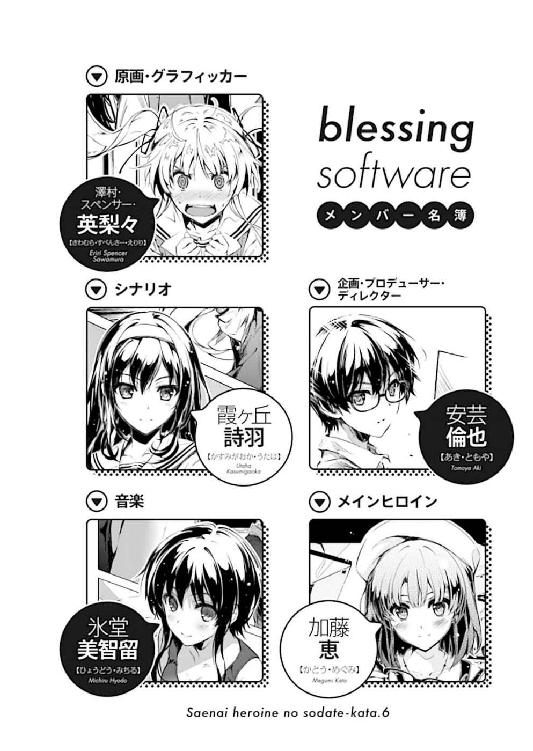
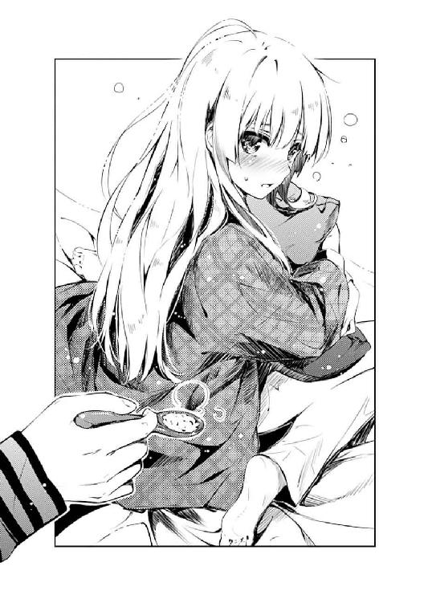

| 冴えない彼女の育てかた 06 | |
| 丸戸史明 | |
| Kadokawa / 富士見書房 (2014) | |
冴えない彼女の育てかた６
丸戸史明

富士見ファンタジア文庫
本作品の全部または一部を無断で複製、転載、配信、送信したり、ホームページ上に転載することを禁止します。また、本作品の内容を無断で改変、改ざん等を行うことも禁止します。
本作品購入時にご承諾いただいた規約により、有償・無償にかかわらず本作品を第三者に譲渡することはできません。
本作品を示すサムネイルなどのイメージ画像は、再ダウンロード時に予告なく変更される場合があります。
本作品は縦書きでレイアウトされています。
また、ご覧になるリーディングシステムにより、表示の差が認められることがあります。
口絵・本文イラスト 深崎暮人

プロローグ
放課後の視聴覚室に差し込む夕陽が、熱を置き去りにした冷たい光だけを注ぎ込む一二月上旬。
「違うの。そこはそうじゃないわ倫理君」
「え？」
......なんだけど、そんな冷たい空気に浸された教室内のほんの一部に、熱気に満ちた言葉と息遣いが交錯する。
「そんな性急に求めても、女の子は怖がるだけ......もっとゆっくり、十分に時間を掛けて、身も心も蕩けさせるのよ」
「け、けど......間が持たないよ」
「大丈夫、私の言う通りにやってごらんなさい」
「う、うん......悪い、詩羽先輩。本当なら俺がやらなくちゃならないことなのに」
そんな、囁くような言葉でさえ熱をもって俺の顔にかかるくらいに近い距離で俺を見つめるのは、艶やかな黒髪ロング美人の例の人。
物憂げな表情から氷の舌鋒。
かと思えば女神の表情から慈愛に満ちた福音。
かと思えばめんどくさい女の表情から重い謎かけ。
もう色んな顔がありすぎて、最近じゃこっちもどう対処したらいいかわからないアンバランス美人。
ラノベ業界で、才能溢れる若手女流作家として耳目を集める霞詩子こと霞ヶ丘詩羽先輩。
「いいわよ、だって倫理君、初めてなんでしょ......？」
「そ、そりゃ......まぁ」
そしてさっきから、そんな詩羽先輩の魅力たっぷりなボイスと言葉と態度に、俺の中の全ての血液が顔に集められたかのように、耳たぶまでどくんどくんと鼓動している。
そんな、今だけはまるで完全受身系童貞ハーレム主人公みたいな初々しい反応をしている俺の名は安芸倫也。
二次元コンテンツに自らの三次元の命を捧げ、ディスプレイやプロジェクターに映し出されるバーチャル美少女に心奪われ、果ては究極の架空ヒロインを自ら生み出そうと、同人ゲームサークル『blessing software』を立ち上げた、まぁ控えめに言っても終わっているオタクだ。
「なんて余裕ぶってても、初めてなのは私も同じなんだけどね」
「せ、先輩も？」
「なぁに？ もしかして疑ってた？」
「い、いや、そんなことは......」
そう、俺は二次元に魂を持って行かれた男。
「......始めるわよ」
「......うん」
......だから三次元で発生したイベントなんかに心奪われるはずはないんだよ？
多分。きっと。
「じゃあ、まずはね......軽く髪を撫でてみて？」
「こ、こう？」
「そんなに強くする必要はないわ。ほんのわずか、髪が揺れる程度でいいから」
「こんな感じ......かな？」
それでも俺は、詩羽先輩に導かれるまま、彼女の髪を少しだけ揺らす。
すると彼女は、ただ髪に触れただけのはずなのに、全身をほんの少し、びくんと揺らした。
「そう、そうよ......そうすれば女の子は安心して、だんだんと穏やかな表情になっていくから」
「穏やかな......表情」
確かにそこには、さっきまでの、頰を染めながらも少し緊張気味だった表情に代わり、目尻も口の端も下がった、満たされた面持ちの彼女がいた。
「そして同時に、女の子を安心させる台詞を、これもゆっくりと、呟くように」
だから俺は、ほんの少しだけ強まる勇気とともに、少しだけ〝攻め〟にシフトした台詞を流し出す。
『見た目にも綺麗だったけど、触れてみると想像を絶するな、君の髪』
『その表現、全然褒められてる気がしないんだけど』
『えっと、ごめん。想像を絶する滑らかさっていうか、手触りっていうか、気持ちよさっていうか』
『ん～、まだまだ微妙、かな？』
彼女の言葉やその口調から、先ほどまでは見られなかった、楽しそうな、からかっているような成分が滲み出してきていた。
詩羽先輩が言う通り、その言葉は、彼女をちゃんと安心させてくれたみたいだった。
だったらもう一歩、俺は更に踏み込んでみる。
『もっと触れてもいい？』
『それって、髪だけのことを言ってるの？』
『え......』
けれどまったく同じタイミングで向こうも踏み込んでくるとは予想できず......
ふと見ると、彼女はいつの間にか目を閉じていた。
それって要するに、安心しすぎて眠ってしまった......訳ではもちろんなく。
「さあ倫理君、後はあなたの決断一つよ？」
「せ、先輩......っ」
「目の前に目を閉じた女の子、その唇は赤く色づきしっとりと濡れて、男の子のたった一つの勇気を待っている。さぁ」
そしてふと見ると、彼女〝以外〟にも目を閉じている女のひとがもう一人。
長い黒髪をさらりと机の上に流しつつ、俺との距離をあと数センチに詰めてきていて。
「さあっ！」
「う、詩羽せんぱ......っ？」
詩羽先輩の吐息が激しく俺の顔に触れ、とうとうその息を吐き出すところまでもが触れてしまいそうな距離まで縮まったそのとき......
「だらっしゃぁぁぁ～ 」
」
限界まで引き絞った弓から放たれたような鋭い音波の矢が、真横から俺の鼓膜に思い切り突き刺さった。
「み、耳が、耳がぁ......っ」
その瞬間、俺の中の全ての計器類が無効にされたかのように、三半規管がぐわんぐわんと揺れている。
......こっちも熱い吐息が耳に吹きかかるほどの近さと熱さを持っているのに、この効果の違いはなんなんだろう。
「何やってんのあんたたちは～！」
そんなふうに、ツンデレのテンプレそのまんまな言動を、ツンデレのテンプレそのままな容姿でもって再現してくれる、今どき珍しいくらいフィクションっぽい金髪ツインテール日英ハーフ美少女の例の人。
激おこな態度から理不尽な口撃。
かと思えばポンコツな反応から負け犬臭漂う嘆き節。
かと思えば涙目の上目遣いから抗いがたい甘え声。
色んな顔があるけれど、どれも一皮剝けば全然隠れてない本性が溢れ出て、なんかこっちが悪いことしてるような気になってくる無意味なギャップ持ち美少女。
同人業界で、流行に聡い壁サークル作家として多大な販売部数を誇る柏木エリこと澤村・スペンサー・英梨々。
「人が死ぬ思いで修羅場ってるそのすぐ側で、イチャイチャイチャイチャイチャイチャイチャイチャと～！」
英梨々のそんなキレ芸......いや怒りも、今の俺と詩羽先輩の会話だけを聞いていたならわからないでもない。
確かにさっきの二人は、『爆発しろ』と爆発されても仕方ないくらいの甘いやり取りに終始していた自覚はある。
しかしそれは......
「今日も今日とて意味不明な妄想に囚われて周囲がまるで見えていないようね澤村さん。まさか今、私と倫理君が、あなたのいるそのすぐ横で、隙を狙ってお互いの愛を確かめ合っていたとでも？」
「か、か......霞ヶ丘詩羽っ」
「私たちはただ、ラストシーンの演出について激論を交わしていただけだというのに、随分と妄想たくましい原画家さんね」
そう！ それ！
俺と詩羽先輩は、確かにたった一つの机を挟んで、ごく近い距離で向かい合わせに座ってお互い見つめ合っていた。
けれどその机にはノートＰＣが広げられ、さらにその画面上では、俺たちが作っているゲームのヒロイン叶巡璃が、主人公である安曇誠司と今まさにイチャイチャを始めようかという絶妙の、いや最悪のタイミングのシーンが始まっていた訳で。
つまりこれは、一月後に迫った冬コミに出す俺たちのゲームの最終調整に盛り上がっていただけという、ラノベによくあるエロ系誤解イベントだったという脱力なオチということで。
しかしそれは......
「あんた今、目閉じてたでしょ！ 隙あらばと思ってたでしょ!?」
「......はて、何のことかしらね」
......うん、そう。
詩羽先輩の、どこまで本気なのかわからないネタ的色仕掛けはこの瞬間にも発動していなかったかと問われれば明確に否定することもできず......
「私はただ、最終シナリオの、心の底から何の憂いもないハッピーなシーンをできうる限りクオリティの高いものに仕上げるために、倫理君と一生懸命頑張っていただけなのに。その崇高な魂の繫がりをそういう表層的な面でしか捉えられない薄っぺらい人の思考にはついていけないわね」
「ならなんで男の脚の間に自分の脚を潜り込ませてるのよあんたは！」
「ああっ！ いつの間に!?」
道理でさっきからふくらはぎの辺りが妙に温かくてすりすりするのかと思った......
「だってほら、『膝突き合わせて話し合う』って言うじゃない」
「それ突き合わせてない割り込ませてる！ 挿入してるじゃないのよ！」
「え、え～」
さすがエロ同人作家、そっち方面での妄想は他の追随を許さんな。
「だいたい演出は倫也の担当であんたはシナリオだけのはずでしょ？ 今日だっていちいち顔出して口出す必要なんかないじゃない。推薦決まって学校だって来る必要もないのに！」
「何度言えばわかってくれるのかしら澤村さん。私はただ、私たちのサークルの作品をよりよいものにするために......」
「役目が終わったから男に捨てられたのを認められずに、頼まれてもいないのに色々と余計な世話を焼いて必死で繫ぎ止めようとしてる痛い女にしか見えないわね」
「............その辺りの件に関しては場所を変えて話し合わない？ そうね、トイレの裏か屋上なんてどうかしら？」
......え～と、この辺りで俺にはもはや収拾がつけられないことが判明したので、とりあえずここまでの状況整理でお茶を濁させていただくことにしようと思う。
先月末の段階で、とうとうシナリオが完全アップした俺たちの同人ゲーム制作は、いよいよマスターアップ直前の最終段階に突入した。
今のところ音楽も演出も順調で、どちらも多分来週辺りには目鼻が付いたといえる状態に持って行ける見込みだ。
だからこうして、俺が担当するスクリプト、演出周りについても、更なるクオリティアップのため延期......じゃなくて細かい作り込みの段階にまで到達している。
しかし......
「だいたい澤村さん、あなたの原画パートだけ遅れに遅れているっていうのに、いちいち人の恋愛事情にまで口を出している暇はあるのかしら？」
そんな順風満帆にも見える進捗状況に、たった一つだけでも不安要素があるならば......
いや、そのたった一つの不安要素が、他の全ての光を覆ってしまうほど大きな影を落とすとすれば、果たしてどうだろうか。
......てゆうか何の事情だって？
「あたしが遅れてるのはあんたたちがシナリオ遅らせたからじゃない！ それどころかいきなりのルート追加でまるまる五枚も原画増やしてっ！」
「誠に申し訳ございませんっ！」
そしてまぁ、その不安要素の真因たる俺は、たった今修羅場っている英梨々に対しては最近流行りの土下座でもって応えるしかなかった。
何しろルート追加しようと言い出したのも実際に追加したのも、そのルートに新規で原画を五枚も発注したのも、紛れもなくディレクター兼プロデューサーの俺だったし。
「なのになのに......あんたが積み上げた遅れを取り戻そうって寝る間も惜しんで頑張ってるあたしの苦労なんか知らんぷりで霞ヶ丘詩羽にデレデレして......そもそも何の準備もなしに今年になって急にゲーム作りたいとか言い出すし、そんな馬鹿な計画に無理やり付き合わせるし、だいたい七年間ほとんど切れてたくせに自分の都合のいい時だけ頼ろうとするし、それにあの頃あたしたちが仲違いしたのだって元はと言えばあんたが......ってそろそろ止めなさいよっ！」
「あ～、うん、ごめん」
さすがに自分の喋っている内容がギシギシアンアン......いや、ギスギスしはじめたのを察知したらしい英梨々は、ようやく自らにツッコミを入れることで、この後発生したかもしれない暗雲を回避した。
にしても、ここに至って気づいたけれど、今日はいつもの部活動のときと微妙に状況が違うんだな。
ぶっちゃけいつもだって目の前の二人のおかげで雰囲気悪いんだけど、だいたいなんだかんだで早めにオチが付いて禍根を引きずらない。
そうか、わかった。
今日は、オチが......じゃなかった、あいつがいないんだ。
「なぁ、そういえば加藤って......」
「ごめんなさい、遅くなっちゃった」
と、俺がやっとその存在に、というか不在に気づいた瞬間、視聴覚室の扉が開き......
いつも通り忘れ去られていた彼女が、いつもとは違う状況で顔を出した。
「にしても寒くなったね～、さすがにこの時間に外はきついね」
「あ、ああ」
遠目からも寒さを感じさせる白い息を吐き、全然近くに寄らずに、こっちを見ることもなく適当な席に座ったのは、毎回印象が薄いことをネタにして印象づけようとしている例の人。
フラットな表情からフラットな言動。フラットな表情からちょっと毒の効いた皮肉、フラットな表情からちょっと優しい思いやり。
「それで今日はなにをすればいいかな？ デバッグの方はどこまで進んだ？」
「えっと、それは......まぁ、そこそこ」
たった一つの顔しかなくて、しかもそれが印象薄くて、だからこそ二次元では輝かせてやりたいと思ってしまった、それでも普通の美少女。
俺たちのゲームの中では、メインヒロイン叶巡璃にしてヤンデレヒロイン丙瑠璃。
けれど現実では、単なる同級生で、クラスでもさほど話題にならない空気ヒロイン、加藤恵。
「......どしたの？」
「い、いや......」
......の、はずだったんだけど。
そんな普段は窒素みたいな加藤の横顔を、今日は皆、なんとなく距離感を測りかねた微妙な感情で見入っていた。
いや、今日は、というより、ここ数日はずっとこんな感じだ。
何より今までとの一番大きな違いは、その髪型。
春に初めて出会ったときのショートボブ。
夏にいきなり変えてきたショートポニー。
それが伸びただけの秋のポニーテール。
今まで、色々と変わってきたのに、その身にまとう雰囲気だけは変わらずフラットのままだった。
けれど今は......
「って、なんでみんな手が止まってるの？ もうマスターアップまで日がないよね？」
「あ、ああ、そうだな......」
「う、うん、ごめん恵」
「............」
そう皆を促すその仕草がいつもと微妙に違って見えるのは、加藤が振り向くたびにふわりとその存在を主張する、艶やかな黒髪ロングのせいだろうか。
初めて見た後夜祭のとき、『詩羽先輩と属性が被るだろ！』とか『あ、でも前髪ぱっつんで差別化できてるから微妙にセーフ？』みたいないつも通りの論評に走れなかったことが、今のこの俺のモヤモヤした状況を作ってしまっていた。
「それじゃ全員揃ったことだし、今からちょっとミーティングしようか？」
まぁ、いつまでもそんな完全受身系童貞ハーレム主人公みたいなこと言ってても始まらないし、とりあえずいつも通りフラットに流そうとしたそのとき......
「......何かあったでしょ？ 加藤さん」
「え......？」
「詩羽先輩？」
そんな俺の意図を知ってか知らずか、いきなり場を乱す発言が、意外な方向からやってきた。
「ここに来てからのあなた、ずっと心ここにあらずって感じよ。きっと何か、今まで経験したことのない衝撃的な個別イベントがあったのでしょう？」
加藤が来てからずっと一言も喋らず、彼女の表情を窺っていた詩羽先輩が、突然、意を決したように、加藤の席の前に立ち塞がり、吐息がかからんばかりに真正面から見据える。
しかも今度は霞詩子モードではなく〝落としのウタさん〟モードで。
「その様子だと......そうね、男絡みかしら？」
「え？」
「え？」
「え？」
うわ、綺麗に三つハモった。
「どうやら図星のようね。となると、急に綺麗になったあの子に校内の噂が広がり、今さら男子に告白されたとか、そういう感じかしら」
「そんなぁ、別に、何もないですよ」
「それにしては、今日のあなたの態度や行動には不自然な点が多すぎるのよ」
「え、えっと」
「......英梨々、お前、今、加藤の様子がちょっとおかしいんだがって思ったか？」
「あたしにそういうのわかるわけないでしょ」
「だよなぁ......」
常に小説で思春期の男女の心の機微を追い求め続けている詩羽先輩と違って、こいつはエロ同人で成人（自称）の快感の機微ばっかり追い求め続けているからなぁ。
まぁ、かく言う俺も、そんな細かい変化に気づけるはずもない消費豚なわけで。
いやまぁだからこそ常に使い古しのありきたりなストーリーでも驚いたり感動できたりする、とてもリーズナブルでお得なオタクなんだけど。
「まず最初に、普段は遅刻なんかしない加藤さんの、初めての大幅な遅刻」
「だからそれはちょっとした用事が」
「へぇ、それはどんな用事？ 差し支えなければ教えていただけないかしら」
「そ、それは......」
でも確かに、今、詩羽先輩に問い詰められている加藤は、ちょっとだけ今までの加藤と違う。
「そして次に、今まで外にいたというあなた自身の発言、さらにそれを裏付ける寒そうな様子」
「ま、まぁ、確かにさっきまで校舎の外にいましたけど」
「だから、どこに？ 何のために？」
「霞ヶ丘先輩......」
いつもみたいにさらっと流せない。
思ったよりも毒のこもったツッコミで応酬できない。
そして何より......平坦さが足りない。
「そしてこれはほんの余談なのだけど、さっき窓の外から中庭を見てたらあなたが男子生徒と木の下で二人きりで会っているのを目撃してね」
「いやそれ推理の決め手になったのその余談だけだよね？ 他は全部後付けだよね!?」
売れっ子恋愛小説家の洞察力にいたく感心してた俺が馬鹿みたいだ。
というかこの人が駆使していたのはどうやらミステリー作家の狡猾さだったようだ。
「どう？ 加藤さん、何か反論は？」
そして、そんな詩羽先輩の落としの手管により、まんまと追い詰められた加藤は......
「えっと、はい、その通りです。告白されました」
「え......え......え～......っ？」
あっさりと白状することで、とうとう以前のフラットさをちょっとだけ取り戻した。
......俺が、加藤に対する以前の気軽なツッコミを忘れてしまったのと同時に。
「............」
「............」
けどその時の、加藤のサバサバした表情に注目していたのは、どうやら俺だけだったみたいで。
ていうかあんたたち、こっちみんな。
「ちなみに倫理君、私は高校に入ってから今まで、先輩後輩同級生問わず三四件告白されたことがあるわよ？」
「あっ、あっ、あたしあんまり数えてないけどたぶん三桁行ってる！」
あと、こっちが聞きたくもない遍歴をここぞとばかりにいちいち披露しないで......
第一章 ライターの打ち合わせって本当にこんな感じっすよ
「さて、そこで問題よ倫理君」
「う、うん」
というわけで、加藤の衝撃の自白から三○分後の帰り道。
陽が落ちても年配客が尽きない、ドリンク一杯と豆と糖分で何時間でも粘れるいつもの喫茶店。
そんな、学校の近くにあるのにほとんど同級生に遭遇しない聖域に、俺たち『blessing software』のメンバーの姿があった。
「今まで気のおけない友達みたいに思っていた女の子が、ある日を境に突然華麗なる変身を遂げ、皆の注目を集めるようになった」
俺の目の前には、さっきの視聴覚室の時と同様に詩羽先輩が陣取り、コーラフロートを挟んで息が触れるほどの至近距離で見つめ合っている。
あ、今膝がこすれた。
「あの、そもそもわたしを変身させたのって霞ヶ丘先輩じゃ......」
「ちょっと部外者は黙っていて。今、大事な打ち合わせの最中なの」
「今の会話の中で一○○パーセントネタにされてるわたしは部外者ですかそうですか」
で、詩羽先輩の右隣、窓際の席に腰掛けクリームソーダに添えられたソフトクリームを口に運びつつ、ほんの少し釈然としない表情を浮かべつつ、概ねいつも通りフラットなツッコミを入れる加藤。
生まれて初めて（自己申告）告白された割には結構ぶれないなこいつ。
「で、そんな事件もあって特に男子の人気はうなぎ登り。放課後に呼び出されて告白までされて、彼女は戸惑っている様子」
まぁ、そんなこんなで以上の三名が一つのテーブルに集い、やっていることといえば......
「そんな時あなた......いえ、主人公にどういう行動を取らせ、どういう展開に持っていくのが面白い物語と言えるかしら？ 思いつくパターンを挙げてみなさい」
なぜか『これであなたも小説家！ 霞詩子先生の実践シナリオ講座』だったりした。
いや、なんでこういう流れになったのかはわからないけど。
「う～ん、そうだなぁ......まずはヒロインだけじゃなく、主人公も周囲の変化に戸惑うってのは当然あるべき心境の変化だよね」
あと、なぜこういう流れになったのかはわからないけれど、なぜお題に挙げられたシチュエーションがこうなっているのかは......まぁわかるよね？
「具体的には？ 主人公のモノローグで表現してみなさい」
「え、ええと......『なんだ、この胸のモヤモヤは？ 俺をどこへと連れて行くのか』」
「セブンス○ーンは答えてくれないから。おちゃらけてないで真剣に考えなさい」
「いや、逃げてる訳じゃ......だから、その、『なんだ、この胸のモヤモヤは？ 俺、もしかしてあいつのこと......』とか定番だよね？」
「まぁ定番かもしれないけど、陳腐でありきたりで紋切り型で何の新鮮味もない、こんな特徴のない台詞でユーザーが引き込まれるかというと甚だ疑問ね」
「お、おぉぅ」
恥ずかしさを超我慢して真剣に答えたらメッタ斬りにされたアカウントがこちらになります。
「ま、そんな定番イベントの後、告白イベントに繫がるのよね。『やっと気づいたんだ、俺、お前のことが......』みたいに」
「あ～あるある。わざわざ先に告白してきた男子の前で言ったりするんだよな、そういう台詞」
「ある意味主人公最大の見せ場だけど、冷静に考えてみると、今まで余裕ぶっこいて放っておいた女が急に取られそうになったから勿体なくなっただけに見えるわよね」
「いや、作り手側がそれ言っちゃぁ......」
とても貴重なプロの意見だし、すごく参考になるし、是非これから活かしていきたいとも思うけど、クリエイターとしても人としても身も蓋もなさ過ぎて作品や作家に夢と幻想を求めるユーザーにはとてもじゃないが聞かせられない。例えば俺とか。
「でも、たとえ陳腐な台詞だったとしても、言い回しや演技によっても受け取り方が変わるかもしれない......倫理君、試しに情感込めて言ってみてくれない？」
「え？ 『やっと気づいたんだ、俺......』ってやつを？」
「そうよ。いい？ 私の後に続いて？ 行くわよ？ 『やっと気づいたんだ、俺には先輩しかいないんだって......っ』」
「......微妙に台詞が変わっているのは何故です？ あとそれは何？」
いつの間にか机の上に置かれていたボイスレコーダーには、なぜかＲｅｃスイッチが入っていた。
「少し汎用的にしてみただけよ。ちょっと資料として使わせてもらおうと思って」
「どんな用途で使うつもりだったんだか」
「それはほら、創作のインスピレーションを湧かせるために」
「本当はインスピレーションじゃなくて他のものが湧いてくるんじゃないの？」
「......これだから凌辱系エロ同人作家は。いちいち表現が下品極まりなくてこれからの社会生活に不安しか覚えないわね」
「作品では優等生気取っておきながら一皮剝けばエロ妄想に取り憑かれたむっつりスケベ作家に言われたくないわね」
「お願いだからファンが激減するようなディスり合いはやめてよ二人とも......」
なお今、詩羽先輩ととっても嫌なやり取りをしているのは、もちろん俺でも加藤でもない。
店に入るなり、『こんなやかましいテーブルになんかいられないわ。あたしは失礼させてもらう』と言いつつ一人、隣のテーブルへと移っていった英梨々だったが、どうやらまだ生きていたようだ。
今もテーブルの上にスケッチブックを広げて、コーヒーフロートを飲みつつ原画のラフスケッチをしているので俺としてはこれ以上強く言うこともできなかったり......
「まぁいいわ。茶々を入れることしかできない負け犬は放っておきましょう」
「あたしが負け犬ならそっちは負け狸じゃない、性格的にも体型的にも......あははははははははっ」
「......他のパターンとしては、ちょっと視点を変えて、実はヒロインの方が主人公の気持ちを確かめるために、わざと思わせぶりな演技をしてましたってパターンもあるわね」
「あ～、確かにそういうのも何度か見たことある」
それはともかく、この二人に関してはどうやら詩羽先輩の方が、気持ちほんのちょっと微細に大人だった。
「ずっと友達関係から前に進めなかった彼女はとうとう最後の勝負に出た......いちいち主人公の前で他の男の子を褒めたり、デートに誘われたことを自慢げに報告したり」
「でもそれって、結局最後は主人公がヒロインを奪い返すんだよね？ なんか当て馬にされた男子が余計に可哀想な気がするけど」
だいたい、その気もないのに男を勘違いさせるような態度を取るとか、どんなあなただけのビッチだよ。
「でも当て馬はもともと主人公を引き立てるために存在してるんだし、主人公に感情移入していれば、わざわざ気に病むこともないでしょ」
「いや、それはリアルでも主人公みたいにモテモテ野郎の思考だろ。俺みたいなリアル世界でサブキャラにしかなれないキモオタは、さすがにそういう場面だと脇に追いやられる当て馬の方に感情移入しちゃうよ」
と、俺が『ミミズだってオケラだってサブキャラだって』と高らかに歌い上げようとしたその瞬間......
「............よく言った......マジよくぞ言ったこの○○○......っ」
「○ねばいいのに......本当、○ねばいいのに......っ」
「え？ え？ え？」
もしかしたら、説明しても理解してくれないかもしれないけど、周りの空気が一瞬で黒みがかった深紫色になった。
「あ～、え～と、その、ごめんなさい......ってわたしが謝ったらまた怒られるしなぁ」
「なに？ 一体なんなの君たち!?」
どうやら三人の間では、この雰囲気を作り出した原因についても共通の理解が得られているようで、いつの間にかウチのサークルの結束も固くなったものだと感慨深くもある。
問題は代表だけその輪に加われないことだけど。
「そ、そうだ！ こういうパターンもあるよね？ 人気者になって戸惑うヒロイン。何を思ったか主人公に『ニセ彼氏になって』とお願いするって展開は？」
詩羽先輩の貧乏揺すりが始まったのを膝頭で察した俺は、慌てて次のネタを振って空気を変える。
「......まぁ、確かにあるわね」
「最初は戸惑いつつも仕方なく恋人同士を演じていた主人公。周囲の冷やかしを恥ずかしく思いつつも、近づいていく二人の距離をなんとなく嬉しく感じていた......けれど主人公はそのうち気づくんだ。自分たちの関係が、単なるイミテーションであることを」
と、なんとか向こうも渋々ながら話に乗ってきてくれたのを察知した俺は、ここぞとばかりに立て板に水で誤魔化し......いや、熱く語る。
「彼女がどれだけ嬉しそうに笑っても、それは心からの笑みじゃない。彼女がどれだけ自分を見つめていても、それは本当の思慕じゃない。彼女がどれだけ愛の言葉を囁いても、それは真実の愛じゃない。そんな哀しい〝偽物の恋〟の物語。略して......」
「略さなくていいから」
なお詩羽先輩は、最近のなんでも無理やり略称をつける風潮には否定的なようだ。
「自分たちの行為が偽物であることを辛く感じていく主人公。やがて積み重なったストレスは爆発し、彼らのかりそめの恋人関係は、終わりを告げる」
「なるほど、それは大ピンチね」
「ピンチであればあるほど、それを克服した大逆転のハッピーエンドが映えるんじゃないか！ 落差が大きい方が物語は盛り上がり、俺たちはヒロインにキュンキュンする。前にそう教えてくれたのは詩羽先輩だよね？」
まだ俺が素人で、詩羽先輩の語る物語論をただの天の声として、ひたすら崇めるだけだったあの頃。
先輩が俺に植え付けてくれていた様々な創作のアイデアは、自分がシナリオを書く立場となった今となって思い返すと、それはどんなに煌めく宝箱だったのかと思い知る。
「そうね、ハッピーエンドが約束されているギャルゲーや萌え系コミックなら、そういうのも安心してキュンキュンとやらもできる。けれど......」
けれど、そんな俺の恩返しとも言える問いかけに、詩羽先輩は意地汚いメスの顔......ではなく、意地悪なクリエイターの顔で切り返してくる。
「けれどリアル系恋愛小説なら、そんな些細な誤解がやがて取り返しのつかない深刻なすれ違いに発展し、彼女が本当に醒めてしまったり、告白してきた男とくっついてしまったり、その男が実はとんでもない最低男で無理やり犯された挙句、黒ギャルビッチアヘ顔ダブルピースエンドになったりとかもあり得るわよ？」
「嫌だよやめてよそういう男の夢も希望もない女のリアルを突きつけるの!?」
ていうかそれってリアル系恋愛小説じゃないよねＮＴＲ系エロゲだよね？
「サブキャラを幸せにしろと言っておきながら、なら幸せにしてあげようってヒロインとくっつけてみるとさらに激怒するとかユーザーってめんどくさいわね」
「だから作者はそういうこと思っても言っちゃいけないんだってば！」
今、俺の目の前にあったのは、意地悪なクリエイターの顔なんて生易しいものじゃなかった。
今、俺の目の前にあったのは、男の夢が壊れるシチュエーションを徹底的に知り尽くし、萌え豚に致命的ダメージを与えることに特化した女流作家の真っ黒な笑顔だった。
「ではここで、次の問題よ」
と、詩羽先輩は、自身の精神攻撃により頭を抱えブルブル震えている俺から視線と興味を外すと、新たな獲物を求めるように右隣を向き、変わらぬ静かな口調のまま、けれど凄みを増して問いかける。
「ここまで、『主人公以外の男の子に告白された女の子』という状況で色々な展開パターンを想定してみたけれど、今回のあなたはどれに当てはまるのかしら？ 加藤さん」
「え～と、今までの会話が全部前振りとか、まわりくど過ぎませんか霞ヶ丘先輩？」
......んで、その満を持した攻撃を受けた加藤の方はといえば、毎度お馴染みのスマホをいじりつつ、実に誠意と危機感に満ちあふれていないおざなりな反応を返した。
「なんて返事するの？ 付き合う？ 断る？ それとも、主人公がどんな反応するか、しばらく様子見？」
それでも詩羽先輩は、そんな加藤のスルースキルを今日だけは認めない。
その少し強硬な態度に、加藤の方もやっとスマホから手を離し先輩の方を向き直る。
「あなたの返答によっては、どこぞのヘタレ主人公っ、の行動と決断と読者好感度が大きく変動する可能性があるのだけど」
と、『どこぞのヘタレ主人公っ』のタイミングで俺のすねに何かが当たった。痛い。
今は誰も俺の方を向いていないというのに、なんと正確なトウキックだろうか。
「え～と、あの、こういうこと言うのはあれですけど......」
「なに？」
「霞ヶ丘先輩、最近生き急いでません？」
「............」
加藤の表情や口調からも、詩羽先輩を気遣っているのは十分すぎるほど伝わってくる。
......が、どうやら詩羽先輩にとってみれば、その慈愛に満ちた視線と余計な気遣いがいたく癇に障ったらしく、今まで以上に厳しい表情で加藤を睨みつけている。
もういや！ こんな怖いテーブルになんかいられない！ 俺も別のテーブルに移らさせてもらって明日の朝冷たくなって発見されたい。
「それはね、私だって確かに色々と釈然としない思いはあるわよ？」
今度は『それはね』と『私だって』と『確かに』と『色々と』と『釈然と』と『しない』と『思いは』と『あるわよ？』のタイミングで左右のすねにトウキックのコンビネーションが突き刺さる。めちゃくちゃ痛ぇ。
「でもね、一応このサークル、今大事なときなのよ。冬コミまであと一月を切ってて、ゲームのマスターアップまで二週間を切ってて、皆の気持ちが一つにならなくちゃいけないときなのよ」
「詩羽先輩......」
でも、その詩羽先輩の想いのこもった台詞に、俺はその痛みも忘れてはっとなる。
脳裏には、『痛いか？ だがな、俺はもっと痛いんだ！』と涙ながらに拳を振るう熱血教師の姿が頭をよぎる。
まぁ今のご時世、どんな情熱があろうと体罰はＮＧなんだけどね。
「......まぁ、そんな大事な時期にもかかわらず、未だに原画を上げてこなくて、サークルに混乱と危機をもたらしている不穏分子もいるにはいるんだけれど」
「○ね、○ね、○ね○ね○ね○ね○んじまえ。ラノベの業界から消しちまえ、○ね」
なんか遠くからえらく陰鬱なテンポと曲調の歌が聞こえてきたような気もするけど今は気にしない方が賢明だと判断して黙殺することにした。
というか、あいつはもう色々と駄目だな......
「だからね、加藤さん......」
「霞ヶ丘先輩」
「え？」
と、そんな箸休め的なやり取りを挟んで、詩羽先輩がまた加藤に向き直った瞬間。
「もう、答え出てるじゃないですか。さっき霞ヶ丘先輩が言っちゃったじゃないですか」
「私、が？」
「今は、皆の気持ちがまとまっていなくちゃならないときだって」
今度こそ、加藤は本気の笑顔でもって、詩羽先輩を正々堂々と迎え撃ってきた。
「加藤、それって......」
こうして二人、黒髪ロング美人が至近距離で並んで向き合ってるとなんかキャラ被りが酷......じゃなくて壮観だな。
「わたし、今のままがいいんです」
「......ちょっと待って加藤さん。それ壮絶なコミュニティ崩壊フラグよ？」
「あ～、いえ、あのですね......」
詩羽先輩が何を言っているか俺は理解できなかったし理解したくもなかったけれど、でも、加藤の言葉とそのときの表情の方は、俺の心にすうっと染み込むフラットさに満ちていた。
「実はですね......確かに告白はされたんですけど、一瞬でフラれちゃいまして」
「え？ な、なんで......？」
いや、それは、フラットではなく......
「それがとっさに『冬コミが近いから今はちょっと』って答えたら、ドン引きされちゃって......」
「加藤......？」
「か、加藤さん？」
「め、恵？」
「なんだろ？ わたし、普通にオタクになってるのかな？」
そんな非オタにしてはマズすぎる言葉を発し、少し恥ずかしそうに笑う加藤は......
今はただ、素直って言った方がいいのかもしれなかった。
「まぁ、確かに言い方はマズかったけど、噓言ってるつもりもないからいいかなって」
「いや、お前ちょっと待て......」
「だからさっきも言ったよね。わたしが今一番大事なのはサークルで、作品で、冬コミなんだよ、安芸くん」
「ちょっとなに言ってるかわかんないぞお前！」
本当に、わからない。
だって、あまりにも眩しくて。
「じゃ、じゃあ......サークルのためってのは、要するに誰のため？」
「だから霞ヶ丘先輩......その恋愛脳なんとかしません？」
「何言ってるの？ だって今のあなたは魔性の女、愛する彼のためなら他の何者も平気で踏み台にできる女、丙瑠璃なのよ？」
「え～と、すいません霞ヶ丘先輩、わたしが瑠璃なのは髪型だけで、別に人格まで先輩のキャラ設定を踏襲しているわけじゃ......あ、電話だ、ちょっとすいません」
で、多分俺とは別の理由でまだ納得しきれない詩羽先輩がなおも加藤に食い下がろうとしたとき、机の上のスマホが着信を告げ、加藤への追及はいったんお開きになった。
......んだけれど、しばしの間、電話口で何やら熱心にやり取りしていた加藤が、やがて電話を切り、俺たちに向き合い、さらに真剣で、そして楽しげな表情を見せ。
そして、またしても俺たちに、本気のサプライズを仕掛けてくる。
「ね、ごめんみんな。今から安芸くんの家に集まれないかな？」
「俺の家？ なんで？」
「加藤さん、今の電話、いったい誰から？」
「ん？ 氷堂さんだよ？ エンディング主題歌が完成したから聴かせに来るんだって」
「エンディング......主題歌？」
「なにそれ、どういうこと？」
「......恵？」
俺だって、その言葉の意味は、もちろん知っていた。
けれど俺には、覚えがなかった。
ほんの少し前に無理やり引きずり込み、ギリギリのスケジュールで、嫌々やっているはずの音楽担当に、そんな大変な仕様の曲を指定なんかした覚えなんか......
第二章 ギターで口説こうとか痛々しくて見てられない
「みんな～、こんばんは～！ 今日はあたし、ミッチーの初ワンマンライブに来てくれてありがと～！」
「いやここ住宅街だから今は夜だからつまり近所迷惑だから！」
というわけで、加藤の衝撃のお誘いから三○分後の帰り道......の終着点。
陽が落ちても相変わらず両親がまだ帰ってきてない、男子高校生の家なのになぜかいつも女子高校生たちがたむろできてしまう、いつもの安芸家。
そんな、もし校内の誰かにバレたら大問題に発展してもおかしくないオタクの巣窟に、俺たち『blessing software』のフルメンバーの姿があった。
「え～と、それじゃ早速一曲目......って、いきなりサプライズ行っちゃおっかな～！ 実はね～、今日はなんと、新曲を用意してま～す！ このライブに来てくれたみんなだけに、初めてお披露目しちゃうよ～！」
「だから黙れ。少なくとも静かに喋れ」
「............」
「............」
「あ、あは、あはは......」
そう、〝フルメンバー〟だ。
俺の右隣には、冷静さを装いつつも、不機嫌さを隠そうともせず、その大声の主を無言で睨む詩羽先輩。
俺の左隣には、絶対反応するもんかとばかりに、スケッチブックに描き込む手を止めない英梨々。
さらにその左隣に、その二人を必死で引き込もうとしたけれど、肝心のアーティストのノリがあまりにアレなせいで、自分まで少し引いてしまっている加藤。
そして......
「なんだかな～、ノリ悪いな～、今日のお客さんは～」
「お前のテンションがおかし過ぎんだよ！ あと何度も言うけどもっと慎みを持て」
「だって仕方ないじゃん！ ついさっきまで三日三晩寝ないで歌作ってたんだよ？」
で、俺の真正面、ステージに模した俺のベッドの上で、制服姿にあぐらをかいて、お気楽そうにギターを構える〝自称〟アーティスト。
目の毒にも程がある大ざっぱな格好と動作で健康的な色気を振りまきまくっている、ちょっとくせのあるショートカットの長身美少女なイトコの人。
後先考えない極楽思考から引き起こす山のようなトラブル。
かと思えば強すぎる身内感覚からの激しすぎるスキンシップ。
かと思えば、女子校育ちで男慣れしてないせいで時折顔を覗かせる、突然の純情。
色んな顔があったとしても、親戚関係があるせいで一生付き合っていかなくちゃならないから本当にもう扱いに困る無防備エロス系少女。
つい最近、アニソンライブでデビューを果たした、けれど非オタのバンド少女、『icy tail』のミッチーこと氷堂美智留。
「で？ これは一体どういうことか説明してもらおうか......加藤」
「あ、うん、ええとね......」
「や～だからさ～、トモがど～してもあたしが欲しいって駄々こねてるって言うじゃん？ でもこっちとしては今まで散々好き勝手やられまくっちゃってるし、これ以上求められても体がもたないよ～って断ろうとしたんだけどさ～、でもやっぱ、イトコの男のコがやっと男になろうってんだし、思う存分させてあげない訳にはいかないじゃん？ だったらここはおね～さんがひと皮剝いて......じゃなくてひと肌脱いでやろうかな～って」
「......っ」
「......っ」
「............聞こえなかったか美智留？ 俺は加藤に聞いてるんだ。お前は黙ってろ」
「え～」
どうせ美智留に聞いても要領を得ない上に埒が明かないことがわかっていた俺は、その質問の矛先を、話が通じやすい加藤に向ける。
というか既に、美智留の『深いこと考えず行き当たりばったりで適当なこと喋るせいでエロ方向に誤解を招くしかない超話術』にイラっとした両隣からの物理的攻撃に晒されている俺の身にもなって欲しい。
「じゃわたしの方から。ええとね、実はこの前、氷堂さんにゲームのテストプレイをしてもらったんだよ」
「そうそう！ 先週、いきなり加トちゃんの方から連絡してきてさ～」
「あ、いいよ氷堂さん、こっちで説明するから............あとわたしのこと、ちゃん付けはＯＫだけどせめて正しい発音で呼んでってお願いしたよねこの前」
「あれ～そうだっけ？ や～ごめんごめん加藤ちゃん」
あれ、今、珍しく加藤もイラっとしたっぽい？
いや、今はそんな女子の些細なプライドの件はともかく......
「テストプレイ？ なんで美智留なんかに？」
「あたし〝なんか〟......？」
「あ、いや......」
「まぁ、確かに安芸くんがそう言っちゃうのもわかるよ。だって氷堂さん、非オタでゲームなんてやったことなかったし、最初のうちは全然興味持ってくれなかったし、デバッグが何かも知らなかったし、そもそもインストールのやり方を教えるのに一時間かかったし、プレイ始めてもすぐに飽きてギター弾き始めるし」
「......やっぱあんたのこと加トちゃんって呼ぶわ今後ずっと」
なんか話を聞くだけでも、随分と加藤の苦労が偲ばれるな。
あと、どうやら女子の些細なプライドってのは男が想像するより随分根が深いらしい。
「でも、結果としては無駄じゃなかったよ？ 安芸くん」
そりゃ、確かに事情だけをかいつまんで聞けば無駄じゃなかったのはわかる。
だって、エンディングに歌がつくことになったんだぞ？
同人ソフトの、素人ディレクターのデビュー作にだぞ？
プロの小説家のシナリオだけじゃなく、人気同人イラストレーターの原画だけじゃなく、その上さらに、オリジナルのボーカル曲だぞ？
それがどんなにありえないことなのか、小学生の頃からコミケに行ってる俺にわからないはずがないだろ。
「でも、だからなんだってそんなことに......」
「氷堂さん、安芸くんの書いた追加ストーリーをプレイしてね......このままじゃ全然駄目だって」
「んだとぅ美智留！ お前に俺のシナリオの何がわかるんだよぅ!?」
「え～！ そこまで言う!?」
あ～、とりあえず自省の意味を込めて忠告しとくぞ？
今までただ一つの作品さえ世に出したこともない消費豚......いや、純粋に作品を楽しんでいるユーザーが、自分の知識レベルや経験のなさを棚に上げて......いや、こちらの力不足を見抜いて酷評したとしても、作った側は決してキレたり匿名掲示板を荒らしたりブログやＳＮＳで罵倒したりしてはいけないよ？
黙って飲み込み、なにくそと奮起して、次回にもっといい作品を作るしかないんだよ？......ないったらないんだよ？
「あ～、違うって。そういうんじゃないんだって安芸くん」
「じゃ、じゃあ、どういう意味なんだよぅ？」
加藤のフォローが、なんか付き合ってる彼女の理不尽なワガママを仕方なくなだめてる彼氏みたいな口調になってる。
今の俺、そんなめんどくさい拗ね方してたんかな？
「今のままじゃ、全然安芸くんの役に立ってないって、もっと力になりたいって言ったんだよ、氷堂さん」
「え......？」
「ちょ、加トちゃん！ それは言わない約束だって......」
「加藤だから」
「......加藤、ちゃん」
『お前らいい加減くどいからそのネタ引っ張るのやめろよ』というツッコミはこの雰囲気なので封印しつつ、ぷいっとそっぽを向いてしまった美智留の横顔を見つめる。
「ま、そう思うのも当然と言えば当然だけどね。何しろ氷堂さんがプレイした安芸くんのシナリオは、まだ全然作りかけだったし」
そりゃ確かに、当然と言えば当然だよなぁ......上がってからまだ半月も経ってない。
「だから音楽がまるで合ってない。演出もまだ作り込んでない。絵も全然揃ってない」
「......そこでさり気なくあたしを刺すのやめてくんない恵」
「だから被害妄想たくましすぎるんだってば。英梨々も安芸くんも」
と、加藤がまたヤンデレ彼女をなだめる彼氏みたいに少し疲れた表情を見せる。
いや、でも今のは言い方を考慮すべきだった。
『絵がない』ってのを最後にオチっぽく持って来たのがまずかった......って、それだけで反応するってめんどくせえな確かに。
「それでね、改めて二人でシナリオを読み直して、どこにどういうＢＧＭを入れるか、相談し合ったんだよ」
「いや、何やってんだお前ら......」
「だから、ゲーム作りだよ」
「そういうことじゃなくてさ......」
加藤と美智留のやってることは、色々と問題だらけだ。
ディレクターである俺に何も言わず、勝手にメンバー間だけで相談して曲数を増やすとか、サークルの秩序を乱してる。
そりゃ確かに、先週の俺は、いや、最近の俺はずっと自分の作業にかかりっきりだったけど、それでも報告くらいは入れられるはずだ。
「だいたいのところは週明けまでに終わったんだけど、でも氷堂さん、どうしても一曲足りないって。だから今から作るって」
「いやだってさ、これ、他のエンディングと全然違うじゃん。すっごい嬉しい結末じゃん？」
「美智留？」
「このエンディングに、今までのエンディングと同じ曲かけたら全然駄目じゃん？」
「あ......」
美智留の『このままじゃ全然駄目』って、そういう......
「最初は曲だけ作ったんだけど、なんか伝わらない気がしてさ～」
「で、どうしようって話になって、なら歌ってみようかって氷堂さんが言い出して」
つまり、こういうことかよ。
ただ、いい作品にしたかったってことなのかよ、お前ら......
「あんなピコピコの音でどうやって歌を鳴らすんだって思ったけど、今は普通にＣＤ音源で入れられるんだって？」
「だ、だからどうしてお前の中のゲームはファミコンレベルなんだよ？ 実機なんて見たこともないだろ？」
そんなツッコミも、今の俺では、なんかいまいちキレがない。
「だったら、やれるかなって......いや～、実際にはそれから作詞で悩みまくって、結局今朝までかかっちゃったんだけど」
「っ......」
だって、そりゃそうだろ？
オタクに引きずり込まれた一般人と、今でもオタクに理解のないリア充と。
そんな、サークルの中でも、一番オタクから遠い二人が。
一番、ゲーム作りのノウハウも、モチベーションもないはずの二人が。
こんなに一生懸命、しかも自分から動こうとするなんて、誰が思うかよ？
「そんなわけで、説明終わり。あとは実際に聴いてみて、入れるかどうか判断しなよ、ディレクター？」
「美智留......」
美智留の、いつものにぱっとした笑顔と、それに続く得意げなウィンク。
その、俺が今思っていることを読み切ったような悪戯っぽい表情で、わかってしまった。
そっか、つまり、今まで秘密にしてたのは、そういうことなんだ。
お前、ただ俺をビックリさせたかっただけなんだろ？ そうなんだろ？
本当に、自分勝手で、馴れ馴れしくて、空気読まなくて。
けれど無理やり付き合わされたゲームのために三日も徹夜して。
完成したらすぐに聴かせようって、ウチに押しかけてきて。
今だって、きっと疲れてるのに。
いや、疲れているからこそ明るく、楽しく、元気よく。
そんな、陽気で、気楽で、悪戯好きな美智留の、これは特大のサプライズ。
「じゃ、聴いてください......タイトルは『トモに捧げるバラード』」
「はああぁぁぁっ!?」
「............っ！」
「おまっ、ちょっ!?」
「あ～、わたし、タイトルまで関与してないし今知ったからね？」
......と思ったら、こいつの空気読まな過ぎる悪戯が、そんな、ちょっといい話程度で済むはずがなかった。
※ ※ ※
「ふぅ～、さっぱりした。あ～気持ちよかった」
「......あれだけ食っておいて、よくもまぁすぐに風呂に入れるな」
というわけで、ミニライブ終了から二時間くらい経過した、相変わらずの俺の部屋。
美智留は、新曲を披露したあといきなり『よっしゃ～！ これで禁欲生活終わり～！』などと叫びつつベッドにダイブし、帰りがけの他のメンバーを一瞬硬直させたかと思うと、ピザ屋に電話してピザとポテトとパスタとチキンを注文し、八割がた自分で平らげた。
しかもその直後、意気揚々とこの部屋で服を脱ぎ始め、慌てた俺によって浴室に放り込まれたときにはすでにパンツに手を掛けたところだった。
いつも思うことだけど、コイツどんだけ本能で生きてるんだよ。
「トモも入ってきたら？」
「俺はもうちょい後でいいよ」
で、結局、こうして部屋に戻ってきたときの今の格好は、俺が叩き出したときとほぼ同じくらいの布の量だったけど、もう言ってもどうしようもないだろう。
「せっかく今いい湯加減なのに......沸かし直したらガス代が余計にかかるよ？」
「いちいちウチの光熱費を心配するくらいなら、さっき俺に全額払わせたピザ代の方を心配してくれ」
というか、同い年の女の子が入った直後の、明らかに残り香も温もりも残ってる風呂にそうそう入れるか。
「でもさぁ、早く入んないと、それいつまで経っても消えないよ？」
「はぁ？ 何がだよ？」
と、こっちがそこまで遠慮して距離を置こうとしてるのに、わざわざ俺の前で白い脚をむき出しにしてひざまずき、湯上がりの火照った顔を寄せ、俺を上目遣いで覗き込んできやがるこいつはもはや理性の怨敵にして煩悩の女神。
「跡が残ってるよ......ほうら」
「っ!? み、美智留っ！」
......で、ただでさえ、そんな心臓に悪いイトコが、俺の一番恥ずかしいところに直接触れてきやがった。
「あっはっは～......や～勝った勝った、完全勝利～」
「やかましい！」
きっと、涙の跡が白く残ったままの、目の下に。
ほんと、二時間前の俺、めちゃくちゃみっともなかった。
ただ歌を聴いただけで、人目もはばからずにぐしぐし泣いて。
「うんうん、本気出して作ったかいがあった、魂込めて歌ったかいがあった」
「だから、やかましいって......っ」
だって、仕方ないじゃないか。
本気で、感動したんだから。
美智留の曲は、歌は、その声は、なんというか、俺の琴線に触れまくった。
普段の大ざっぱさからは想像もつかないくらい繊細なギターの音色。
普段の自分勝手にも程がある言葉からは想像もつかないくらい優しい詞。
普段のまくしたてるような調子からは想像もつかないくらい透き通った声。
格調高いようでいて。ちゃんとアニソンっぽくって。
ちゃんと作品のことわかってて。しっかり読み込んできてるのが伝わってきて。
長い長い呪いから解放され、憂いなく心の底から笑っている主人公やヒロインたちの笑い声が聞こえてくるようで。
......気がついたらボロボロ泣いている俺を、けれど他の聴衆たちもまったく揶揄したり笑ったりしなかった。唯一、アーティスト本人を除いて。
で、どうして皆が俺を笑わなかったのかもわかってる。
だってみんな、それどころじゃなかった。
泣いてる俺を笑ったら、ブーメランが飛んでくるって知ってたから。
それくらい、あの場にいた全員が飲み込まれたのを全員が知っていたから。
ただの、素人シンガーソングライターの、劇伴に。
「なんてゆ～かさ......」
「ん？」
「自分の作品が、人を感動させるって、たまんないね」
そして何故か、今の美智留の声音は、さっきの俺にちょっと似て、少し湿っぽかった。
そう、作品が伝える感動は、決して一方通行じゃない。
受け手が得た感動は、言葉や拍手や、それこそ涙になって、作り手の元へと帰ってくる。
だから作り手は、さらなる高みを目指す。
もう一度、受け手を強く感動させたくて。
そしてもう一度、自分を強く感動させたくて。
俺はそういうの、何度も見てきたから、わかってる。
「そ、そういや美智留、お前、あのタイトルなんなんだよ！」
「え～、いいじゃん。あたしの素直な気持ちだったんだけどさぁ」
「だからって、あんなの全然曲と合ってないだろ」
「ま、あれは（仮）ってやつだよ。他にも『トモよ静かに眠れ』って案もあったけど」
「殺すな」
それがわかったから、俺は自分のためだけでなく、あえて話の流れを変えてみせる。
だって、二人きりで、そんな空気になったらマズ過ぎる。
「で？」
「で、とは？」
「あたしの曲だよ。採用？ 不採用？」
「............」
「ゲームに入れるの？ それとも捨てるの？」
「......もない」
「ん～？ なに？ 聞こえんなぁ～」
「......それをすてるなんてとんでもない！」
「あっはっはっはっは～、やっぱりあたしの勝ちじゃんトモ～」
「せっかく作ったものを没にするほど余裕のある制作体制じゃないんだよ」
さっきよりも長い笑い声とともに、美智留が高らかに勝利宣言をする。
俺の狙い通り、いつもの美智留と、いつもの俺に戻る。
うん、こんなのでいいんだよ、俺たちは。
「え～、でも今から入れると結構めんどいかもって言ってたよ加藤ちゃん？ 容量がどうとか、データの差し替えがどうとか」
もちろんその通りだ。
今さらこんな高音質の大容量データを入れ込むなんて大冒険もいいところだ。
何が起こるかわかったもんじゃないし、どれだけの手間になるかわかったもんじゃない。
「別に、曲の一つや二つ、大したことじゃない」
もちろん噓だ。
ただ、何が何でも、何日徹夜しても死んでも入れるに決まってるってだけで。
「ふぅ～ん？」
「何だよ？」
そしてもちろん美智留は、俺のそんな適当な放言を見逃すはずもなく。
「も～、素直にゆっちゃえよ～！ トモはあたしが大好きなんだってさ～！」
「お前の！ 作った！ 曲が！ 大好きなんだよ！ 変な省略するな！」
「......大好きだってのは、改めないんだね？」
「......俺は噓は嫌いだ」
「んふふ～、噓つきめ～」
「くっつくな暑苦しい」
「ダウト～、今は真冬だし～」
美智留が、俺の背中に背中を合わせ、ぐいぐいと押しつけてくる。
そしてふたたびギターを手に取ると、ゆっくりと〝あの曲〟のイントロを爪弾き始める。
......だからやめろって泣いちゃうからさぁ。
「それでどう？ ゲームはちゃんと完成しそう？ 冬の、えっと、コミックなんちゃらに間に合いそう？」
「ああ、もうすぐだ......」
シナリオは完パケ。スクリプトもほぼ完成。そして音楽が今日、最強になった。
あとは原画だけだから、もう勝ったも同然だ。
だって残ってるのは、きっちり仕上げることに関しては、サークルの中でも一番信頼のおける、一番プロ意識の高いアマチュア、柏木エリだけなんだから。
「それでさ、トモ。それで、ゲームが完成したら......」
「なんだよ？」
「本当に、みんなで幸せになれるの？」
「え......」
『一緒に、幸せになろうぜっ！』
それは、美智留がとうとう仲間になってくれた、あのライブの日。
才能豊かなサークルの仲間たちを、ただのワガママで縛ってるって俺を責めた美智留への、俺なりの答えで、誓い。
「......なれるさ」
「ホントにぃ？ あれから結構経ったけど、ほとんど何も変わってない気がするんだけど。このサークルの人間関係」
「元から仲がいいんだよぅ」
「そっかなぁ？ 些細なきっかけであっという間に崩壊するんじゃない？」
「お前、ヤなこと言うね」
「だ～ってさぁ」
「俺は今、すっげー歌を聴いててめっちゃ気分がいいのに、水を差さないでくれよ」
そんなふうに、ギターの演奏で俺を涙目にしながら、意味不明な説経で俺の心臓をちくちく刺してくる美智留は、まるで......
「そこだよトモ」
「どこだよミッチー」
「あたしにしときなって」
「何を!?」
「だってあたしは家族だし。絶対にトモを見捨てたりしないし」
「......どちらかと言うとお前は見捨てられる方を心配しろこの極楽トンボ」
「え～、ひど～い」
そう、まるで駄目な親戚の姉ちゃんみたい......って、まぁ、ほぼその通りか。
「美智留、お前、社会に出てもその根無し草のままじゃこの先やってけないぞ？」
「大丈夫だよ、そしたら頼りになるイトコが面倒見てくれるじゃん」
「お前、ヒモにでもなるつもりかよ！」
「え～、最初からその気満々に決まってんじゃんマネージャー」
それも、いつの間にか『俺が何とかするしかないのか？』とかつい決心してしまいそうなくらいに心底駄目な姉ちゃんみたいで......
「お前がなんと言おうと、俺はこのサークルをずっと続けていくぞ」
「逃げたね？」
「もちろん、お前もずっと、ここにいるんだ」
「トモ......」
今さら解散なんか、できるか。
バラバラになんか、なってたまるか。
詩羽先輩がシナリオを書いて、英梨々が絵を描いて、美智留が曲を書いて、それを、その他諸々で形にして。
詩羽先輩が悪口雑言を飛ばし、英梨々が過剰反応し、美智留が挑発して、それを、その他諸々がハラハラして見守って。
そんな、お祭りみたいな毎日を知ってしまった今、もう、ただ一人でゲームやアニメを見るだけの消費オタになんか戻れない。
詩羽先輩が卒業しても。誰かが引っ越しても。忙しくなっても。それから、えっと......彼氏ができたりとかしても。
毎日じゃなくていい。ずっとじゃなくていい。
それでも、いつか、同窓会みたいに。
何十年おきで再結成されるロックバンドみたいに。
「まぁ、あんただけじゃなくて加藤ちゃんもその気でいるみたいだけどね」
「加藤......が？」
「ぶっちゃけ今、ウチのサークルがうまく回ってるのって、トモじゃなくて彼女のおかげだよね」
「うっ......」
そのとき吞み込んだ息には、色々な感情が入り混じっていた。
サークル代表としては痛くて、あいつを勧誘した安芸倫也としては嬉しくて、単なる友達としては目を見張り、そんでもって、男としては......
「あたし、わかったよ......あのコが一番の味方で、一番の敵だよね」
「敵ってなに！ あんな人畜無害な奴捕まえてそんな物騒なこと言うなよ!?」
「な～に言っちゃってんのかねぇ......」
そんな、少し謎めいた呟きを残しつつ、美智留が、ギターを賑やかにかき鳴らす。
まるで『......わかった。この話はやめよう。ハイ!! やめやめ』とばかりに、意識的に今までの余韻を吹き飛ばしているようだった。
自分でも、ちょっと言い過ぎたと感じたのかも、な。
「風呂、行ってくる」
「あ～、ならストレッチ忘れないようにね。どこの筋が伸びてもいいように」
「わかったよ」
そんな美智留が用意してくれた逃げ道にありがたく乗らせてもらい、俺は、美智留の背中の感触を惜しみつつ、頭を冷やすために風呂場へと向かった。
まぁ、湯船に浸かって頭を冷やすってのもなんだか意味不明だったけど。
※ ※ ※
で、結局、風呂に入っている間、俺は結局、頭を冷やす暇もなく、美智留が言っていたことの意味を考えていた。
加藤が一番の味方で、一番の敵......？
それって、美智留にとってなのか、それとも......？
「......ん？」
それはともかく......
なんでストレッチが必要なんだ？
※ ※ ※
そして風呂から上がったとき......
「ぎゃああああああああ～～～」
「動くなトモ！ 無理に抵抗したらかえって痛いだけだよ～？」
「やめてよみっちゃ～ん！」
俺は、ベッドの上で美智留の最後に残された欲望のはけ口となっていた。
「ほらトモ、もう諦めてあたしに全部任せちゃいなって～」
「んなこと......できるか......うぅっ」
「大丈夫だって......すっごい気持ちよくしてあげるよ？ 気絶しちゃうくらい、ね？」
「それ本当に気絶してるだけだから！」
「あ～もう快感っ！ この一週間、誰にもチキンウイングフェースロック掛けられなくて溜まりに溜まってたんだよね～！」
「お前、禁欲生活ってそういう......っ」
氷堂美智留。趣味、プロレス観戦。
......まぁ、女のコにしてはかなりアレな趣味なんだけど、これでも表面上は取り繕ってる方で。
こいつの本当の趣味は、観戦した後の技の実践の方だったりして。
「まだだよトモ......これが終わったら次はドラゴンスリーパーで、その次は首四の字で、それからそれから......っ！」
「待てちょっと待ってくれ～！」
そいつらって、全部密着系じゃないかってのは指摘していいものなんだろうか。
「さあトモ......このまま大人しくあたしの破壊衝動の餌食になるか、それとも腹を決めて反撃するか、早いとこ決めなよ？」
「できるかぁぁぁぁ～！」
こういうの、ごく一般的な〝駄目な親戚の姉ちゃん〟だよね？
全然、特殊じゃないよね......？
第三章 いや、別に聖地化を狙ってるわけじゃないですよ？
そして、翌土曜日の早朝。
「う、うう......ぐすっ、ひっく、ひっく......うぇぇ」
「ほうら泣かないの。男の子でしょうが」
カーテンの隙間からまばゆい朝陽が差し込み、つけっぱなしのテレビからはローカル旅番組が流れ、ほのかにコーヒーの香りが漂い......
「け、けど、けどっ......こんな屈辱的なのって」
「いいよ、トモは動かないで。全部あたしに任せなって」
「美智留......」
そんなふうに、なんだかとっても気怠げで背徳的な空気が漂う俺の部屋。
「じゃ、行くよ、トモ......んっ」
「あ、ああ......っ」
「倫也、悪いけどちょっと話が......ってなにやってんのあんたたちは～～～」
......に、突然キンキラキンな声と髪が舞い踊る。
「え、英梨々っ？ い、今の俺を見るな！ お願い、見ないでぇ」
「あれ～？ 澤村ちゃんおっはよ。や～、キモチいい朝だよね～」
「と、倫也、と氷堂さん？ あ、あんたたち、昨夜あの後、まさか......っ」
ベッドの上に、上半身裸でうつぶせに寝たままシクシク泣いている俺と、その上にまたがり、俺の背中を両手で撫でさする美智留を見て、金色の来訪者は色んなところをぶるぶる震わせていた。
「お願いだからあんま大声出さないでくれ。腰に響く」
「こ、腰......腰って、腰っ!?」
「だから叫ぶなと......あいててて」
「や～ごめんねトモ。昨夜はさすがにやりすぎちゃったね～」
「や、やり、やりやりやり......」
「あ～、英梨々、後で説明するからちょっと黙っててくれ」
朝っぱらからいきなりこの光景を目にした英梨々がどういった誤解をしているか手に取るようにわかるが、今は俺の自尊心の方が大事だからあまり真実は語りたくない。
......そう、この若さで腰やっちまったなんて。
起きたら起きれなくなっていたなんて。
それも女の子にかけられたロメロスペシャルのせいだなんて......
ちなみに、本当にそれだけだぞ？
言っておくが俺たち一緒の部屋で寝てないぞ？
俺の体で心ゆくまでプロレス技を堪能した美智留は、『あ～スッキリした』と捨て台詞を残してさっさと階下の客間に引っ込んだぞ？
その美智留が今ここにいるのは、ちゃんと早起きして俺を起こしに来てこの惨状を目撃し、さすがに悪いと思って湿布を貼るのを手伝ってくれてるだけだぞ？
「ったく、いくらイトコだからって、いくら不可抗力だからって、あんたたちスキンシップが過剰すぎるのよ！」
「そっかなぁ？ 親戚なんてこんなもんでしょ？」
「いや、さすがにそれは俺でさえ違うと思う......」
そう、これは、もはやほとんど伝統芸となった、俺と美智留のエロ系勘違いイベント。
確かに勘違いなんだけど、本当にプロレスだったり治療だったり悪ふざけだったりするんだけど、この事象の問題は、かなりのレベルで役得......激しい肉体的接触をしてしまっていることだったり。
本当、そろそろ先っぽくらいは入っててもおかしくないよな、俺たち。
「ま～何でもいいや。澤村ちゃんも一緒に朝ご飯食べる？」
「っ......結構！」
秋に家出してきて以来、ウチに来るたびすっかり我が物顔でくつろぐ美智留をキッと睨み、英梨々は三回深呼吸して両手で何度も自分の頰を叩き、『あたしは大丈夫、あたしは大丈夫、大丈夫ったら大丈夫』と呪文のように唱えた。
......って、ちっとも大丈夫じゃないだろすっかり乱されてんだろお前。
「倫也、ちょっと話があるの。出られない？」
「悪い、今は腰が......」
女の子の誘いにこの断り方をしなければならない高校二年生って、相当に屈辱感のレベルが高いと思うんだけどどうだろうか。
「そっか、それじゃ、ちょっとだけ外してくれない？ 氷堂さん」
「なになに？ あたしに聞かせられない話？ でもほら、あたしとトモは生まれたときから血で繫がってるから、どんだけ秘密の話をしたところですぐ伝わっちゃうよ？」
「っ......人が社会的地位や対外的評価の圧倒的な差に目をつぶって頭を下げてお願いしているのだから、少しくらいはその意を汲むのが筋じゃない？ それとも、大ざっぱで大味な大女には難しい判断だった？」
「澤村ちゃんが心を込めて『お願いミッチー♪』って頼んだらね？」
「ふざけんな氷堂美智留」
英梨々の、まるで師匠から特訓を受けたかのような黒い嫌味の奔流にも決してひるまず、あくまでも美智留はマイペースを貫き続ける。
それはともかく、いつの間にかサークルメンバーみんなちゃん付けかよ。
「別にふざけてなんかないけど～。ただ、あたしにも先住権ってモノがあるしねぇ」
「またそんないい加減なことばかり言ってっ！ 出てけと言ってるのがわからない？ てゆっか出てって。あたしの目の前から消えてよぅ......っ、だ、大事な話なのに......時間、ないのに、ふざけてる場合じゃ......っ、と、倫也ぁぁぁ～」
「あ～......美智留、悪いけど」
美智留の、まるで相手にしていないかのような適当なあしらいに思いっきりひるみ、英梨々は見る見るうちにしょぼくれて余裕を失っていく。
......ほんと、最近のコイツの堕ちっぷりは一体なんなんだろうな。
この澤村・スペンサー・英梨々って女の子が、実は豊ヶ崎学園だけでなく、この界隈の高校すべてでナンバーワン美少女扱いされてるってことを覚えてる人、いる？
「ま、仕方ないね。ならお互い間を取って、話は聞かないでいてあげるよ」
と、美智留は部屋の隅にぺたんと座ると、耳にヘッドフォンをつけ、そのプラグをギターに繫ぎ、ゆっくりと爪弾き始めた。
と、そのギターからかすかに零れてきた音は、こいつが昨夜披露したゲームのエンディング用に書き下ろしたオリジナル曲。
「......っ」
「......っ」
もはやパブロフの犬状態で反応してしまった俺のすすり泣く声に、なぜかもう一つ、似たような音が被ったような気がした。
「ったく、あんたの周りの女って色情狂ばっかり。霞ヶ丘詩羽といい、氷堂美智留といい！」
「......同人で超インモラルな二次創作を連発してるお前に言われたくないと思うぞ二人とも」
そんなわけで、ようやく美智留に半歩だけ譲歩してもらえた英梨々は、ほっとした表情で俺に向き直ったかと思うと、さっきまでの負けっぷりが噓のように活き活きと仲間をディスり始めた。
う～ん、この小物っぽさがもう。
「あれはユーザーのニーズに真摯に応えてるだけ。霞ヶ丘詩羽みたいに、本質が色情狂だから作品がみんな色ボケるとかそういうのとは違うの」
「......ボケてるかはともかく、俺はそういう作家の色がハッキリ出てる作品って好きだけどな」
そういう意味で、美智留の自分勝手な歌も大好きだ。
天才の、思いもよらなかった、あるいは想像の遥か上を行く才能を見るのって、俺にとってはものすごい楽しみであり快感だ。
だから、次はどんなふうに振り回されるんだろうって、戦々恐々としながらもワクワクしてしまう。
「そういう連中は、すぐに締め切り破ったり、暴走して作品を壊したり、そもそも書けなくなったりして周囲に迷惑掛けるじゃない」
「いいか？ そこで具体的な作家名とか挙げるなよ？ 絶対に挙げるんじゃないぞ？」
「あたしはそんな連中とは違う。きちんと最初に構想を練って、頭の中に完成イメージをしっかり描いて、計算通りの作品を作り上げるわ」
まぁ、確かに英梨々の本はだいたいそういう感じだ。
「そう、何もかも計算通り......出だしも、展開も、結末も、ページ数も、シチューエーションも、主人公の射精回数も、ヒロインの絶頂回数も......」
「ちょっとちょっとちょっと!?」
......全年齢対象作品があまりにも少ないからほとんど読めないんだけどなこいつの本。
手伝った作品を除いては。
「キャラの言動はぶれないし、ストーリーも変な方向に行ったりしない。突然の鬱展開とか、いきなりのジャンル変更とか、唐突な昔の女との再会とか、そういう下品な飛び道具は使わない」
「最後のはセーフだろう最後のは」
「ユーザーの予想は裏切ってもいいけど、期待を裏切ることは絶対にしないってこと。ほら、例えば前のクールのアニメでさ......」
「予想と期待の線引きってなかなか難しいよな！ はいこの話おしまい！」
だからいちいち具体例を挙げてディスろうとしないで欲しい。
「にしても、やっぱ英梨々って、創作に対しては謙虚で真摯だよな。意識が高いっていうか」
「ちょっと！ 人のこと『意識高い系』って、あんたあたしを馬鹿にしてんの!?」
「その言い方がいつの間にか悪口になってる現代用語のあり方は置いといて本当に褒めてんだよ！」
言語って日々成長するもんなんだな......いい方向にも悪い方向にも。
「まぁ、謙虚でなきゃすぐ叩かれるし、真摯でなきゃすぐ見放されるもの」
「本当、これでもう少し実生活でも謙虚でいてくれたら......」
「あっちの極楽キリギリスに比べれば全然真面目に生きてるじゃない」
「偽装お嬢様のくせに」
「何言ってるのよ。産地は全然偽装してないわよ」
「いや加工の方がな......」
と、そんなどうでもいい会話の間に、つい今しがた、美智留のギターがえらくお気楽極楽な曲に差し替わった。
あいつ、本当にこっちの話、聞こえてないのか？
まぁ、それはさておき、やっぱりその主張もスタンスも、とても英梨々らしいといえばらしい。
質も量もきっちり揃った作品を安定供給し。
常に十分に期待に応え、常にそれほど予想を超えず。
だから安心して任せられる。ハラハラも、ドキドキもせず......
......いや、単なる方向性の違いだ。別にいい悪いの話じゃない。
ただ、俺はどっちが好きなのかってだけで。
というか、ぶっちゃけ俺が思い描く理想のクリエイターってのは、英梨々と詩羽先輩のいいとこ取りなんだし。
納期を守り、クオリティを保ち。
ここぞという場面で神の煌めきを放ち。
心折れず書き続け、いつでも連絡がつき、世間とうまく折り合いがつけられて。
そして、結局これが重要なんだけど、とにかく売れる。
我ながら、この二人を組ませることを考えついた俺も天才なんじゃないかと......それしか選択肢がなかったというのはさておき。
「でね倫也？ ここからが本題なんだけど」
「うん？」
「だから安心して欲しいの。あたしが今からやろうとしてることも全部計算のうちだから」
「......待て」
「大丈夫、一日に一回は必ず報告入れるから。携帯の電源もちゃんとＯＮにしとくから。あ、でもあそこって電波届いたかなぁ？」
「............だから待て」
ようやく本題に入ろうとする英梨々の前振りがすでに嫌な予感満載な件について。
※ ※ ※
「な、那須高原!?」
「うん、ウチの別荘。倫也も一度来たことあるでしょ？」
「あ、ああ、あそこか......」
英梨々の口にした場所は、俺の古い記憶を刺激した。
那須高原の高級別荘地の中でも燦然と輝く、名実共にブルジョワジーというものを体現した澤村家の第二の大邸宅。
小学二年の夏休みに、英梨々とその両親に誘われて一週間ほど滞在したことあるけど、巨大な家屋も、豪華な内装も、手入れされた庭も、その外に広がる広大な自然も、それはもう高級リゾートと呼ぶにふさわしい素敵空間だった。
......ただ俺が、その場所の記憶とともに思い出すのは、別荘に持ち込んだドリー○キャス○でプレイした『サ○ラ大○』シリーズだったり、全話マラソン視聴した『君○望○○○』や『○月○○姫』のアニメだったりで、山奥の別荘に一週間も泊まっておきながら朝から晩まで何やってたんだと自分を省みずにはいられない。
本当、まるで成長していない......俺も英梨々も。
「で、いつから？」
「今日から。実は今も外に車を待たせてるの」
「で、いつまで？」
「確認するけど、マスターの納品締めって、来週末よね？」
「............」
「............」
ただ、問題の焦点はその場所ではなく、なぜその場所が話題に出てくるかの方で。
「......そこまで引っ張るつもりか？」
「その代わり必ず間に合わせるから。あたしを信じて？」
えっと、カンヅメって知ってるかな？
ちなみに漢字にすると『缶詰』でなく『館詰め』と書く方な。
つまり、締め切りに間に合わせるのが難しそうな場合に、作家が逃げられな......作業に集中しやすいように、ホテルや別荘などに押し込めておく行為のことであり。
「てゆっか、明後日からまた学校あるだろ？」
「さすがにそっちはサボらないと間に合わない」
「............」
締め切りまであと一週間。
そして、英梨々に託された残りの原画枚数は、一○枚。
「今まで以上に、今回はちょっとヤバいの」
「お、おう......」
で、追い詰められた原画家は、一つの大きな選択をした。
あくまで真摯に。
逃げる方向ではなく、立ち向かう方向に。
自らを、俗世間の喧騒から切り離し、これから数日、ただひたすらに描いて、描いて、描きまくるという選択を......
「け、けどお前、出席日数の方大丈夫かよ？ 今までもイベント合わせで結構休んでたよな？」
「大丈夫、いざとなったら寄付金でなんとかするから......」
「そんな生臭い解決方法やめてよ!?」
まぁ、他のことに関しては結構逃げてるみたいだけど。
つまり、英梨々の話を総合するとこういうことだ。
今からこいつは、那須高原の別荘に引きこもる。
そして、残りの原画を一気に仕上げる。
その間、直接会って話すことはできない。
基本、連絡は英梨々からだけ。俺からはできない幸せ芝居の舞台裏。
だからもし、原画が終わらずに逃げられても投げ出されても俺には止めようがなく、何度も催促してプレッシャーをかけることも、力尽くで描かせることもできない。
ただ、英梨々が描き上げるのを信じるしかできないってことで......
「大丈夫よ倫也。あんたが信じるあたしを信じなさい」
「英梨々......」
「だいたい、あたしが今まで噓ついたことある？」
「お前の日常全部噓で塗り固めてんじゃねえかよ!?」
何か言った。今、八年モノの偽装お嬢様が何か言ったぞ？
「......細かいことを気にする男は嫌われるわよ？」
細かいことを気にするからオタクなんだろうが......
「にしても、何でそこまでするんだ？」
一週間で原画一○枚だったら、他のイラストレーターならともかく、俺の知る柏木エリなら、塗りを含めても十分に計算できる数字だ。
それに、カンヅメするにしても、わざわざ那須高原なんか行かずに家に引きこもるだけで、英梨々にとっては十分な制作環境が整えられるはずだ。
何しろこいつの両親はオタクに寛容......というか俺たちをも凌ぐくらいのオタクなんだから、いざとなったら色々な交渉ごとやヘルプの手配とか、いくらでも手助けしてくれる。
それを投げ打ってまで、一人（運転手付き）別荘に閉じこもるなんて、英梨々の奴、まるで自らを不利な状況に追い込んでいるようにしか思えない。
「覚悟を決めるためよ」
「覚悟......って？」
と、そんな俺の疑問に答えるように、英梨々が厳かな声を紡ぎ出す。
「このサークルの看板になる、覚悟をね」
「あ......」
そうか、英梨々の奴、とうとう自覚が芽生えたんだ。
俺たちを絵の力で引っ張っていこうという、リーダーシップが。
みんなの力になり、作品を成功させていこうという決意が、やる気が。
「任せておきなさい、倫也」
「え、英梨々......っ！」
俺たちのサークルにたった一つ足りなかったピースが、とうとうハマる日が来た。
それは、『一人はみんなのために。みんなは一人のために』という、誰もが全力を尽くし、仲間を助け合い、勝利を目指すというチームワークの精神......
「霞ヶ丘詩羽も氷堂美智留も、この一週間で完膚無きまでに叩き潰してあげるから」
「......はい？」
と思ったら、今の英梨々の顔に浮かんでいたのは、自信でも、悲壮感でも、仲間を信じる穏やかな表情でもなかった。
「どうも最近、色々とウザい雑魚どもの、倫也に......じゃなくて、サークルに貢献してま～すってアピールが目に余るのよね」
「え、え～？」
今の英梨々の顔に浮かんでいたのは、苛つきであり、侮蔑であり、仲間を蹴落とそうとする歪んだ表情であり。
「だいたい、シナリオとか音楽とか、作品の売り上げの一割程度に貢献するかしないかくらいの弱小パートの連中が大きな顔してて、見てて痛々しいっていうか」
俺には、目に余ってるのは、今のお前の言動で、見てて痛々しいのは、その大人げない敵意だと思うんだけど違いますか？
「だから、ここいらであたしの力を誇示して、あんたたちの貢献なんて小指の先ほどの価値しかないってことを知らしめてあげないとと思って」
「小指の先の価値って高いから！ ケジメ取れるから！」
やっぱこいつ、まるで成長していない......
生まれながらにしての身勝手の塊や。スタンドプレーの鬼や。
「ま、それは半分は冗談として」
「一割本音が混ざってるだけでも気になってしょうがないんだが」
「そろそろ行くわ、あたし」
「英梨々......」
そして、とりあえず自分の放言に満足したらしい英梨々は、ふっと笑顔を見せ、俺を正面から見据える。
「連絡、入れるから」
それはいつもの、世の男も女も騙くらかす愛らしい表情と、しおらしい態度。
「絶対、毎日メールするから」
偽装お嬢様の、装飾だらけの仮面と、音も意味も噓まみれの人工音声。
「そして、必ず、帰ってくるから」
長い付き合いで、こいつの本性を誰よりも知っている俺が、絶対に引っかかるはずのない、あざといフェイク。
「倫也が待つ、この街に」
「............わかったよ、待ってるから」
「うん、待ってて、倫也」
......なのになぁ。
噓だってわかってるのに、薄っぺらいって知ってるのに。
それでもこの、終わってる二次オタな俺を、こんなヤバい気持ちにさせるなんて。
「あ......」
「どうした？」
と、それから英梨々はふと考え込むように、これまた萌え要素満載の角度で小首を傾げ......
「ふふっ、ふふふっ」
「な、何だよ？ 何がおかしい？」
そして唐突に、これまた萌え要素満載な表情で、ころころと笑い出す。
「ううん、おかしくないけど、でも......」
「でも？」
「なんかこれって、会話の中身だけ聞いてると、遠恋みたいだよね？」
「なっ......」
「あはは、あはははは」
そして最後に、萌え要素満載の殺し文句で、トドメを刺しに来る。
表層だけで、演技だけで、ここまで男を引っかけるなんて......
体型はともかく、なんで美少女方向に成長著しい奴なんだ。
俺にはわかる。
こうなったときの英梨々は、本当に強いって。
それが正しいか正しくないかじゃなく、とにかく強いって。
だから、きっとこいつは描き上げるだろう。
世の男どもを魅了する、可愛くて、綺麗で、エロい、誰もが欲しくなる〝売れる〟イラストを。
なのに、今の俺は......
そんなふうに期待して、安心して、信じてるのに......
なのに、どうして、一抹の不安が拭えないんだろう？
なんだろう、このぼんやりした不安は？
形にできない、言葉にできない想いが、心の中にじわりと湧き上がる。
なぜだか、英梨々がどこか遠くへ行ってしまうんじゃないかって。
繫がった心がいつしか離れ、何もかも、過去のことになってしまうんじゃないかって。
そう、それは、子供の頃に育んだ遠距離恋愛が、ゆっくりと思い出に変わっていくような切なさにも似て......
「って、お前のせいかぁぁぁ～美智留！」
「え～、何言ってんの～、聞こえな～い」
ふと気づくと、いつの間にか美智留のギターの曲が、やたらとノスタルジックな別れの歌っぽい旋律に替わっていた。
というか、『秒速○センチメートル』の主題歌に替わっていた。
やっぱ絶対聞こえてるだろ、お前。
第四章 世の中で一番信用できない人種、それがクリエイター
From: 〝澤村英梨々〟〈e-lily@○○○.○○〉
To: 〝倫也〟〈T-AKI@○○○.○○〉
Subject: 今日の分
Date: Sun ○○ Dec 19:11
お疲れ様。
こっちに着いてまる一日経った。
買い出しも終わったし、運転手には帰ってもらったから、これで一人っきり。
やっぱ外は、東京とは比べものにならないくらい寒いよ。
けど家の中は全室暖房であんたの部屋よりもあったかいけどね。
そんなわけで、今日は二枚上がったから送るね。
これで瑠璃ルートは残り三枚。全部で残り八枚。
何か修正指示とかあったら明日中に返信すること。
でもやっぱり、邪魔が入らないと集中できるから進みがいいわね。
この分なら、金曜くらいには帰れるかも。
※ ※ ※
From: 〝安芸 倫也〟〈T-AKI@○○○.○○〉
To: 〝澤村英梨々〟〈e-lily@○○○.○○〉
Subject: Re:今日の分
Date: Mon ○○ Dec 00:25
お疲れ。
ＣＧ、ちゃんと受け取った。
確認もしたけどどっちも修正なし。ＯＫだった。
というわけで早速ゲームに組み込んだ。
英梨々は心おきなく残りの八枚に注力してくれ。
体調には気をつけてな。
プレッシャーもあるかと思うけど、少しは寝ろよ？
あと、ちゃんとメシ食ってるか？
>>けど家の中は全室暖房であんたの部屋よりもあったかいけどね。
もったいないから自分の部屋だけにしとけこのブルジョワ。
※ ※ ※
「......カンヅメ？」
「ええとだな、締め切りがヤバそうな作家を監禁......じゃなくて集中させるために......」
「その状況はウチのサークルでも何度か遭遇したことあるから知ってるけど......」
そして月曜日。
学校から駅への帰り道。
最近、よく一緒に帰ってる英梨々が学校を休んだことを帰りがけに知り、加藤は、初めて親友の事情に辿り着いたらしかった。
なんだよ英梨々、加藤には話してなかったのかよ。案外水くさい奴だな。
......と、俺が思うよりも先に、当の伝えられていなかった親友の方がほんの少しだけ釈然としない表情を浮かべていた。
「でも、そんな人里離れた山奥に一人っきりって大丈夫かな英梨々？」
「......那須高原とか栃木県とかに加藤がどういうイメージを持っているかはなんとなく察しがついたが、一応〝高級〟がつく別荘地だからな？」
まぁ、それでもすぐに気持ちを切り替えて相手のことを心配してくれるのは、さすがは親友同士というかちょろいというか都合のいい奴というか。
「でも、やっぱり結構遠いよね？ 何かあってもすぐには駆けつけられないよ？」
「そんな大した緊急事態なんてないだろ？ 普通にコンビニだってある街だぞ？」
「安芸くんはのんびりしてるんだね......」
だって、英梨々が大丈夫だって言ったんだ。
あいつが大丈夫って言えば大丈夫なんだ。
なにしろ駄目なときはこっちの迷惑顧みずに頼る奴だしな。
「まぁ、あいつ思ったより自己管理しっかりしてるし。何があっても何とかするだろ」
これが詩羽先輩だと、本気で創作以外を放り投げる可能性があるから色々と心配でしょうがないけどな。
ノリ出したら豪雪の屋外でもケタケタ笑いながら書いてそうなイメージあるし。
「安芸くんは、英梨々のこと信じてるの？」
「ま、その〝安定さ〟に関してはな」
頑張るし、そこそこ入れ込むけど、決して溺れない。
それは創作だけでなく、生活にしても。
金持ちのくせに、そこそこ貧乏性で。
お嬢様のくせに、そこそこ世間を知ってて。
女の子してるくせに、そこそこだらしない。
だからあいつは、何かあっても、きっと何とかする。
客観的に見て、俺にはそういうことがわかってる。
......だって、いざとなったら、俺を切り捨ててでも、心の安定を図った奴だ。
「それで、いつ終わるの？ そのカンヅメ」
「予定では、今週末かな？」
まぁ、どのみちそれ以上は延ばせないんだけど。
「じゃあさ安芸くん、土曜から一緒に様子見に行かない？ それで英梨々を連れて帰ってこようよ？」
「え？ 行くって......那須高原に？」
「あ～、そっか、日帰りは難しいか。なら、英梨々に頼んで別荘に一泊させてもらって、日曜に帰るってのはどうかな？」
「............」
「安芸くん？」
「い、いや......週末はこっちが無理だ。マスターの納品がある」
「あ～、そっかぁ、まだ作業が結構残ってるもんね」
「あ、ああ......だから悪いけど、行くなら加藤一人で、その......」
「ん～、それじゃわたしも行けないよ。そっちの作業を安芸くん一人に押しつける訳にもいかないもんね」
「お、おう......」
確かに、週末は大変だ。
素材が全部揃ってから、組み込み、テスト、マスター作成、納品と、冬コミに作品を出せるかどうか、ギリギリの勝負が繰り広げられる四八時間になるだろう。
けれど今、俺が妙に口ごもってしまったのは、加藤が、そんな大変な事情を考慮せずに適当なことを言ったのに対して含むところがあったからじゃない。
というか、加藤が適当なこと言ってるのは、多分本当のことなんだろうけど......
こいつ今、さらっと男一人女二人の一泊旅行を提案しやがった!?
※ ※ ※
From: 〝澤村英梨々〟〈e-lily@○○○.○○〉
To: 〝倫也〟〈T-AKI@○○○.○○〉
Subject: 二日目
Date: Mon ○○ Dec 21:01
お疲れ様。
今日の進行分、送るね。
今日も二枚。これで瑠璃ルートはあと一枚、全部で残り六枚。
だいぶ余裕ができた感じ。
こう順調だと、グランドルートのＣＧ増やしてもいいかな？
打ち合わせの時は絶対無理だって言っちゃったけど、やっぱ五枚は少ないよね？
ちょっと検討してみてもいいかも。
>>ちゃんとメシ食ってるか？
大丈夫、ペ○ング箱買いしてある。
※ ※ ※
From: 〝安芸 倫也〟〈T-AKI@○○○.○○〉
To: 〝澤村英梨々〟〈e-lily@○○○.○○〉
Subject: Re:二日目
Date: Mon ○○ Dec 23:55
お疲れ。
今回のＣＧもまったくもってＯＫ。
瑠璃ルートの方はこっちも明日でなんとかなりそうだ。
この先もこのペースで......と言いたいところだけど、
ちょっと走りすぎっていうか、入れ込みすぎじゃないか？
枚数増やすとかは、残りの分が全部終わってから考えようぜ？
まずは明日、瑠璃ルートのエンディングＣＧ、楽しみにしてる。
>>大丈夫、ペ○ング箱買いしてある。
俺が言うのもなんだけど、もうちょいマトモなもの食えよ......
※ ※ ※
「あの、ごめんなさい、倫也先輩......呼び出しちゃったりして」
「いや、いいよ別に。今日はサークルもなかったし」
そして火曜の夕方。
学校帰り、家の最寄りの駅から二つ乗り過ごした、とある駅前のコーヒーショップ。
「ええと、そういうことを謝ってるんじゃなくってですね......」
「？ じゃあ、なに？」
「『負けた方が業界から永久追放』っていう容赦ない戦いに身を投げ出した不俱戴天の敵同士なのに、会いたいって思ってしまって......」
「そんな激しい勝負してないから俺たち！ 正々堂々と競い合ってるだけだから!?」
「あ、そうなんですか？ お兄ちゃんがサークルの会議のたびにメンバーにそう言って煽るから、てっきり二人の間でガチの命のやり取りでもあるのかと思ってたんですけど......で、そんな真剣勝負ができる二人がちょっと羨ましいかな～なんて」
「いやあいつの命手に入れたってちっとも嬉しくないから！ あいつに命捧げたって死んでも死にきれないから！」
とりあえず会話の内容はともかく、相手は、背の高い丸テーブルに肘を載せ頰杖をつき、こちらをじっと見つめる、他校の制服姿の女の子。
その両腕に挟まれた胸がテーブルの上にど～んと載っかって、これに関してはウチのサークルメンバーでは詩羽先輩以外は対抗できそうにないボリュームを放っている、けれどウチのサークルの誰よりも年下の中学生。
子犬のような人懐っこい笑顔から、甘く優しい声。
かと思えば、特定の状況、特定の相手にだけ発動する黒ゴス悪役モード。
で、かと思えば、それが全然板についてなくて結局悪になりきれない根っからの善人。
まぁ、結局のところは今のままが一番可愛い、懐き系後輩。
半年前まで乙女ゲーサークルの島作家。
今やシャッター壁で猛威を振るう超人気サークル『rouge en rouge』のメイン原画家、波島出海ちゃん。
「それで今日は？ 何か相談事？ あいにくだけど俺、『リトラプ４』の開発情報についてはまだ何も摑んでなくてさ......いやそりゃ雑誌やＷｅｂに出てる情報なら一通り押さえてるつもりだけど。でもリトラプシリーズともなると中にはガセも多いじゃん？ やっぱそこは不確定情報をばら撒いてドヤ顔した挙句にそれが間違ってて皆に迷惑掛けるなんてオタクとして死よりも恥ずべきことだし......」
「た、確かにそれは聞きたいっ、語りたいっ！ 先週のファ○通のスクープ記事はあまりにも衝撃的でしたっ！」
「だよな！ だよなっ！ 発売日もハードも未定。絵なんか一枚もなくてロゴだけ。なのにあの煽り......っ」
「『今回のリトラプは芸能界が舞台！』って......どうなってんですかどうなっちゃってんですか～!?」
「本当、なんなんだよその二番煎......いや、いい具合に熟成されっぷり！」
「遅すぎた遺物か、満を持しての超大作かっ............あ、でもあいにく、今日の本題はそっちじゃないんです。いえ、そっちもものすごく語りたいんですけどそれ始めちゃったら今日中に話が終わらないし」
「え～、そうなんだ～」
そういえば、もう一つだけ、彼女を語る上での要素を忘れてた。
......かなり精度の高い、俺の互換機。
「というわけで、倫也先輩......これ、受け取ってください！」
「え、これって......」
そんな出海ちゃんが、俺に差し出したのは、一枚の......
いや、まぁだいたい彼女がこういう紛らわしいプレゼントを用意する場合は、オチは決まってて。
「昨夜、マスターアップした新作同人ゲーム『永遠と刹那のエヴァンジル』ですっ」
「あ、ありがとう......」
うん、知ってた。
「先輩に受け取って欲しいんです......わたしの初めて」
『初めて作ったゲーム』だよね。俺が受け取ったのって。
いや、いいんだ。何も言うまい。
ただ、今日は二人きりだからいいけど、こういう表現は他に人のいる前ではやって欲しくないなぁってのが......ごめん、何も言わない約束だったね。
「そっか......『rouge en rouge』の方は、もうマスターアップしたのか」
「って、『blessing software』の方はまだマスターアップしてないんですか？」
「あ......」
いかん、ヤブヘビだった。
「け、けど、出海ちゃんよく間に合わせたな～！ 夏コミのときなんか表紙が間に合わなくて白紙だったし、漫画も途中から下書きだったのに」
「あ～、も～、それは言わないでくださいよ～！」
と、俺がこっちの事情をごまかそうと少しからかうだけで、出海ちゃんは思いっきり素直に引っかかってくれる。
一応、敵サークルの最強原画家という立ち位置でこの親しみやすさというのは、ちょっと設定的に問題があると言えなくもないけど。
「でも本当、今回の企画をやってみて、思い知りました」
「何を？」
「今までのわたしって、ただ好きなものを、ただ好きなだけ、ただ好きなときに描いていた、ただの趣味の人だったんだなって」
「出海ちゃん......」
「でもそれだと、趣味として続けていくことはできても、高いところで競うことはできなかったんだなって」
でも、そんな意識高い......いや、高い目標を語る出海ちゃんは、なんだか、いきなり大人の階段を一気に駆け上がってしまったかのようで......いや、性的な意味ではなく。
「......伊織にシゴかれた？」
「も～、そりゃ酷いもんでしたよ～。あれで家族じゃなかったらサークルやめてます！」
「あ、あはは......」
「今までお兄ちゃんが同人やってることすら知らなかったけど、こっちの業界じゃ本当にタチの悪い人だったんですね。先輩が仲違いしちゃったってのもわかりますよ！」
波島伊織。
一○年以上シャッター壁を守り続ける老舗人気サークル『rouge en rouge』の二代目代表に、俺と同い年にして就任した、あまりにもコミュ力と政治力に長けた〝同人屋〟。
「もうホント信じられない。わたしがまる一日掛けて描いた絵を五秒見ただけでリテイクするんですよ？ しかもその理由が『これじゃ売れないから』の一言だけ！」
あぁ、なんかリアルに浮かんでくるわその光景。
「それでいて、『じゃあどうすればいいの？』って聞いても『そんなの僕にわかる訳ないだろ？』ですよ？ もう何言ってるんだかこっちが全然わかんない！」
うんうん、あいつはそういう奴だ。
「でも当然ですよね。だってお兄ちゃん、絵なんか全然描けないんだもん」
そうそう、だってプロデューサーって、クリエイターの才能がない奴がなる役職だし。
......俺みたいに。
「そんなふうにリテイク出しても納期は延びないし、それでいて本人は毎日違う女の子と遊びに行ってて......」
うん、それに関しては死んでもいい。いや死ね。
「ほんっと、やんなっちゃう......あ、ごめんね先輩、なんか愚痴ばっかりで」
「いや、いいよ......」
本当に、謝られる筋合いなんかなかった。
だって、本当に愚痴だったから。
俺みたいに、本心からの呪詛じゃなかったから。
だから、なんか出海ちゃんの言葉、温かかったから。
「......よかったな、出海ちゃん」
「え～、全然よくないですよ。何聞いてたんですか先輩」
「そうだな、あはは......」
なんか、ちょっと......ちっくしょ。
あの同人ゴロの正体を知ったはずなのに。その腹黒さに触れてしまったはずなのに。
なのに出海ちゃんの口ぶりには、伊織に対する、変わらない家族愛が満ちている。
「ま、とにかく、これはそんな苦難の末に生み出された作品なんです......だから絶対にプレイして、感想を聞かせてください」
「自信、あるんだな？」
「そりゃ、もうっ！」
それってつまり......本気で愚痴ってしまうくらい、いい制作環境だったんだな。
伊織は、適切にメンバーを管理して、皆のモチベーションを保ち、しっかり納期通りに、クオリティの高いものを出させることができたんだな。
「わかった......こっちもマスターアップしたら、絶対にプレイさせてもらうよ」
......そういうふうに、たまに真摯な側面を覗かせるから、あいつはタチが悪いんだ。
毎日違う女の子と遊びに行ってるって部分だけは死ねばいいと思うけど。いや死ね。
「実はね......わたし今日、倫也先輩に会うの、ちょっと不安だったんです」
「え、なんで？ 敵同士だからすっぽかすと思った？」
どれだけの熱い語りを注いでもコーヒーが冷めてしまうくらいの時間が過ぎ......
「いえ、先輩は大丈夫だと思ったんですけど、澤村先輩が......」
「英梨々がどうしたって？」
そして少し会話が途切れたあと、出海ちゃんは、なんだか神妙な態度で、その名を口にした。
「澤村先輩が、倫也先輩のメールを密かにチェックして、取り巻きを数人連れてわたしたちの待ち合わせ場所に先回りして、『あんたなんかが倫也と二人きりで会おうなんて一〇年早いのよっ！』ってみんなで罵ってきて、わたしが持ってたゲームのＤＶＤを踏みつけて、わたしを泥の水たまりに突き飛ばしたあと、指差して笑うんじゃないかって......」
「ちょっとちょっとちょっとぉ!?」
「で、わたしは恐怖と恥ずかしさで何も言い返せなくて、ただ泥まみれでシクシク泣きながら家に帰って、ボロボロの服を脱いでお風呂に入って......そしたら今度は悔しくて、悲しくて......せっかく泣きやんだのにまた後から後から涙が溢れてきて......お～の～れ～柏木エリぃぃぃ～！ この恨みはらさでおくべきかぁぁぁぁぁぁ～」
「落ち着け！ 頼むから元の出海ちゃんに戻ってくれよぉぉぉ～！」
そう、出海ちゃんはその名を口にした。
口に出してしまうと人格が豹変してしまうくらい、憎しみとトラウマに満ちあふれる怨敵の名を。
「はぁっ、はぁっ、はぁっ......ご、ごめんなさい倫也先輩。つい取り乱して」
「い、いや、それはいいんだけど......にしても出海ちゃん、相変わらず英梨々相手だとキャラが変わるなぁ」
主に黒く、キツく、そして昭和な方向にな。
「というか、澤村先輩の方がわたし相手だとキャラが変わるんですっ！」
「え～、英梨々なんてだいたいいつもあんなもんだぞ？」
「そんなぁ、普段からあんな性格悪い女の子なんてわたしの周りにはいませんよぅ」
......ごめん、ごめんよ出海ちゃん。
君の、そのちょっとだけ優しい世界に、とっても厳しい異分子を紛れ込ませちゃって。
ていうか、こんなにいたいけな女の子にどんだけ強烈な負の影響与えてんだよあの馬鹿。
「ま、まぁでも、今の英梨々なら出海ちゃんにちょっかい出したりしないよ、それは保証する」
「え～、どうしてですか？」
「だって今の英梨々は、自分のことで頭が一杯だからな」
「それって......ゲームの原画のことですか？」
「まぁな」
まぁ、『どつきに来るにしても車で数時間かかるから』っていうのもあるけど。
「あいつは今、絵で出海ちゃんを倒すことしか考えてないから」
「うあ、やっぱり嫌われてることに変わりないじゃないですかぁ」
「恐れられてるんだよ、ある意味尊敬されてんだよ、あの人気同人作家、柏木エリに」
そして嶋村中のマドンナ、澤村・スペンサー・英梨々先輩に、な。
「......それって光栄だと思っていいんでしょうか？ それともやっぱり迷惑だと思うべきなんでしょうか？」
「まぁ、ご自由に」
「......ふふっ」
そんなこんなで、やっと、出海ちゃんが英梨々を笑った。
それも、侮蔑や憎悪を含まない、安らかな笑みを......まぁ、ほんの少しばかり苦笑じみていたけれど。
「けどな出海ちゃん、それでも柏木エリは、俺たちは、負けないぜ？」
「わたしだって、今回ばっかりは凄いもの作っちゃったって自負、あります」
「うん、それでこそ波島出海だ......俺が去年、一番ハマった作家だよ」
「それじゃ、先輩......」
「ああ、お互いの健闘を称えて、な」
そして俺たちは、完全に冷めたコーヒーで乾杯した。
というわけで、おい、英梨々？
お前の代わりに宣戦布告しといたから、原画頼むぞホント......
※ ※ ※
From: 〝澤村英梨々〟〈e-lily@○○○.○○〉
To: 〝倫也〟〈T-AKI@○○○.○○〉
Subject: 三日目
Date: Tue ○○ Dec 23:21
今日の分、添付する。
一枚だけだけど、これで瑠璃ルートは完成。
今はもうグランドルートの方の構想に入ってる。
このルート、わかってたことだけど、今までのシナリオと毛色が違う。
線画も塗りも、これまでとはちょっと違うアプローチが必要かも。
そんなわけで、明日からほんの少し進行が遅くなるかも。
でも大丈夫。まだ前倒しで進んでるから心配いらない。
>>ちょっと走りすぎっていうか、入れ込みすぎじゃないか？
>>枚数増やすとかは、残りの分が全部終わってから考えようぜ？
あたし、自分でペース作るタイプだから。
早いうちに枚数決めないと動けない。
※ ※ ※
From: 〝安芸 倫也〟〈T-AKI@○○○.○○〉
To: 〝澤村英梨々〟〈e-lily@○○○.○○〉
Subject: Re:三日目
Date: Tue ○○ Dec 23:55
英梨々へ
今日もお疲れさま。
瑠璃ルートのエンディング絵、確認しました。
瑠璃の、色んなモノを引き替えに得た幸せを切なく嚙み締める表情が最高だった。
というわけで、瑠璃ルートはこれでめでたくＦＩＸです。ありがとう。
あと進行スピードの件も気にする必要ないから。
英梨々が一番うまくやれるペースで描いてくれればいいから。
じゃ、明日からのグランドルートのイベント絵、楽しみにしてる。
>>あたし、自分でペース作るタイプだから。
>>早いうちに枚数決めないと動けない。
だから、グランドルートは五枚でいいよ。無理しないでくれ。
※ ※ ※
「なるほど、これは確かに遠距離恋愛そのものね。しかも確かに、時間が経つにつれだんだん疎遠になっていく『秒速○センチメートル』的な」
「人のメールを無理やり覗いておいていきなり絶望的な結論言うのやめてよ!?」
さらに水曜日の放課後。
先週もサークルメンバーで来たばかりの、いつものログハウス風の喫茶店。
「だってほら、三日続けてあなたたちのメールのやり取り見てごらんなさいよ？ 澤村さんの口調がだんだんキツくなってきて、明らかに倫理君のコメントに対しての苛つきが見て取れる。しかも、あなたもそれに気づいてて、こちらからの返信はどんどん気を使って低姿勢になってきているのがもう......これ完全に、女の方から離れていくパターンに陥ってるわ」
「あと評価もしないで！ 冷静にぶった切らないであっさり死刑宣告しないで！」
そのテーブルには俺と、俺のスマホを我が物顔で弄り、人のメールを罪悪感皆無でチェックする詩羽先輩の二人だけが存在した。
最近、英梨々が登校していない理由を世間話っぽく訊ねられたとき、とっさに『正直に話すと面倒なことになりそうだから』と判断して適当に誤魔化そうとした俺が馬鹿だった。
あの用心深くて腹黒で人を貶めるためには努力を厭わない詩羽先輩が、事前に加藤経由で情報を入手していない訳がないじゃん......
「うん、いいわ......このメールのやり取り、創作の参考になる。あ、でもラノベじゃユーザーニーズにそぐわないから、今度不死川Ｍ文庫で書くときにでも使わせてもらうわ。こういう、単に男に飽きただけなのをさも色々あったかのように無常観漂う文体で適当に誤魔化したら直木賞狙えるかしら」
「あんた文芸系ナメまくってるだろ......」
そういう身近なところからもネタを拾う姿勢は評価するけど、あまりにも身近すぎて個人的被害が大きいので控えて欲しい気持ちもある。
「だいたい、飽きるとか離れていくとかも何も、まだ一週間も経ってないんですけど」
「まぁ、澤村さんのアンポンタンな脳味噌じゃ、長いこと男の記憶を留めておくことは無理なんでしょう」
なぁ、英梨々......早く帰ってこいよ。
でないとお前、この髪と性格の黒い人にありとあらゆる情報を操作されて、ものすごい風評被害総額を支払うことになりかねんぞ。
「倫理君も、あんな薄情な女のこといつまでも引きずる必要なんかないわよ？ 今までずっとあなたを見守ってきた、控えめで清楚な耐える女の存在にそろそろ気づくべきね」
「だから男とか女とか関係ないから単なるカンヅメだから」
それはそうと、さっきまで正面に座っていた詩羽先輩が今は俺のすぐ隣にいて、体がぴったりと密着している上、いちいち喋るごとに吐息が耳に吹きかかるのはどういうことなんだろう？
これが控えめで清楚で耐えてるってことなの？
「だとしても......いいえ、だとしたら倫理君、今回の事態はあなたの方にも問題があるわよ？」
「え、俺？」
「まさか締め切り間近のクリエイターを一人で野に放つなんて......あなた、ディレクターとして致命的なミスを犯したわね？」
「ち、致命的っ!? け、けど、そうでもしなきゃ間に合わないって英梨々が......」
「甘いわ倫理君。あなた、まさにこの生クリームたっぷりのウインナコーヒーに、トースト用トッピングの小倉あんをドボドボ入れて、さらにデニッシュに載っているソフトクリームまでもドバドバ投入し、そして備え付けのメープルシロップをダバダバかけるほどに激甘っ」
「やめてやめてやめて!?」
この、言葉の表現として聞いているだけでも耳が溶けそうなくらい恐ろしい行為を実際に目の前でやられているときの気持ちがわかるかい？
俺はまさに今、それをリアルタイムで体験しているところさ。
「だいたいあなたは澤村さんの理不尽かつ身勝手かつ下心丸出しなワガママに対して甘すぎるのよ。私には全然甘い言葉なんかささやいてくれないくせに......っ」
「いや実際そんなことない上に詩羽先輩に対してどうのこうのは関係ないよね!?」
ていうか俺の手の甲に爪を立てるのやめて。痛い。
「とにかく、澤村さんは絶対逃げる。私の──を賭けてもいい」
「いいや英梨々に限って!?」
今なんか言った！ 詩羽先輩がなんか言ったけど絶対に聞き返さないぞ！
「これは、とある編集さんから聞いた話なんだけどね......」
「いやもうわざわざ『とある』とか使わなくていいから」
詩羽先輩の交友関係のアレさから推測して、あの人以外の編集の知り合いがいる確率は......
「逃げるクリエイターの兆候って、メールでも電話でも、だいたいパターン化されているんですって」
「え......」
「まずレベル１。なんとなく言葉遣いが荒くなる」
「うっ......」
「そしてレベル２。今度は自分を責め出す」
「う、うん」
「さらにレベル３。だんだん返事が遅くなる」
「うぇ......」
「続いてレベル４。『死にたい』とか『もう駄目』とか、周囲を顧みない自己憐憫を並べ立てる」
「うわぁ」
「とどめのレベル５。ある日を境に、まったく連絡が取れなくなる」
「............」
「なお、おまけのレベル６として、失踪した女性クリエイターを一生懸命捜し出しても、実家でのんびりニートしてたり、ペンネームと男を変えてとっくに別の仕事してたり、結構元気にやってることが多いんですって。だから捨てられた方の男もそんなに心配する必要はないからというのが町田さんの総評よ」
「すいませんその最後のやつ必要ですか？」
「まぁそれはともかく、つまりね倫理君？ 今の澤村さんはすでにレベル１の状態なの。この後すぐにレベル２、レベル３へと移行していくのは火を見るよりも明らかなのよ」
「そ、そんな馬鹿な......っ」
詩羽先輩の、あまりの緊迫感と妙に現実味のある語りを聞くほどに、俺の喉が灼けたようにひりついていく。
まぁレベル６は置いておくとして。
「でも残念ながら、これはもう決定された未来なの。このままじゃ、あなたは澤村さんを繫ぎ止めておくことはできない」
「ど、どうしてっ!?」
「なぜならあなたは、すでに呪いにかかってしまっているのだから」
「呪い......だって？」
「そう、この話を三日以内に五人のプロデューサーに話さないと、あなたのお抱えのクリエイターが一○○パーセント逃げてしまうという呪いにね？」
「それが言いたかっただけだよね！ ねぇ、あんたそのオチ使いたかっただけなんだよね!?」
そう、俺の喉は灼けたようにひりついていた。
詩羽先輩の、あまりの緊迫感と妙に現実味のある......都市伝説のせいで。
「だいたい、英梨々はそんな描かない業を背負った闇のクリエイターとは違うし！」
「そうかしら？ 作家が書かなくなる時はあっという間よ？ しかも次はいつ書けるようになるかも全然わからないわよ？」
「で、でもあいつの場合は、イベント参加し始めてから一度もそんなことないし」
というか当の作家にそういうことをしみじみ言われても背筋が凍るだけなんですけど。
「......もしかして、ずっと見守っていたの？ 澤村さんのこと」
「いやそういうんじゃなくてっ、イベントごとに本を送ってくるんだってばっ、それも英梨々本人じゃなくて親がっ！」
すいません、さっきよりも相当深く爪が食い込んでるんですけど俺の手の甲に。
「けれど、澤村さんの本だったらほとんどが一八禁じゃない？」
「そういうのはまだ読んでもないし、敬意を表して全部ベッドの下です」
そろそろその隠し場所も一杯になりかけてるけど。
まぁ、それはともかく、そこに保管されている同人誌の中に、未完成と呼べるものは（表紙を見た限りでは）一冊もなかった。
オフセット本の表紙には必ずカラーイラストが載っていて、会場限定おまけ本だってしっかりペンが入ってた。
たまに締め切り間際になって俺に手伝わせるのはご愛敬だけど、それでもそのギリギリの勝負を楽しむかのように、最後にはきっちりと間に合わせてみせる。
「あいつは、なんだかんだで暴走はしない。どこかでしっかり計算してる。ちゃんと、こっちの世界に帰ってこれる奴だよ」
だから安定してる。安定してるからたくさんのファンがつく。たくさんのファンがついてるから......だから、あいつは凄いクリエイターだ。
俺がなんて言おうと、皆が、そう認めているんだ。
けれど......
「............あなた、彼女のこと馬鹿にしてるの？」
「え......」
俺がそんなふうに英梨々を絶賛した瞬間......
詩羽先輩の表情が、態度が、口調が豹変した。
「彼女のこと、どうしてそんな先のないクリエイターみたいに扱うの？」
「え、えっと......？ いや、それって先輩の方こそクリエイターを馬鹿にしてるよね？」
「だって馬鹿なんだもの。クリエイターって基本的に社会性や人間性や協調性や生活能力や睡眠時間をすべて犠牲にして作品の質に注ぎ込む○○○○じゃない」
「いや、そんなことないって。生活と創作を両立してる人なんてたくさん......」
「でも、人間性と創作物を天秤にかけたとき、迷わず後者を選ぶのがクリエイターよ？」
「え......」
いつも以上に、黒く俺の言葉に反応し、激しく叩く。
「澤村さんは絶対に無茶をしない。暴走しない。はっちゃけない。その先の限界を超えるための試練があったとしても、挑まず帰ってくる......あなたは、そう言ってるのよね？」
「う、詩羽先輩？」
それも......叩く人と守る人を、いつもとは逆にして。
こんな先輩、いつも以上に、ありえない。
「他人事ながらむかつくわね......」
「な、何に？」
「澤村英梨々のことを嫌いなはずの私の方が、彼女の一番の理解者であるはずのあなたよりも、ずっと柏木エリを高く評価してるっていう、ふざけた事実によ」
「っ......」
だってこれじゃ......まるで、英梨々の一番の味方みたいじゃないか。
あいつの価値を一番深く理解してて、俺......いや、世間に認められないのを歯がゆく思っている、熱狂的なファンみたいじゃないか。
まるで霞詩子を見つめる、ＴＡＫＩみたいじゃないか。
「お、俺だって......」
「なに？」
「俺だって、あいつのこと、本当に、すごいと思ってるよ」
「客観的に、でしょ？」
「............」
いつの間にか、詩羽先輩は俺から離れ、向かいの席へと戻っていた。
そして俺は、詩羽先輩の言葉が心に突き刺さった俺は......
その、ざわついた気持ちを落ち着かせるために、ゆっくりとコーヒーをすする。
「っ!?」
......すると今度は、生クリームと小倉あんとソフトクリームとメープルシロップの破壊的な甘みが喉に突き刺さった。
※ ※ ※
From: 〝澤村英梨々〟〈e-lily@○○○.○○〉
To: 〝倫也〟〈T-AKI@○○○.○○〉
Subject: ごめん
Date: Thu ○○ Dec 02:43
ごめん。今日は進捗なし。
正直に言うね。ちょっと戸惑ってる。
昨日も言ったけど、文体も展開も違う。何よりライターの思惑が違う。
......って、ライターが違うんだから当たり前よね。
この半年、霞ヶ丘詩羽のテキストに寄り添ってたから、どうするかまだまとまらない。
何枚も描いてはみたんだけど、なんか納得できない。
絵は今までと同じタッチなのに、テキストと合わなくて浮いてる感じ。
ちょっとこういうの今までにないなぁ。全然前に進めない。
あたし、どうしちゃったんだろ......
あ、でもちゃんと間に合わせるから！ 絶対になんとかするから！
あと一日だけ待って。そしたら一日二枚のペースに戻してみせる。
※ ※ ※
From: 〝安芸 倫也〟〈T-AKI@○○○.○○〉
To: 〝澤村英梨々〟〈e-lily@○○○.○○〉
Subject: 大丈夫！
Date: Thu ○○ Dec 02:49
なんか色々と考えすぎなんじゃないか？
そんなに責任感じることないって。もともとこっちが無茶振りしてんだし。
いつもみたいに『終わらないのはあんたのせい』とか言ってた方が英梨々らしいぞ。
今でも十分すぎるほどよくやってくれてる。もっと気楽に構えてくれていいって。
愚痴とか悩みならいくらでも聞くから。行き詰まったら電話しろよ。
夜中でも大丈夫だから。どうせこっちも作業してるし。
あ、でも、絵関係のテクニックとかについては知らんぞ？
じゃあな。今日はもう寝ろ。
※ ※ ※
『ごめ......』
『ごめんね、とも............や』
『約束、守れな............ごめん、ね？』
※ ※ ※
「えええええぇぇぇぇぇ噓ぉぉぉぉぉ～～～!?」
そして木曜日の朝。
自らの嫌な悲鳴とともにベッドから跳ね起きた俺が目にしたのは、七時ちょうどを指していた部屋の時計だった。
そんな、バイトをしてない最近じゃ、いつも通りの起床時間にしては、まぶたも全身も気も重く、まるで快適な目覚めとは言えなかった。
......まぁ、明け方まで眠気が訪れず、新聞配達のバイクの音も、白み始めた外の光景までも覚えてるから、どんだけ寝れたんだよってことなんだけどな。
「ん～......」
それというのも、英梨々のあのメールの文面が......
『そしてレベル２。今度は自分を責め出す』
詩羽先輩の予言をわざわざ強化するような、あの弱気な言葉の数々がずっと引っかかっていたから。
「ああもう、縁起でもない！」
そんな嫌な符合がずっと頭にこびりついていたせいだろう。
おかげで、縁起でもない夢を見てしまった。
場所もシチュエーションもぼやけてて、言葉もところどころ聞き取れなくて。
ただ、それでも断片的に確信できることが二つだけ。
英梨々が謝ってて。
俺が、何もできずに佇んでいる。
で、それがまた、まったく今現在そのものの状況とまるかぶりなのがまた、ずしりと胃に重くのしかかる。
あれは遠い先の未来を暗示する夢だろうか？
それとも......いや、想像するだに恐ろしいけど、まさに今から起きようとしている現在の......？
「んなわけ、あるか......」
そうだ、そんなわけない。
あいつは今まで、締め切りを投げ出したことはない。
どれだけ悩んでも、苦しんでも、必ずギリギリのところで妥協......
......いや、問題を解決して、間に合わせてきたんだ。
だから今度だって、俺は信じてる。
英梨々が、描き上げるって。
俺になんか、謝るわけがないって。
「学校、行こ」
そんな、堂々巡りに陥りかけた頭をぶんぶんと振って懊悩を吹き飛ばすと、俺は寒い空気を切り裂くように制服へと着替え始める。
今日こそは、このもやもやした状況が前向きに改善されると信じて。
けれど......
※ ※ ※
「ふあぁぁぁ～」
「......眠そうだね安芸くん？」
「ちょっとな～」
金曜日の昼休み。
昼飯のパンをかじりながら何度もあくびを繰り返す俺を、同じ机で弁当を食べながら、いつも通りフラットな加藤がフラットに心配する。
「それで、英梨々から連絡は？」
「............」
「安芸くん？」
もう一度言うけど、今は〝金曜日〟の昼休みだ。
木曜日が抜けているのは、別に忘れた訳じゃない。
ただ昨日は、授業中は気もそぞろで何をしたかをよく覚えてなかったから。
「ん～......とうとう途絶えた」
「え～」
そして、まぁ、こういう訳で、特筆すべきことがなかったから。
......いや、まぁ、『特筆すべきことがない』という特筆すべきことはあったけど。
『さらにレベル３。だんだん返事が遅くなる』
ここまで順調にノルマをこなされると、さすがにこっちの口数も少なくなるわ。
「えっと、それで進み具合はどうなってるの？」
「だから火曜の夜から進んでない。瑠璃ルートまでが完成」
「あ～」
つまり、わざわざ言わないけど、グランドルートのイベントＣＧは○枚。
そりゃもう、俺だけでなく加藤の口数も少なくなるわ。
それでも、たった一つ救いがあったとすれば、昨夜はあの縁起でもない夢を見ることだけはなかった。
......まぁ、なにしろ一○分ごとにメールチェックをしてたせいで一睡もしなかったから当然なんだけどさ。
「でもさ、こういうときって、なんか歯がゆいよね」
「なんで加藤がそう思うんだ？」
「だってわたしたちじゃ、英梨々の悩みは理解できないし、アドバイスもできないし」
「え......」
それはまぁ、俺たちにとっては、わかりきっているにも程がある、当たり前すぎるジレンマだった。
「それくらい、英梨々って、雲の上のイラストレーターだもんね」
たとえゲームの最高責任者とメインヒロインだとしても......いや、だからこそ俺たちは、最前線で戦う英梨々の戦闘能力をデータでしか知らない。
その凄さを、本当の意味で身に染みることはできない。
「別にそんな大した奴じゃないぞ？ だって加藤と親友になれるレベルだし」
「安芸くん、それって結構的外れな上に、英梨々だけじゃなくわたしも思いっきりディスってるよね？」
「そんなこと言ったって、加藤だって、英梨々が凄いイラストレーターだから親友になったわけじゃないだろ？」
「それはそうだけど」
「ただあいつが、飾り付けだけは派手だけど実はポンコツで中身スッカスカだって気づいたから安心して親友になったんだろ？」
「それはそうじゃないけど」
それでも俺は、加藤に『的外れ』と的確に指摘されるくらいには、ムキになってわからないふりを貫く。
どんどん、もっと的外れな方向に議論を導く。
けれど今はまだ、俺がそうしようとする理由も衝動も、俺にもわからないままだった。
「じゃあ加藤は、どうして英梨々と親友になんかなってやったんだ？」
「え～と、わざわざ二人の間に序列をつけて禍根を残そうとするのやめない？」
「そうじゃなくってさ、加藤、最初は苦手にしてただろ？ あいつのこと」
秘密を知っている方の立場なのに脅迫されたり、表情に特徴がないって理不尽な糾弾を受けたりと、英梨々と加藤の関係は、出逢った頃は前途多難もいいところだった。
それが今じゃ、お互いがほぼ唯一の親友なんだから、本当に人間ってやつはわからない。
「あ～、そういえばそうだったかも......特に六天場モールの時なんかもうね」
「六天場モール？ 加藤、英梨々とも行ったことあるのか？」
「......あ～勘違いだ。ごめん安芸くん、それだけは思いっきり勘違いだ～」
あれ？ なんか棒読み過ぎて逆にキャラが立ってる......？
「でも、そうだな......ものすごく普通な答えになっちゃうけど、最近になってやっと、本当の英梨々がわかってきたから、かな？」
「本当の英梨々って......どんなんだっけ？」
「えっと、真っ直ぐねじくれてて、わかりやすく扱いにくくて......」
「お前やっぱ何だかんだ言ってあいつのこと下に見てんだろそうなんだろ」
「そして、心を開いた相手は、絶対に裏切らない」
「............ははっ」
自分で聞いておいてその反応は、自分でもどうかと思うけど......
でも、自分でも引くくらい、乾きまくった笑いが自然に口から漏れてきた。
「もう、安芸くんもさぁ......昔、何があったか知らないけど、今の英梨々は信じてあげようよ？」
だから、その歪みをさすがに察した加藤は、今までよりも少しだけ深刻な表情で、俺をじっと見つめてくる。
「けどあいつ、今だって周囲を騙し続けてるんだぞ？ 正体はエロ同人作家なのに、お嬢様を気取って、オタクであることを隠して」
「でも、もう、隠しきれなくなってきてるんだよ？ 英梨々がオタクだって、ニセお嬢様だって、バレかけてるんだよ？」
「まさか......」
あいつが、そんな凡ミスをするなんてありえない。
だって、八年だぞ？
小学三年生が高校二年生になるくらいの年月を、あいつは噓で塗り固めて生きてきたんだぞ？
「それもさ、きっかけは、わたしと友達になっちゃったことみたいなんだよね」
「どういう意味だよ？」
「だってわたし、どう見ても安芸くんとも友達、ていうか手下だよね？」
「いや、別にそこまで自分を貶めることもないと思うけど」
まぁ、だからと言って、他の適当な表現を模索すると色々と面倒なことになるのでこれ以上は追及しないけど。
「だから、安芸くんの手下であるわたしと友達になった英梨々は、安芸くんとも繫がってるんじゃないかって、そろそろ噂になってるんだよ」
なんだその三段論法......
俺と加藤がなんたらかんたらってだけじゃなく、そんな陰謀説みたいな噂まで流れてるって、豊ヶ崎学園って結構ゲスいな。
「けど、そんなの単なる憶測じゃん。英梨々が否定したらあっという間に収束するだろ」
「しないよ」
「なんで？ 俺たちはともかく、普通の生徒ならあいつの甘言にコロっと騙されて......」
「ううん、噂が収束しないんじゃなくて、英梨々が否定しないってこと」
「え？」
「曖昧に笑って、適当に誤魔化してるけど......それでも絶対に言わないんだよ」
「何、を？」
「安芸くんとは何の関係もないって......絶対に、言わないんだよ」
「............」
何、を？
何、を、今さら？
だって、本当に関係ないだろ？ 俺たち......
「きっともうすぐ、安芸くんと英梨々は、〝本当に〟仲直りできると思うんだ」
そんなこと、軽々しく、言うなよ......
「だから今、わたしたちで力になれることは、絶対にしようよ？」
俺があいつのこと、心の底でどれだけ恨んで......
そして、どれだけこだわってるか、知らないだろ。
いくら加藤でも、逆恨みするぞ？
自分で逆恨みってわかってるくらい、身勝手で理不尽で、ヘタレな奴になっちまうぞ？
「土曜までに英梨々から連絡がなかったら、やっぱり那須高原まで行ってみようよ。確か電車で二時間くらいだよね？」
加藤の声が、今まで以上に、すごくフラットに聞こえる。
「あ、安芸くんは家で待機してた方がいいかな。もしデータが届いたら、すぐにでも組み込めるように」
いや、違う。
ただ、喋ってる内容が、頭に入ってこなくなっただけで。
※ ※ ※
『ごめんね、ごめんね、ともくん......や、約束、守れなくって、ごめん、ね？』
※ ※ ※
「～～～っ!?」
今度は、悲鳴も出なかった。
喉の奥に何か詰まったような異物感と、けれどそれを吐き出さずにはいられない焦燥に駆られ、飛び起きた俺の目に入ったのは、暗闇に光る『04：00』というデジタル時計の表示。
曜日は、もちろん土曜にまで進んでる。
つまり、マスターアップまで、あと一日。
「はぁっ、はぁっ、はっ......」
自分の乱れすぎた息と、寝汗で張りつくパジャマが気持ち悪い。
徹夜で待ち続けていたはずが、いつの間にか寝てしまっていたせいでバツが悪い。
「あれは......」
そして何より、ふたたび見てしまった〝あの夢〟の本当の意味に、寝覚めが悪い。
英梨々が謝ってて。
俺が、何もできずに佇んでいる。
その夢は、間違いなく二日前に見たものと同じで。
けれど今度は、場所もシチュエーションもはっきり〝思い出して〟、言葉もしっかり聞き取れた。
つまり、あれは遠い未来を暗示してる訳でも、今から起きようとしている現在を指し示している訳でもなくて......
「水......」
枕元のペットボトルを開け、一気に水を喉に送り込む。
そして強く頭を振り、あの夢を雑念と決めつけ、記憶から追い出す。
何しろ今は、他に考えなくちゃならないことが山ほどある。
だって、マスターアップ一日前......要するに、ゲームデータ納品日の前日になってしまったのだから。
今のところ、できていないのは、グランドルートのイベントＣＧまるまる五枚。
逆にできているのは、それ以外、全部......
これだけ成果物のあるなしがハッキリしてると、俺のすべき判断はシンプルだ。
そして、とても難しかった。
『グランドルートを削っての納品』
俺が心血を注ぎ、詩羽先輩が認めてくれた、あの能天気で拙い、魂のシナリオを〝なかったこと〟に......
俺と詩羽先輩の、あの狂乱の週末を巻き戻してしまえば、俺たちのゲームは、今すぐにでも完成する。
実際、昨日のうちに、そっちの仮マスターはもう完成させた。
だから後は、決断し、プレス会社に納品するだけで、俺たちの冬コミは成立する。
だとしたら、俺の取るべき道は......
一．グランドルートを削って納品する
二．いや、まだ一日ある
一を選択すれば、多分、ノーマルエンディング以上は確定。
そしてもし、今の段階で二を選択した場合は......
一．那須高原に行き、英梨々を追い詰め......いやサポートする
二．英梨々を信じて待つ
この、難解かつ、攻略的にはシンプルな選択肢を、俺は選ぶ必要があるわけで。
「......風呂、入ってこよ」
けれど今、こんな真夜中かつ起き抜けのテンションで決めてしまう自信なんかなかった俺は、濡れたＴシャツを脱ぎ捨て、部屋から逃げ出そうとする。
「......え？」
ただその前に、最近すっかり習慣になってしまったメールのチェックを済ませてからと思ってしまったのが、色々と運の尽きだった。
※ ※ ※
From: 〝澤村英梨々〟〈e-lily@○○○.○○〉
To: 〝倫也〟〈T-AKI@○○○.○○〉
Subject: （タイトルなし）
Date: Sat ○○ Dec 04:00
今日、海を見た。もう怖くない。
※ ※ ※
「ぇぇぇぇええええ英梨々ぃぃぃぃ～～～!?」
栃木に海はないだろとか突っ込んでる場合ではなかった......
※ ※ ※
『えっと、そろそろ倫也も難しい判断を迫られる頃かなと思って』
「それだけの理由であんな身も心も凍るメールを送りつけてくるのかお前は!?」
時は、土曜の午前四時一○分。
まぁ、要するにあのメールを見て大慌てで電話を掛けたところ、英梨々はワンコールもしないうちに出やがった。
「だいたい、用があるなら直接電話しろよ。メールだって『コールバックしろ』って書けばいいじゃんかよぅ」
『だって、それだとこっちが寂しくて我慢できなかったみたいに誤解されるじゃない』
「っ......」
落ち着け、落ち着くんだ俺。
願わくば、今日の俺が、昨日の俺より優れた人間でありますように......っ。
「......で、そっちはどうなんだよ英梨々？」
『えっとね、今雪降ってる。昨日から外は真っ白ですっごい幻想的よ！』
「......それわよかったな」
〝わ〟のイントネーションが裏返るほど奥歯を嚙み締め、俺は英梨々の空気を読まない台詞に思いっきり平静を装って応える。
何しろ、平静を装うのに思いっきり頑張らなければならないほど、電話口の英梨々の口調は明るく楽しそうで、悲愴感が微塵も感じられなかったから。
「でさ、忙しいところ悪いんだけど、今の原画の進捗状況を教えてくれないか？」
だが俺はプロデューサー兼ディレクター。
クリエイターのモチベーションを下げないことこそが一番のミッション。
だから『どんだけ心配したと思ってんだ！』とか、『ほほう、人の気も知らずにいいご身分だなぁ』とか、『もしもし、私トモちゃん。今あなたのすぐ後ろにいるの』とか言ったりしてはいけない。
『ふぅ、そうね......多分、間に合うと思う』
「ほ、本当かっ！」
けれど、そんなふうに下手に出た甲斐があったのか、英梨々の答えは、想定してた色々なパターンの中でもかなり前向きなものだった。
『実はね、昨日、いいアイデアがひらめいたんだ』
「へぇ、そうなのか！」
もしかしたら、連絡しなかったのは作業がノっていたからで、実は描きためたものがほぼ揃っていたりとか？
『今まであたしって、キャラと背景を別レイヤーで分けて描いてたじゃない？』
「そりゃまぁ、ゲームの原画は......」
『けどあたしって、美術部の方もやってるでしょ？ そのせいか、キャラと背景分けるのって、なんかしっくり来なかったのよね』
「へ、へぇ......？」
『なんかバランスっていうかさ、誰もいない風景の中に、別のところにいた人間を取って付けたような......そりゃそうよね？ だって実際、取って付けてるんだもの』
「......英梨々？」
けれど、英梨々の口から出てくる言葉は、どういうわけか、俺の背筋を、すうっと冷たく撫でてくる。
『だから発想を変えてみた......だって、油絵にも水彩画にも、レイヤーなんてない』
「......ちょっと待てお前」
『やっぱり一枚の絵の中に、人物と風景が溶け込んでさ、お互いにいい影響を及ぼし合うってのが......』
「だから待てって英梨々！」
『ん？ なに倫也？』
英梨々の口調も言葉も、ヤバいくらい熱い。
既存の考え方を裏返し、新しいアイデアに目覚め、そんな自分にワクワクしてる。
「お前の言ってることってさ......今から描き方変えるってこと？」
『何もかも変えるわよ？ まず絵の具で描いて、カラースキャナで取り込んで、それを下地にして今度はＰＣで塗ってって......』
「......それ、二度手間で無駄だらけで、その上無茶じゃね？」
『できるできる！ まぁ、あたしにしかできないかもしれないけど、あははっ』
「え、英梨々？」
そして、何のリスクも顧みず、ただ先に進むことに、強くこだわる。
『ああ、確かに今までのＣＧとはタッチ変わっちゃうけどね。でも、バランスなら大丈夫。だって、グランドルートって、テキストからして他と全然バランス取れてないんだもん。あははははっ』
「っ!?」
ぞくっと、した。
今の英梨々は、単に陽気になったのでも、無理に明るく振る舞っているのでもない。
『というわけで、すぐにでも作業に入りたいの。今、ちょうどいい雪景色なの。ほら、グランドルートのエンディングって、季節の指定なかったから冬でもいいでしょ？ 雪、積もってても大丈夫だよね？』
「そのまえに英梨々、頼む、教えてくれ」
『何よ、せっかくテンション上がってきたのに......』
そう、今の英梨々はテンションが上がりすぎてる。
ある意味、ぶっ壊れてる。
あの、トランス状態に陥ったときの詩羽先輩のように......
「それでお前、今、何枚上がってる？」
『だから、今から描くんだってば』
つまり、今はまだ○枚......
「それでこれから、何をするって？」
『だから、絵の具で描いて、それから......』
「今から、五枚？」
『わかんない。けど、最低でも五枚は上げるから安心して！』
締め切り一日前で、枚数未定とか、どうやって安心しろって？
あと今、他にも聞き捨てならないこと言ったぞこいつ。
〝雪、積もってても大丈夫だよね？〟
って、どこで描く気だよ、英梨々......？
「そんなの無謀だろ......」
『できるっ！』
「っ!?」
英梨々が、もう完全に、今までの英梨々とは違う。
『倫也が、期待してくれれば、できるよ......』
それはもしかしたら、俺がずっと『足りない』って、『凄くない』って唱え続けていた〝何か〟を得ようとする、貪欲なクリエイターの姿？
それはもしかしたら、シナリオライター霞詩子が憎まれ口を叩きながらも熱望していた、イラストレーター柏木エリの究極進化系？
けれど、俺は......
「わかったけどさ......あんま、無理、すんなよ？」
『どうしたの倫也？ あんた何言ってるの？』
「いや、だからさ、もし間に合わなくてもこっちでなんとかするから」
『間に合わなかったら......どうするって？』
「だから、そのときはグランドルート外して......」
『駄目！ 許さない！ それをすてるなんてとんでもない！』
「え、英梨々？」
『ねぇ倫也、正直に言うわよ？ もう二度と言わないわよ？ 一生言わないわよ!?』
『あたし......あんたの書いたこのルートが一番好きっ！ 大好きっ！』
「っ!?」
『文章ヘタックソなのに、構成めちゃくちゃなのに、すっごく読みにくいのに、感動しちゃった！ 嬉し泣きしちゃった！ 幸せな気持ちになっちゃった！』
「いや、えっと......」
『やっぱりあたし、ハッピーエンド厨なんだって......あんたとおんなじなんだって』
「......うん」
その、今までの英梨々からは信じがたい絶賛の言葉を、それでも俺は、今回だけはすうっと納得できた。
だって、俺と英梨々は、根本での感性は同じに決まってるから。
同じ釜の飯......じゃなくて、同じＨＤＤのアニメを見て育った、魂の同志だったから。
『だから描くよ、描く......こだわりすぎて、随分遅くなっちゃったけど』
「そう、か」
『待ってて倫也......あたし、明日までに、必ず、すごいものを仕上げるから！』
こんな暑苦しい英梨々なんて、ずっと見たことがない。
こんな熱くて、感動的で、鼻の奥がツンとくるような英梨々の言葉なんて、ずっと聞いたことがない。
それでも、俺は......
「明日、そっち行こうか？ 何か欲しいものとかないか？」
『来るなっ！』
「っ......」
『......でも、会いたい』
「なんだよそれ、どっちなんだよ？」
『あんたが電話してくるのが悪いんじゃない......』
「それはお前が......」
『声聴いたら、寂しくて我慢できなくなっちゃったからじゃない』
「............」
やっぱり、今の英梨々のテンションはおかしい。
まるで熱に浮かされているかのようで。
まるで自分の立ち位置とかを忘れてしまったかのようで。
『だから、一つだけ差し入れ、ちょうだい』
「わかった。何が欲しい？」
『あたしを、励まして』
「え......」
そして、まるで八年前に戻ってしまったかのようで......
『あんたが、霞ヶ丘詩羽にするように。
あんたが、氷堂美智留にするように。
あんたが、波島出海にするように』
『お前なら絶対できるって。
お前は本当は凄いんだって。天才なんだって。
だから、絶対に勝てって、言って』
「英梨々......」
電話口から、声が途絶え、ただ、少し激しめの吐息だけが残った。
けれどその無言は、自分のやり過ぎを後悔してるふうじゃなく、自分の恥ずかしい台詞に照れてるわけでもなく。
ただ、心の底からこちらのリアクションを待っているような。
自分が求めているものを、ただひたすらに待っているような。
その言葉通り、俺の、励ましを、待っているような。
だったら俺は、応えなくちゃならない。
英梨々の、その本気を、本気で迎え撃たなくちゃならない。
〝わかった、描け......
描いて、描いて、描きまくれ！
一日で五枚。いや一○枚、別に一○○枚でもいいから、描き上げろ。
言っておくけど、ただ描けばいいってもんじゃないぞ？
だって、共同作業で一番大事なのは、納期なんだから。
そして、クリエイターにとって一番大事なのは、クオリティなんだから。
だからお前は、その二つを意地でも両立させろ。
納期通り、最高のクオリティで、凄い絵を、間に合わせろ！
今までのお前には描けなかったものを......
他の誰にも描けないものを、あっという間に、描いてみせろよ！〟
だから、そんなにもたくさんの言葉が。
自分でも、馬鹿みたいだって、引かれるんじゃないかって、いつものクソオタクの戯言が、こんなに溢れ出てきたっていうのに。
「うん、英梨々なら......できる」
なのに、俺は......
「だから、お前のやりたいようにやれよ。そしたら、後は俺が何とかするから」
いつもの無駄を、省いてしまった。
選びに選んでしまった。
熱さを、忘れてしまった......
なんだよこれ？ 本当にお前、安芸倫也か？
もしかして、どうかしてるのは、英梨々じゃなく、俺の方なんじゃ......？
『ん、わかった』
ふたたび返ってきた英梨々の声は、なんか優しかった。
澤村・スペンサー・英梨々じゃないみたいに、俺に甘かった。
『あたし、やるね、倫也』
「うん......」
けれど、そんな優しい口調から漏れ出る決意は、やっぱり強かった。
俺の弱さなんかに、ビクともしなかった。
それでわかってしまった。
本当はもう、英梨々は俺の力なんか借りる必要がないんだって。
俺がいなければ何もできない、弱い女の子なんかじゃないんだって。
......いや、そんなのは何年も昔にわかっていたことなのに。
『じゃあ......ね』
「英梨々っ！」
最後の呼びかけは、英梨々に届かなかった。
ただ、着信が終わった後の電子音だけが、俺を出迎えた。
第五章 多分、このシリーズ全体で一番短い章（予定）
そして、日曜日。
時間は、午後八時過ぎ。
『終わった......グランドルート、全部終わったよ倫也！』
「え、英梨々？」
英梨々が、俺たちのサークルに最後の福音をもたらしたのは、あの電話からちょうど四○時間後だった。
『ラフも線画も塗りも、一日半で全部終わらせたよ！ しかも七枚！ いくらなんでもこれは史上初！ 自己新記録！ もう抜かれない！ っていうか絶対抜きたくない！』
「いや、ちょっと待て、お前......」
『あ、ごめん倫也。それで五枚のはずが二枚増えちゃった。でもやっぱりさぁ、ほら、最終決戦の全員集合シーン、描かないわけにはいかないでしょ？ だってあの構図がラストシーンの集合絵と対比になってる演出なんだし！』
そして、四○時間過ぎた今も、英梨々のテンションは高すぎるままだった。
『そんなわけで、ちょっとそっちの作業増えちゃったけど......後は倫也が何とかしてくれるんだよね？』
けれど今の英梨々は、あの一日半前と、明らかに違う。
『それじゃ、今からファイルをメールで送るね？ あ、でも、メール添付だとサイズ的に全部は難しいかなぁ......』
「英梨々」
『どうしよう、一枚ずつメールを分けるか、あ、それともどっかの無料転送サービス使って......』
「英梨々！」
『何よぉ倫也、あんたさっきからなに叫んでんの？ そんなに大声で怒鳴らなくてもちゃんと聞こえて......」
「お前、体温測ったか？」
『はぁ？』
だって、おい......
その、思いっきりしわがれた声はなんなんだよ？
「顔、熱かったりしないか？ 頭、ぼうっとしてたりしないか？ 体、苦しかったりしないか？」
『何言ってんの......大丈夫だよ？』
「だってお前......」
『だっても何も、こんなの、全部、心地よい、達成感からくる、疲れに、決まって......』
「あ......」
俺にとって、そのときが初めてだった。
ここまで『電池切れ』って表現がハマった瞬間は。
『............あ、れ？』
「英梨々......？」
突然、英梨々のテンションと声のトーンが、天から地まで一気に堕ちる。
『なんか......寒』
「え、英梨々？ いいか、まずは冷静になれ？ お前、いま部屋か？」
しまった......これ、完全に俺のせいだ。
俺が、英梨々に気づかせてしまったんだ。
今の自分の、本当の体調を。
脳内麻薬だけで動いていた、偽りの自分の終焉を。
『部屋？ 部屋、かなここ？ あれぇ、でも、暖炉があるよ？ なんで？』
「そりゃお前、那須の別荘だし......」
『あ～、そっか......それで倫也、いつこっち来るの？』
「いや、だからお前が来るなって......」
『ゆってないよぉ......だって、約束したじゃん』
「約束って、何を？」
『夏休みになったらぁ、いっしょにあたしの別荘行って、虫取りしようって』
「え......」
『いっつもゲームばっかだから、たまには外で遊ぼうって......ともやが言い出したんだよ？』
駄目だ......
これは本格的にマズい。
「英梨々......今すぐこの電話切れ」
『え～、なんで～？』
ものすっげぇトラウマまみれのデジャヴが、背筋を駆け上がっていく。
「で、医者呼べ。言っとくがこっちのじゃないぞ？ 那須高原の方のかかりつけだぞ？」
『大げさだなぁ、大丈夫だよ......明日になったら、ちゃんと、ねつ、下がってるからぁ』
「やっぱ熱あんじゃねえかよ！ いつからだよ!?」
俺は、昨日の嫌な感覚を信じなかったことを、後悔してた。
『だいじょうぶだよ......ともくん』
「っ！」
あの、不思議な夢の意味を、深く考えなかったことを、後悔してた。
『あたし、全然、へいき、だって......』
「英梨々！」
『あしたこそ、いっしょに、あそべる、って......』
「馬鹿！ 起きろ！ えりり！ えりりん！ エリリンゴ！」
最後の呼びかけは、英梨々に届かなかった。
ただ、どさっという、何かが崩れ落ちる音とともに、受話器の先の音が途絶えた。
第六章 英梨々・スペシャルイベント その二
『う、ん......？』
英梨々が目を覚ますと、まず襲ってきたのは強烈な喉の痛み。
ついで鼻の奥の熱さと、からからに渇いた口の中の違和感と、朦朧とした頭。
そんな、いつもとまったく違う体調のせいで狭まっていた視界がようやく開けてくると、そこに見えるのは見知らぬ天井。
......いや、やっと見慣れてきた天井が広がっていた。
『......久しぶりにやっちゃったなぁ』
今の自分の、あまりの具合の悪さを認識するに至って、ようやく英梨々はこの一週間あまりの流れを思い出す。
残り一週間で原画一○枚という、締め切りギリギリの危機に陥ったこと。
その危機的状況を打破するため、那須高原の別荘に自分を閉じ込めたこと。
食料と燃料を大量に運び込み、電気、ガス、水道全てのインフラを確保して、一週間、ただ描いて描いて描きまくる修羅の日々に突入したこと。
最初のうちは順調だったこと。
一日に二枚ペースで仕上がり、このままでは週末を待たずに東京に戻れると高をくくったこと。
けれど、倫也がシナリオを書いた『グランドルート』のシーンを描くにあたって、自分の絵に違和感を覚えてしまったこと。
一度芽生えてしまった疑惑は、どれだけ頭を切り換えようとしても振り切れず、とうとう、まる二日も手が止まってしまったこと。
そして、残り一日半であと五枚という、自分が達成したことのないスピードを求めざるを得なくなったこと。
......なのに、ひらめいてしまった。
今まで以上に手間が掛かり、今までやったことのない、もしかしたら、今までの殻を破ることができるかもしれない、禁断の描き方を。
だから英梨々は選んでしまった。いや、選ばなかった。
『自分の納得が行く絵を、自分が納得の行く手法で、そして倫也が、サークルが求める速さで』という、全てを取る道を選んだ。どれかを切り捨てる道を選ばなかった。
そこから先の記憶は曖昧だった。
何を描いたのかも、どんな手応えだったのかも、何枚描いたのかも。
そもそもあれは、何日前のことだったのかも......
『......五時？ え？』
自分の命令をなかなか聞かない体を必死で起こし、枕元の時計を見る。
曜日の表示は、Ｍｏｎ。
そして窓の外は、黒と白だけ。
闇と、雪だけ。
だから今は、多分、月曜の午前五時。
締め切りから、半日近く過ぎた、真夜中。
『あ、あ、あああ......っ！』
ベッドから跳ね起きると同時に、今までの辛さを上回る悪寒と吐き気が英梨々を襲う。
けれどそれは、温かい布団から出たゆえの寒さのせいではなかった。
ただ、焦燥と後悔と絶望から来る、精神的なダメージからだった。
『送ってない......っ！』
やっと、自分が最後に喋った台詞まで含めて思い出した。
自分が、間に合わせたつもりで間に合わせられなかったことを思い出した。
せっかく描き上げた最後の絵を、東京で待つ倫也のもとに送り届けられていないという致命的なミスのことを、思い出した。
『早く、早くメールしないと......マスターアップ......っ』
どうして倒れてしまったのか。
どうして眠ってしまったのか。
どうして、自分だけ倫也の役に立てないのか。
『倫也......倫也ぁ......っ』
熱と痛みと怠さで、立ち上がるのさえままならない。
それでも英梨々は、冷静さを取り戻すことすら忘れて、必死でもがく。
ＰＣのもとへ行き、メールを送り、倫也に連絡して、今からでもゲームを完成......
『......いてぇっ！』
『......え？』
けれど、そんな英梨々の焦燥をあざ笑うかのように、神様はとんでもない意地悪をした。
だって、英梨々が一歩踏み出したその足の下には......
『あだだだだ......お前、今、思いっきり踏みつけやがったな？ 英梨々......』
『え、え......？』
倫也が、転がっていたのだから。
それも、那須高原の、澤村家の別荘の。
英梨々が眠る、寝室で。
真・第六章 今度こそ、今度こそフラグ立ってるよねこれ!?（？？？）
「や、倫也君。遅くなってすまない」
そして時はあれから一時間も経っていない、日曜の午後九時ちょっと前。
俺の家の前に颯爽と車が止まると、そこから颯爽と降り立ち、なぜか男の俺に颯爽と手を差し伸べる男。
「それじゃ行こうか？ 高速を飛ばせば日付が変わる前には着くはずだよ」
「いや、ちょっと待てよ伊織......」
いちいち耳に涼しい美少年声がイラっとする。いちいち一挙手一投足がスカしててムカつく。いちいち顔とスタイルとファッションが整っていて蹴り飛ばしたくなる。
そんな、癖のある茶髪の例の人。
同人業界で最強クラスのサークル『rouge en rouge』を運営する、中学時代の親友にして現在の天敵、波島伊織。
そして、俺の可愛い後輩である波島出海ちゃんの、可愛くない兄貴。
「あまり待てないんだよね。こっちは明日の朝には東京に戻ってなくちゃいけないから、早いとこ出発しないと」
「出発......どこへ？」
「嫌だなぁ、君が言い出したんじゃないか。今から那須高原に原画取りに行くって」
「待て待て待て！ ちょっと待て！」
そんな同人ゴロ......いや、悪しきライバルは、相変わらず芝居がかった言動で、こっちの事情を物語風にねじ曲げて騙る。
「俺そんなこと言ってないし！ だいたい行く理由が違うし、行くべき人間が違うし、お前に頼んだの金貸してくれってだけだし！」
そう、確かに俺は伊織に連絡した。
英梨々からの、あの不安だらけの電話が途切れた後、俺はすぐに那須高原に向かうべく、最低限の準備をして、まだ那須塩原に行く電車が残っていることを確認して家を出た。
が、出て三歩目で、那須塩原から澤村家の別荘への交通手段......要するにタクシー代がないということに気づいてしまった。
だから、ただそのタクシー代の数万円を貸してくれと頭を下げただけなのに......
「そうだ、紹介するよ。こちら江中さん。本業は税理士で、ウチのサークルの税務関連をやってくれてるんだ」
そう、伊織は運転手つきのＢＭＷを転がしてウチにやって来た。
「で、江中さん、こちらがさっき話した安芸倫也くん。僕らの天敵だよ」
「あ、ど、ども......安芸です」
伊織の紹介を受けて無言で頭を下げた江中さんって人は、少し背は低めだけど、黒いスーツをビシっと着こなして、さらりとソフト帽で決め、長い髪を後ろで結んだ、ちょっと年齢不詳な自由人っぽいお兄さんだった。
「倫也君から電話が来たとき、ちょうどショップ委託絡みの打ち合わせ中でね。その場にいた江中さんが車を出すって言ってくれたんだよ」
「け、けど、そんなの迷惑......」
「電車にタクシーだと、乗り継ぎとか時間かかるだろ？ それに終電逃したらどうするんだい？ ここは大人しくこっちの提案に乗る方がお利口だと思うんだけどどうかな？」
「ぐ、ぐぬぬ......」
間違いなく、伊織の言っていることの方が筋が通ってる。
さらに言うと、敵ながらあっぱれと言わざるを得ないド親切な申し出で。
サークル内に大人なんかいない俺は、もう後は頭を下げるしかやることがなかった。
ただ、伊織よ、それでも一言だけ言わせて欲しい......
メンバーにＢＭＷ持ちの税理士までいるって、どんだけ企業なんだよお前のサークル！
※ ※ ※
「なるほど、那須高原の別荘で一人きり。しかもどうやら急病か」
車が動き始めると、後部座席に並んで座った伊織は、あらためて俺たちのサークルに今起こっているトラブルのことを細かく聞いてきた。
そして俺も、本当は嫌だったけど、こいつにかけた迷惑料の分だけは話そうとして......
そしたら結局、車で東京から栃木に送ってもらうだけで、ほぼ全部話さなきゃならないということに気づいてしまった訳で。
「それで、澤村さんの家に連絡は？」
「後でしとくよ」
「細かい行き先とか、別荘への入り方とか、全部押さえてるのかい？」
「......向こうに着くまでには必ず電話する」
けれど、その屈辱が、最終的にはこっちの役に立ってしまうことがまた屈辱だ。
何しろこいつ、実務的な手回しに関しては超有能だし。
色々気づくし、配慮を怠らないし、しかも誰かと違って押しつけがましくないし。
......だから女寄ってくるしムカつくし。
「あ、それからもう一つ教えて欲しいんだけど」
「今度は何だよ？」
「そうだな、柏木エリの身長、体重、スリーサイズってところかな？」
「てめぇぇぇぇっ!?」
※ ※ ※
「お待たせ、だいたい揃えてきたよ」
「......おう」
「着替えや下着なんかは江中さんに選んでもらったから。まぁ、僕が選ぶよりは幾分マシだろ？」
「......ああ」
「薬はとりあえず一通り......風邪薬に解熱剤に、あと栄養ゼリーとか。でも向こうに着いたらやっぱり医者呼んだ方がいいと思うよ」
「......わかってる」
「さて、それじゃ出ようか。ちょっと時間ロスしたけど仕方ないよね」
「......悪かったよ」
「ん？ なんだい？ 聞こえないなぁ～、倫也君？」
「誤解して悪かったよ！ 気を使ってくれて感謝してるよ！」
午後一○時ちょっと前。
俺たちが乗った車は、インターから少し離れたショッピングモールの駐車場にあった。
今はモールから戻ってきた伊織と江中さんが、車の中にマツ○○キヨ○とか、し○むらのロゴが入った袋を次々と運び込んでいる。
......女性用の日用品とか薬とかの用意なんて、全然頭になかった俺を差し置いて。
「ま、向こうに着く頃には店閉まってるだろうし、そもそも那須のインター近くに店があるかわからないしね」
「......助かる」
マジで大助かりで、本気で悔しい。
この気配りのよさ、女でなくても騙されるかもしれない。
でも買ってきた物は基本使い捨て品ばかりに違いない。そうに決まってる。
「にしても、今回は頼ってくれてちょっと嬉しかったよ倫也君。なんかこういうのって中学時代を思い出すよね」
「いいか伊織......俺がお前を頼ったのは、俺の知る限り、お前が一番金を自由に動かせそうだからだ。でなけりゃ誰がお前なんかに......っ」
「......そういうのはちゃんと助けてもらって、全てのことが終わったあとの恩知らずな捨て台詞として取っておいた方がいいよ？」
そんなこと伊織に言われるまでもなく、負け惜しみだってわかってる。
だって今のところ、俺はこいつに、『rouge en rouge』には負けっぱなしだ。
こんな状態で冬コミで勝負とか、笑ってしまう。
だったら俺は......
どれだけしょぼくても、自分のできる限り、最大限の恩返しを......
「なぁ、伊織」
「なんだい倫也君？」
「これは俺の、心からの忠告だ。真剣に聞いてくれ」
「？ あ、ああ......」
敵にもらった塩を、ほんの少しでも返さないといけない。
※ ※ ※
「......というわけで、この話を三日以内に五人のプロデューサーに話さないと、お前のお抱えのクリエイターが一○○パーセント逃げてしまうから気をつけろよ？」
「......君はさっきの僕の言葉を本当に聞いていたのかい？」
だから俺は、詩羽先輩に教えてもらった貴重な情報を、敵である伊織にも包み隠さず教えてあげることにした。
よし、これで貸し借りなしだ。
※ ※ ※
「にしても、今回の件はなんだか倫也君らしくないね」
「んなこと言ったって、原画家が病気で倒れるとか想定外だろ」
午後一一時過ぎ。
車はもう、都内を抜け東北自動車道に入ってる。
車の温度計も、都内から比べると三度くらい下がってて、目的地までもうすぐってことを知らせてくる。
「そうかな？ 普段の君なら、この程度のトラブルはカバーするはずだよ？ 仲間を頼ったり、色々と交渉したりしてさ」
「俺はお前ほど器用で冷静じゃないんだよ」
そんなとき、ここしばらく押し黙っていた伊織が、ぽつぽつと俺を責め始める。
「そうだね、確かに君は僕とは違う。まるでスマートじゃない。ことさら暑苦しい」
「わかってんなら......」
「だからこそ、僕なんかには予想もつかない土壇場の力を発揮して、ここまでやって来たんじゃないか」
「......え」
「出海から聞いたよ......シナリオ総量二メガ超。音楽も三○曲を超える上にボーカル入り。原画だって、完成していればイベントＣＧだけで一○○枚を超えるって？」
「それは......結果として増えただけで、どっちかっていうと俺のマネジメントが悪かったせいで」
「普通ならあっという間に頓挫するよ。まったく何やっちゃってんのさ、高校生のお遊びサークルが」
「遊びなんかじゃ......」
「そうさ、君はいつも信じられないくらい本気だった。なのに今回はどうだい？」
「っ？」
そう、確かに伊織の言葉は俺を責めてはいたけれど......
でも、その叱責の方向性は、まるで俺が予想もしない方向に飛んでいった。
「今の君は、何もしてないのと同じだ」
例えば、シナリオの時はどうだった？
プロット段階からメンバーと大激論して、シナリオ完成後にリテイク出して、最後には三徹して、自分で書いてまで完成させた。
「間近に迫った冬コミと、真剣に向き合えていない」
例えば、音楽の時はどうだった？
なかなか仲間になってくれないメンバーを口説くために、バンドのマネージャーまで兼任して強引に引っ張ってきた。
「こんなの、今までの倫也君じゃない」
けれど、原画の時は......
無茶をしたのは、メンバーの勝手で。
それどころか俺は、いつもの祭りみたいに、その無茶に乗ることもできず。
「倫也君はね、本当は今、ここで那須高原に向かってる場合じゃなかった。それは他のメンバーに任せて、自宅でマスターアップまで粘るべきだった」
加藤は、申し出てくれてたのに。
自分が英梨々のもとへ行くって。陣中見舞いも原画の催促も頑張ってくれるって。
同じ女の子同士の方が、色々といいはずだからって。
「どうしてそうしなかった？ なんで最後の最後で力を抜いた？ 一体君は、今、何にかまけているんだ？」
俺は今、頑張ってないのか？
冬コミのために、サークルのために。
半年掛けてやってきたことを、否定しようとしてるのか......？
「そんなの......病気なんだから仕方ないだろ」
「けれど最善策を取ってない。ゲームも彼女も両方救うのが、今までの君だったはずだ」
「でも英梨々は今苦しんでるんだ！」
「だから、そっちは他の仲間に頼って......」
「駄目だ......あんな勝手な奴のために、みんなに迷惑掛ける訳にはいかない」
だってあいつは、一人で勝手に出ていったんだ......
勝手にカンヅメになって、勝手に頑張って、そして、勝手に倒れたんだ。
「けれど皆と同じ仲間だろ？ 皆で支え合ってなぜ悪い？」
「無理なものは無理なんだよ！」
だって詩羽先輩は、英梨々と超仲悪いし。
美智留だって、英梨々の方が一方的に嫌ってるし。
加藤は......だって俺、その、加藤を、ほら、今まで都合良く扱いすぎてたし......
「僕にはね、倫也君......君がただ柏木エリを、いや、澤村英梨々を独占したがってるようにしか思えないよ」
「ばっ......！」
ここでいつもの、ツンデレのテンプレートみたいな否定ができていたら、伊織の追及を躱せたのかもしれない。
けれどその時の俺は、もうネタに走ることも、無理やり否定することもできなかった。
ただ黙り込み、伊織の推測を確信に変えてしまう間を与えることしか、できなかった。
※ ※ ※
「それじゃ、僕らはそろそろ帰るけど」
「......ああ」
午前○時三○分。
那須高原の、澤村家の別荘前。
スペアキーを使って家に入り、買い込んだ物資を運び込み、あと、簡単な処置をして、やっと一息つけた頃、伊織と江中さんは、慌ただしく車へと戻った。
「で、医者の方には連絡ついたのかい？」
「すぐ往診に来るってさ。スペンサーの名前を出したら一発だった」
「あはは......一般社会に出ちゃうと、僕らの誰も彼女に敵わないよね」
とりあえず、想定の中の最悪の事態は免れてた。
英梨々は、ちゃんと家の中にいた。
けれど、想定の中の最高の事態ではなかった。
英梨々は、倒れてた。
ベッドにも辿り着けず、部屋の真ん中でうなされていた。
「なぁ、倫也君」
「なんだよ？」
「まだ、諦めるなよ？」
車に乗り込み、エンジンがかかり。
けれど出発する前に、伊織は江中さんに何かを呟くと、手にしたメモに番号らしきものを書き込み、俺に手渡した。
「これは......？」
「さっき、ウチの使ってる業者に連絡してみた。やっぱりここも締め切り過ぎてたけど、なんとか今日の午前中までなら待てるってさ」
「伊織......？」
なんなんだろうな、これは。
「いいかい倫也君......それまでに、なんとかするんだ」
以前、俺は、伊織のことをなんて評してたっけ？
「ここでマスター作って始発で東京に戻るもよし、他のメンバーに連絡して東京でマスターを作ってもらうもよし、今すぐ動けばギリギリなんとかなるだろ？」
確か、『使える人間と使えない人間を気持ちいいほど差別する』だったっけ？
でもって今の俺は、自分で見ても使えない奴で、しかも伊織の仇敵で。
「......ごめん、伊織」
「いいよ別に。金と政治で解決できる問題なら大した労力じゃない......それじゃ」
なのに、これは、なんなんだろうな......
午前○時三五分。
那須高原の、澤村家の別荘前。
峠を下っていく車のライトが見えなくなるまで、ずっと頭を下げ続ける。
「............ごめん、伊織、ごめん、加藤、ごめん、みんな」
感謝と、謝罪と......
そして、これから犯してしまう、新たな過ちへの悔恨の気持ちを込めて。
※ ※ ※
「波島、に......？」
「うん、まぁ」
そして、午前五時ちょっと過ぎ。
英梨々がやっと目覚め、そしていつの間にか意識を飛ばしていた俺もついでに目覚め。
だから俺は、今までのことをぽつぽつと語って聞かせた。
英梨々が倒れてから、俺がここに辿り着くまでの、たった半日の出来事を。
「あいつ、この家に入れたの......？ あたしの絵、散らかってたのに」
「いや、その辺はあいつも気を使ってさ、どっちかって言うと、もう片方の運転手の人の方が手伝ってくれてた」
俺によって、結局ベッドに押し戻された英梨々は、布団に顔を半分隠してこちらを見つめている。
まだ全然熱に浮かされたままで、言葉もたどたどしく、ちょっと舌足らずで。
なんだか俺は、〝今の〟英梨々と話してる気がしなかった。
「にしてもさ、お前んとこの親、結構薄情だよな」
こっちに移動する途中で澤村家に連絡したとき、お母さんは鍵のありかと現地の医者の連絡先を告げると、後は『頑張ってね倫くん♪』の一言とともに、さっさと電話を切った。
「もう高校生だし。ここウチの別荘だし。そのくらい普通よ」
「そっか......普通なんだ」
高校生の英梨々には、そのくらいで十分なんだ。
澤村家のみんな、ちゃんと成長してんだ。
成長してないの、俺だけなんだ......
「それで、お医者様はなんて？」
「多分インフルだってさ」
「......マジでぇ？」
「ああ、しばらくは帰れないな」
意識が回復しなかったから詳しくは診てくれなかったけど、熱は三九度を超えててほぼ間違いないって嫌な太鼓判を押された。
体弱ってると引きこもりでも感染するもんなんだな......
「うそぉ、最悪、せっかく原画終わったのにぃ」
「そうだな」
こうなってしまった以上、英梨々は完治するまでこの別荘で過ごすしかないだろう。
もう二学期は学校に戻れないこと確定だ。
「あ～もう、せっかく作業が終わったら撮り溜めたアニメ見て、年末商戦のゲーム買いまくって、ネカフェ二四時間マラソンやろうと思ってたのに～」
「アニメはこっちで見てけ。あと通販の送り先を自宅からこっちに移したらどうだ？」
ネカフェは、まぁ知らん。
「ほんと、この後の予定が総崩れ。だってこのままじゃ、ようやく治ったと思ったら、もうすぐに冬コミ......あ」
「っ、何か食えるか？ なんなら雑炊でも」
「......マスターアップは？」
「............」
とうとう、辿り着いてしまった。
もう少し、熱に浮かされたままでもよかった気もするけど。
こっちの気持ちの整理がつくまで待って欲しかった気もするけど。
「あたしの絵、見た？」
「ああ」
「......どうだった？」
「うん......七枚ともＯＫだった」
「ほ、本当に!?」
「ああ、何一つリテイクはなし。これで素材は全部揃ったよ」
本当は、それどころの完成度じゃなかった。
けれど今は、俺にそれを語る意味も、資格もない。
「じゃあ、ゲームは完成した？」
「............」
「......倫也？」
英梨々が、ふらつく体を無理やり起こして、俺を正面から見据える。
俺はそれを無言で押し留め、またベッドに寝かせようとする。
「今は病気を治すことだけを考えろよ」
......全力で、誤魔化そうとする。
「あんたがここにいるってことは、大丈夫だったのよね？」
でも英梨々には、俺のそんな徒労は届かない。
「あたしの絵、ゲームに組み込んで、デバッグして、納品してくれたのよね？」
まったく、どいつもこいつも......
「あたし、絵、完成させたよ？」
英梨々も、伊織も、加藤だって。
「だから倫也は、ゲームを完成させたんだよね......？」
どうして、俺をそんなに万能だって思っちまうんだよ......
「まさか......あんた」
英梨々が次にその言葉を呟いたのは、一○秒くらい無言で俺の顔を見つめてからだった。
けれど、その一○秒間の英梨々の表情の移り変わりは、見ていられないくらいに痛々しいものだった。
「マスターアップ、ほっぽり出して来たの......？」
「当たり前の判断だ」
だから俺は、とうとう言葉にしてしまった。
病気で弱っている英梨々に、さらに致命的なダメージを与えてしまうその呪文を。
「何やってんのよあんたはあああああああ......っ、え、えほっ、うぐっ！」
その声は、いつもの英梨々の高く響く声からは想像もつかないくらいに低く、嗄れて、苦しそうで、あまりにも聞き辛かった。
けれどその言葉の持つ意味や思いや感情は、その音以上にまっすぐ俺に突き刺さった。
「お前、倒れたんだぞ？ インフルエンザなんだぞ？ 一週間は安静なんだぞ？」
「でも終わらせた！ 間に合わせた！」
「急病人とマスターアップ、どっち取るかなんてわかりきったことだろ」
「どっちも取るに決まってるじゃない！」
伊織と同じこと、言うな。
みんな同じこと、言うなよ。
お前ら、常識ないぞ。
「今すぐ戻れ、倫也......っ、けほっ、ごほっ、う、ぐっ」
「おい、もう喋んな」
英梨々は、吐き気を我慢するように口を押さえ咳き込むと、今度は喘息の発作みたいに荒い息を吐く。
そんな状態にもかかわらず、呪詛までもが止まらない。
「帰って、ゲーム完成させて、納品して......っ」
「もう遅い」
そうだ、もう遅い。
たとえ、今すぐここを発って、伊織の紹介してくれた業者に頼めば間に合うとしても。
でも、今ここで、英梨々を見捨てるなんて選択肢は、俺の中に存在しない。
「あたしの一週間、無駄にする気？ みんなの半年間、無駄にする気!?」
「パッケージ版が冬コミに間に合わないだけだ......もうほとんど完成してんだし、いつ出しても同じだろ」
「なに言ってんのよ倫也！」
本当に、なに言ってるんだろうな、俺......
だったらなんで詩羽先輩を地獄の底まで追い込んだ？
加藤と二人で、何日も徹夜でデバッグした？
あまりにも、矛盾だらけだ。
「馬鹿っ、馬鹿ぁ......倫也の、大馬鹿ぁぁぁぁっ！」
「......まぁ、そうだな」
「う、あ......うあぁ......うわあああああっ、ああああああああああ～～～！！！」
英梨々の絶叫が、俺たち以外に誰もいない、早朝の静かな部屋に響き渡る。
その深い嘆きは、絶望は、確かに容赦なく俺を責め立てる。
......けれど今の俺に、こいつの怨嗟の声は届かない。
もっと強く、根強く、強かな思いがその声を押し留めるから。
だって、仕方ないじゃないか。
英梨々の看病と同時にゲーム作りなんて、そんな器用なことやれるか。
〝だってえりり......ほっといたら、すぐしんじゃいそうなんだもん〟
※ ※ ※
『ごめんね、ごめんね、ともくん......』
『や、約束、守れなくって、ごめん、ね？』
それは、小学二年の夏休み。
俺が、初めてこの那須高原の別荘に招かれた時のこと。
俺と英梨々は、ここに滞在した一週間、別荘に持ち込んだゲーム機で遊んだり、アニメの録画やＤＶＤを鑑賞したりと、朝から晩までインドアな生活を満喫した。
けれどそれは、最初からそう予定されていた訳じゃなかった。
せっかく夏の那須高原に行くのだからと、虫取りとか山登りとか川遊びとか、そんないつもとは違う外で遊ぶ計画を立てて、ワクワクしながらその日を迎えたはずだった。
......ただ、出発初日から英梨々が高熱を出して、外に出られない日々が一週間ずっと続いただけ。
俺は、そんなインドアなリゾート生活を『つまらない』なんて思う暇もなく、英梨々のことを心配しては泣き、けれど一緒に見るアニメやゲームでその辛い気持ちを紛らわせ、最終的には楽しい思い出として昇華していった。
英梨々とまだ仲の良かったその時代は、そんな中途半端なイベントで目白押しだった。
一緒にプールで遊んだ翌日から一週間寝込んだ英梨々を看病したり。
運動会に来れなかった英梨々に、参加賞の鉛筆を届けに行ったり。
特に何もなくても熱を出した英梨々を見舞い、ずっと携帯ゲームで対戦してたり。
お正月も、クリスマスも、ひな祭りも、七五三も、どちらかと言えば晴れ姿というより寝間着姿の方を覚えている。
そしてそんな記憶を辿れば、いつも最終的には笑顔で過ごしてるんだけど、始めの頃はめそめそ落ち込んでいる俺がいたりして。
......今にして思えば、当時から英梨々の病気を深刻に捉えて泣くほど心配してたのは、俺だけだったのかもしれない。
病気がちな英梨々と、生まれた頃からずっと付き合ってきた両親や本人は、俺みたいに生まれた頃から無病息災な人間よりも、体はともかく心は強く持っていたのかもしれない。
けれど俺は、なまじ体が頑丈だったせいで、体の弱い英梨々の回復をそんなに簡単に信じることなんかできなかった。
それから八年経って、その間に成長していった英梨々を見ないまま、長い時を過ごして。
だから俺は、今の英梨々に対しても、その体に関してだけは信用できてない。
いつ倒れるか、倒れたら回復するのか、放っておいていいのか、目を離してる隙に悪化しないんだろうか。
ずっと放っておいたくせに。何も責任取れないくせに。
なのに、自分を制御しきれなかった。
※ ※ ※
「う、うぃ、っく、うあ、いあぁぁ......」
「なぁ、もういい加減、泣きやめよ......」
「誰のせいでっ......ひぐっ、う、ごほっ、う、う......」
そろそろ、夜が明ける。
俺たちの戦いの、終わりの朝が近づいてる。
「ほんの少し遅れたくらいで、この作品の価値は、色褪せたりなんかしない」
あれから二時間近く。
英梨々は、ベッドに伏したまま、ずっと泣き続けてた。
......ほんの数時間前の俺みたいに。
「それに、冬コミにだってちゃんと出せる。少し数が減るだけだ」
「でも勝てない......あのコに、『rouge en rouge』に勝てない」
別に冬コミに何も出せなくなった訳じゃない。
もうデータは揃ったんだから、手焼きのＤＶＤに打ち出しのマニュアルなら、一○○枚くらいなら十分作れる。
ただ年末までに千本単位で作れなくなっただけ。
頒布数の差で、最初から『rouge en rouge』と勝負にならなくなっただけ。
でも......
「もう戦う必要なんかない」
テーブルの上に重ねられた画用紙を、一枚ずつ床に並べていく。
それは、俺がここで英梨々を見つけたとき、部屋中に散らばっていた原画......
いや、これはもう、絵画だ。
「お前の絵、凄いことになってた......」
「......え」
英梨々は、まず絵の具でこの原画を描き上げ、それをカラースキャナで取り込み、それからＰＣでイベントＣＧに仕上げていた。
それはもう、馬鹿馬鹿しいくらいに二度手間で、何の意味があるのか俺みたいな素人には、いや、多分、英梨々以外の人間にはさっぱりわからないと思う。
けれど英梨々の選択は正しかった。
それは、最終的に仕上がったＣＧが、全てを物語っていた。
「今年見た絵の中じゃ......一番のヒットだった」
「っ......倫也」
この部屋に飛び込んだ瞬間、寒気がした。
それは、部屋の寒さのせいでも、倒れている英梨々のせいでもなかった。
床じゅうに散らばっていた、七枚の絵のせいだった。
それは同人作家柏木エリの、いままでの絵じゃなかった。
美術部員澤村・スペンサー・英梨々の、いままでの絵でもなかった。
今までと全然違うタッチだから、今までの柏木エリファンや、萌えオタを置いてきぼりにするかと思えば、そこに全然抜かりはなかった。
どこか元のタッチをしっかり残し、はっとするくらい女の子が可愛い。
リアルで、萌え絵で、芸術的で。
どうやってこれらの要素を融合させたのか、俺みたいな素人には、いや、多分、英梨々以外の人間にはさっぱりわからないし、絶対に再現できない。
「じゃ、じゃあ......あらためて、聞いてもいい？」
「......うん」
「あたしの絵の方が、あの子の絵より、凄い......？」
「うんっ」
「っ、あ、あは、あはは......ぃぐっ」
出海ちゃん、ごめん......
でも、噓じゃないんだ。
俺の中で、『好きな絵描きランキング』が本当に変わってしまったんだ。
「あはははは......っ、う、ぅぁ......やった、やった......勝った」
俺の、まるで迷いのないその答えに、英梨々が変わった。
とは言っても、鼻をすすり、しわがれた声を出し、時々咳き込むところは変わっていなかったけれど。
「波島出海に、氷堂美智留に......霞ヶ丘詩羽にっ、勝ったぁ......っ！」
「そこまで言ってねえよ馬鹿」
けれどそこから出てくる感情は、あまりに自分勝手だと思えるほど、喜びに満ちあふれてしまった。
たかが、俺に褒められたくらいで、泣くほど喜ぶな、馬鹿。
でも、これは本当なんだよ、英梨々。
お前の絵、本当に凄かったよ。
ドキドキしたよ。鬼気迫るモノを感じたよ。
けどな、いや、だから......
『何が何でも売ってやりたい』ってのとは、逆の感情が湧いてきてしまったんだ。
※ ※ ※
この家に着いて、倒れていた英梨々をベッドに運び、伊織たちを見送って、往診に来た医者の対応をして、やっと一息ついた午前二時頃から、英梨々が目覚めるまでの三時間。
まだ足搔ける時間があったのに。わずかでも、締め切りに間に合う可能性があったのに......
なのに俺は、何もしなかった。動けなかった。
部屋中に描き散らかされた英梨々の下絵を見つめるだけだった。
ＰＣの中に残っていた完成版のＣＧを眺めるだけだった。
その、自分の中では三分にも満たない三時間の間......
自分でも訳のわかんないたくさんの感情が渦巻いてて、制御しようがなかった。
一つは、間違いなく感動。
想像のはるか上を行く凄い絵が、英梨々の部屋にちりばめられていたから。
初めてこの部屋の扉を開けた瞬間の衝撃が、いまだに忘れられない。
ずっと封印されていた秘密の宝箱がとうとう開かれたような錯覚に陥り、もし伊織たちがその場にいなかったら、叫び出してしまいそうだった。
一つは、たぶん感慨。
そこには、英梨々が生まれてきてからの一六年と九か月が......
作家を目指し始めてからの八年間が、凝縮されていたから。
今までとは比較にならないくらい自分を追い込んで、血を吐いて。
そこまでして英梨々が手に入れたものは、本気でかけがえのないものだって、客観的にも、そして主観的にも信じられて、涙が止まらなかった。
一つは、やっぱり感謝。
サークルのため、仲間のため、俺たちの目標のため......
そしてもしかしたら、俺の夢のため、死力を振り絞って描ききってくれたから。
あの自分勝手な英梨々が。猫被りな英梨々が。噓つきな、英梨々が。
そんな今の英梨々と違う、昔の英梨々が嬉しくて、懐かしくてたまらなかった。
一つは、そして憧憬。
詩羽先輩や、美智留や、出海ちゃんに抱いていた気持ちを、とうとう英梨々にも抱くことになってしまったから。
このままじゃ、英梨々は、行ってしまう。
俺が憧れるべき、凄いクリエイターになってしまう。
俺を、置いていってしまう......
いや、待て......やめろ俺。
これ以上、言うな。
これ以上、本当のこと、言うなよ......
なぁ、なんでだ？
なんで俺が、英梨々の絵なんかを布教しなくちゃならない？
どうして、たかが子分の描いた絵を、凄いって認めなくちゃならないんだ？
だってこいつ、本当は全然大したことない奴なんだぞ？
俺の子分で、俺以外に友達いなくて、いつも俺の後ろをついてくるだけの臆病者で。
病気がちで、器用貧乏で、最初の頃の絵なんか全然下手くそで。
俺と両親の影響でオタクになっただけの、主体性のない奴で。
だから俺だけは、英梨々を認めちゃいけなかった。
俺にとってのナンバーワンクリエイターの座は、澤村・スペンサー・英梨々にだけは与えちゃいけなかった。
本当に、本当に、たくさんの感情が渦巻いてしまったんだ。
一つは、劣等感。
一つは、疎外感。
そして一つは、孤独。
『お前、実力不足だよ！』
『今まさに足りないんだよ。凄くないんだよ！』
あの夏の日に、花火大会の夜に、英梨々に告げたその言葉は。
それは、叱咤でも激励でもなく、ただの願望だった。
全部、噓っぱちだった。
だって俺が好きだったのは、英梨々の絵でも、才能でもなかった。
だから俺は、あれだけ激しく英梨々の成長を煽った俺は。
心の底では、そんなこと望んでなんかいなかった......
※ ※ ※
「な～んか展開がとっ散らかってて微妙ね。コメディなのかシリアスなのか......」
「まぁ、これがこの監督の味だよな。ハマると大化けするんだけど」
外は晴れていた。
英梨々によれば、先週末は雨と雪が交互に降っていたから、今日は実に三日ぶりの晴天らしい。
で、そんな平日、月曜の昼間に、俺たちは、那須高原の別荘で、なんとなくアニメを流し見してた。
「で、次はどれにする？ 今週の放送分は一通り見たけど」
「......ね、久しぶりに『あの雪』見ない？」
「俺、全話三回ずつは見たんだけど......まぁ、何度見ても泣けるからいいんだけどさ」
「あたし実はまだ七話で止まってるのよね。今見ておかないと一生最終回見ることなさそうだし」
「二冊もエロ同人描いておいてそれか......」
「だってほら、さすがに旬過ぎちゃったじゃない？ どうしても今のクールの作品を優先させちゃうのよね」
「本当にもう、この売れ線オンリー同人作家は」
夜明け前のあの時......英梨々はひとしきり泣きながら笑うと急におとなしくなった。
その後、薬を飲んで、布団に潜り込んで、すぐに寝息を立て始めた。
それから五時間ほど眠って、のんびり起き出して、のろのろとテレビの電源を入れた。
その頃にはもう、二人とも、冬コミのことについては何も口にしなくなっていた。
「そういえばさ」
「ん？」
「今、何時？」
「一時、一五分」
「......そう」
......とうとう、伊織の申し出たタイムリミットまでも通り過ぎた、完全アウトな時間になっていた。
※ ※ ※
そして午後六時......
結局、週初めの月曜は、アニメを二○話分見ただけで、あっという間に陽が暮れた。
ほんと、こんな怠惰な平日はどれだけぶりだろう。
「倫也、あんた料理なんかやったことあるの？」
「お前よりは台所に立つ機会はあったと断言できるぞ......てか部屋に戻って寝てろ」
英梨々の熱は相変わらず三八度を超えていたけれど、それでもやっと『お腹すいた』と言える状態まで回復してきたらしい。
だから俺は、こうして夕食を作るために台所に立ち......ついでに余計なのがくっついてきた。
「そんなこと言ったって、あんたがどんな殺人料理を作るか気になるじゃない」
「普段の英梨々だったらともかく、病人に対してそんな嫌がらせするかよ」
「だいたい、食料ならまだ買い置きたくさんあったのに」
「さっき見たけどペヤ○グととんこつラーメンばっかじゃねえかよ！」
自分は鶏ガラのくせに......とか思っても決して口に出してはいけない。
そんなわけで鶏ガラ・チキンボーン・英梨々は、風邪引きのくせにさっきから俺の後ろに立ち、ちょこちょこと俺の手際を覗き込んでいる。
俺がいくら『キッチンは寒いから』と言っても、『ほら、これで寒くない』とパジャマの上にトレーナーを重ね着して、さらにどてらまで羽織り、俺の側を......いや、この場を離れようとしない。
「で、何作るの？」
「雑炊。凝っても仕方ないからな」
昨日伊織に渡された買い物袋の中に、真空パックのご飯がたくさん入っていた時には、もうその気配りのあまりの細やかさに、ちょっと引いた。
「でも野菜とか何もなくない？」
「インスタントのスープがあるから、これで代用だな」
「あ、ならパスタソース入れたらどう？ ほら、ここにナポリタンあるよ！」
「......せめてボンゴレとかにしろよ」
前から思ってたが、好物がいちいち男飯すぎるだろお前......
※ ※ ※
「ふぅ......もういい」
「なんだよ？ もうごちそうさまか？」
キッチンで三○分以上も格闘して作り上げた俺の血と汗と涙の結晶（実成分：コメ コンソメ野菜スープ）を、英梨々はたった三分ほど口に運んだだけで突き返してきた。
茶碗を見ると、中には雑炊がまだ半分くらい、いや、八割がた残っている。
「『もうごちそうさまか？』って......まるで子供扱いね」
「そりゃ、せっかく用意してやった飯を残すような奴はお子様だろ」
「だっておいしくない」
やっぱり体調のせいで口がまずくなっている英梨々は、今はどんなに美味い料理でもなかなか喉を通らないらしかった。
そう、どんなに美味い料理でもだ。そこに料理そのものの出来不出来はまったく関係ない。そうに決まってる。
「栄養つけないと治らないぞ。食え」
「無理」
「駄目だ、食え」
「いや」
「そんなだから鶏ガラ......いや、なんでもない」
いちいち脂っこいものを好むくせにこの食の細さ......でもって引きこもりで運動全然しないし、こいつ将来いくつ成人病を患うかわかったもんじゃないな。
って、なんか今の俺、冗談抜きでお父さんみたいだ。
英梨々と病気という、子供の頃にお馴染みだったキーワードが悪魔合体したせいで、今まで眠っていた八年以上前の俺が現在の俺を押しのけて意識を奪っているような、そんな妙な感覚に苛まれているというか、満たされているというか。
「そんなに食べさせたいわけ？」
「お前のために言ってんだ」
「......そ、そこまで言うなら、条件付きで食べてあげてもいい」
と、そんな俺の戸惑い具合がうつったか、ベッドに座った英梨々が、やっぱりこっちも娘みたいな態度で、俺を上目遣いでじっと見上げる。
「で、条件って？」
「あ、あ......」
「英梨々？」
「んとね、えっとね......」
しかも態度だけでなく、言葉遣いまで娘っぽい。
「あ、あ、あ......あんたが、食べさせるんなら、その、食べてやっても......」
「ほい、あ～ん」
「............」
英梨々がその条件を最後まで言い終わらないうちに、俺はその手からさっさと茶碗とスプーンを奪い取ると、雑炊をすくって目の前に掲げた。
「なんだよ？ 言う通りにしたぞ？ 食わないのか？」
「な、な......」
そんな俺の即レスに、なぜか言い出しっぺの方が固まった。
目の前のスプーンと俺を交互に見て、膝に置いた両手をわなわなと震わせて、顔と目を真っ赤にして......
「あ、あんた熱でもあるんじゃないの!?」
「いや、熱があるのはどう考えてもお前の方だろ」
「あ、あ、あんなとんでもない冗談真に受けるなんて......あ、あ～ん、とか、何考えてんのよバッカじゃないの！」
どうでもいいが英梨々の奴、テンパったときの態度も口調も台詞もテンプレまっしぐらなのはなんとかならんのか。
「冗談でも本気でも、お前がちゃんと食うならなんでもやる」
「え......」
で、英梨々がテンパればテンパるほどに、俺の方は逆に気持ちが落ち着いていく。
だって今は、照れたりしてる場合じゃない。悪態ついてる暇なんかない。
今、英梨々を護ることができるのは、俺だけなんだから。
「後で馬鹿にしてもいい。からかうなら好きにしろ。だから今は食ってくれ」
「なに、マジになってんのよ......」
「ほら、あ～ん」
「......と、倫也ぁ」
「あ～ん」
いくら怒っても否定しても事態が変わらないことで、英梨々はだんだん困惑し、照れ始め、落ち着きを失い......

そして、やがてゆっくりと息を吐き、覚悟を決め......
「............っ」
俺の差し出したスプーンに、食いついた。
思いっきりこっちに頭を突き出して。
子供みたいにみっともない格好で。
「......うまいか？」
「さっきから、まずいって言ってる」
「そうだったな、ほら」
「んっ」
やっぱり味についてはネガティブな意見を曲げないままだったけれど、それでも差し出した二口目も、しっかりと食いついてきた。
今度は俺もタイミングをわかってたから、ちゃんと口元までスプーンを運んでやれた。
「まずくても我慢してな」
「っ、次」
「......あと、慌てるな。もうちょい嚙んで食え」
明らかに一気に飲み込んだような速さで、英梨々はひな鳥のように口を開け、俺のスプーンを待つ。
「んっ......んくっ!? けほっ、ごほぉっ」
「だから慌てるなって言ってんのに......」
で、それから数分後、英梨々は夕飯をすべて平らげた。
......自分の分のみならず、俺の食いかけまで、ほんとに全部。
※ ※ ※
火曜日、午前九時。
俺が那須高原に来て、二日目の夜が明けた。
「倫也～、朝ごはんだよ～」
「......いらん」
翌日、ふたたび往診に来た医者は、俺たちに良い報告と悪い報告をもたらした。
良い方は、英梨々が実はインフルエンザではなく単なる風邪だったということ。
だいぶ体調の方も回復し、熱も下がってきて、二、三日中にはほぼ回復する見込みだということ。
「え～、『病人はとにかく食え』って言ってたのはどこの誰？」
「今マジで食欲ないんだよ。勘弁しろ」
そして悪い方は、俺もその『単なる風邪』を誰かさんにうつされていて、今となってはその誰かさんよりもよっぽど熱も高く体調も優れないということ。
インフルかもしれない患者と一日中同じ部屋にいるとか自殺行為だって叱られた......。
「あたしだって昨夜は食欲なかった。今さら倫也だけ逃げるなんて許されなくない？」
「だからって朝からとんこつラーメンなんか食えるか！ 絶対吐くわ！」
「ほ～ら、ふぅふぅしてあげまちゅね倫也ちゃん～、あははははっ」
そんなわけで、一晩寝て、すっかりとは言わないまでも少し元気になった英梨々は、完全にダウンした俺を目の前に、妙にはしゃいでいた。
俺の熱を測り、三八度を超えた体温計を見てなぜかひとしきり説経し、起き上がろうとする俺を制して朝食を作るって言い出し、張り切って......お湯を沸かしてカップ麵の封を開けた。
......まぁ、凝ったもの作ろうとして大惨事になるよりは幾分マシかもしれないけど、それにしても分をわきまえすぎだろ。
「あ～、おいし～、このどう考えても塩分多すぎなしょっぱさが胃に染みる～」
「お前こそ病み上がりでよくそんなくどいもん食えるな」
「だってほら、実はこっち来てからずっと一日一食だったから、ちょっと体調戻ったら一気にお腹空いてきちゃって」
「だから倒れるんだ馬鹿」
と、英梨々はいくら俺が文句を言おうと何処吹く風で、ずぞぞぞと小気味のいい音を立てて麵をすすっている。
「ああもうっ、このバリかた細麵の喉越し最高！ このシリーズ大好きだったのに東京じゃもう売ってないから、こっちで見つけた時に思わず買い占めちゃったのよね」
「......なぁ、うどんとかソバとかないの？」
こっちは全然食欲ないはずだったのに、妙に美味そうに食いやがって、くそぅ。
「これ食べ終わったら鍋焼きうどん作ってあげるわよ。火にかけるだけのやつ」
「せめて卵も......」
「はいはい、それまでおとなしく寝てなさい。できたら起こしたげるから」
「ああ......」
英梨々がスープをすする音を子守歌に、俺は布団を被り、目を閉じた。
東の空からこぼれてくる陽光が、窓と俺のまぶたを通って、赤い光を俺の目に届ける。
こんな典型的な朝陽を寝ながら浴びるのは、どれだけぶりだろう。
平日の朝、布団から出なくていい悦楽。これぞ風邪っぴきの醍醐味。
とはいえ本来、この最悪な体調で、部屋に一人きりで寝ていたとしたら、ここまでの安らぎが得られる訳はない。
それがこんな心地良い気分でいられるのは、すぐ側で誰かが見守ってくれているという安心感があるから。
役に立とうが立たなかろうが、『まぁいればいいや』な奴が本当にいるという、ただそれだけの、単なる事実があるから。
あの小学生の頃。今日の俺たちの立場と逆だった日。
あのときの英梨々も、今の俺みたいな気持ちでいたんだろうか......
次に俺が目覚めたとき、鍋焼きうどんは完全に延びて冷め切っていた。
けれど英梨々は、寝過ごした俺を怒るでもなく、そのダラダラのうどんをもう一度火にかけた。
もちろん美味くなかったけれど、俺は、なぜか平気で全部平らげた。
※ ※ ※
「ね、プレゼントは何？ 倫也が選んで？」
「そんなの、お前が自分で選べばいいだろ」
「駄目よ、あんたが決めることに意味があるんじゃない」
そして、それからほんのちょっとだけ日が過ぎて。
英梨々の熱もようやく平熱に戻り、俺もそれを追うように元気を取り戻し、そんなふうに俺たちは、お互いの回復具合を競いあい。
「だって......せっかくの、クリスマスプレゼントなんだもの」
そう、そして今日は、一二月の中でも一番記念すべき日。
街じゅうに流れる、思わず浮き足立つような音楽。
繁華街の真ん中に鎮座する、ライトアップされた巨大ツリー。
そして、クリスマス市場を行き交うカップルたち。
......そのうちの一組は、今まさにちょっと胡散臭そうな露店の前で、アクセサリ選びに四苦八苦していた。
「じゃ、じゃあ......せっかくだから、俺はこの赤いブローチを選ぶぜ！」
「え～、すぐ下に指輪があるのにそっち行かないってどんだけチキンなのよ甲斐性なし」
「決めろって言っといて必死に選んだら罵倒かよ!?」
「だ～って、ここまで好意度上げておいてから、そんな無難な選択肢選ぶ普通？」
「え、なに？ マジで外れなの？」
「ブローチは好意度たったのプラス一だし、イベントＣＧも出ないのよ？ それならまだ鼻ピアス選んでリアクションを楽しんだ方が美味しいじゃない......攻略は諦めることになるけど」
「う～ん、にしても思ったよりキザったらしい奴だな、セルビス」
「......セルビスをディスったらたとえ倫也でも許さない、絶対に」
「お前目がマジだよやめろよ!?」
そう、アクセサリ選びに四苦八苦していたのは、主人公エリー（名称変更可）と、その幼なじみの青年セルビスのカップル。
『リトルラブ・ラプソディ』、三年目クリスマスイベントは、こうして俺の選択ミスにより、大した盛り上がりもなく幕を閉じた。
「けどさ、セルビスってやっぱ夏の花火イベントが一番のクライマックスだからか、冬のイベントってあんまパっとしないよなぁ」
「何言ってるの何言っちゃってるの倫也！ これはユーザーが妄想しやすいようにわざと印象薄めのイベントにしてるんじゃないの！ 後は同人で処理よ！」
「だからお前セルビスのことになるとキャラ変わるの怖いって......」
さすがにアニメの弾も尽き、そろそろ暇を持て余した英梨々は、その豊富な財力を駆使してアマ○ンプラ○ムにて自身三台目のＰ○３を購入しやがった。
で、一緒に何か最新のゲームでも買ったかと思うと、ネットに繫ぎ、ゲームアー○イブスから一本のレトロゲームをダウンロードした。
それがこの、『リトルラブ・ラプソディ』......
俺たちの、始まりの終わりにして、仲違いのきっかけ。
かつて、英梨々が初めて俺にプレゼントしてくれた乙女ゲー。
「にしても、結局、前に一緒に来たときと何も変わってないわね、あたしたち」
「そうだな」
「朝から晩まで、一歩も外に出ずに、アニメ見てゲームで遊んでさ......」
「風邪ひいてたんだから仕方ないだろ。あの時も、今も」
俺の隣にぺたんと座り、画面を食い入るように見つめ、英梨々がくすっと笑う。
前に一緒に来たときと何も変わってない、無邪気な英梨々のままで。
「でも、そろそろ治ったね、あたしたち」
「ああ」
いや、違う。
俺たちはもう、あの頃みたいに無邪気でいられない。
「......明日には、戻ろうね」
「......ああ」
今の俺たちには、いつまでも終わらない夏休みも、永遠に繰り返す冬休みもない。
そろそろ、現実に戻る時間だ。
「あたし、帰ったらみんなに謝る」
「......そっか」
だから英梨々は今日、俺たちの最後の休日に、この『リトルラブ・ラプソディ』を手にしたんだと思う。
このタイトルを選んだことに、きっと、大きな意味があったんだって、思う。
「恵に、氷堂さんに、それから......霞ヶ丘詩羽にだって、謝ってみせる」
「俺も一緒に謝るよ。だからそんなに気にするな」
「ううん、あたし一人で謝らせて」
「英梨々......」
本当は、俺のせいでもあるのに。俺のせいなのに。
俺に、どんなトラブルも金や政治の力で解決できる甲斐性があれば。
俺に、力のある誰かを頼れる懐の広さがあれば。
俺に、嫉妬も独占欲も抱かない、強い心さえあれば......
「だって、生まれて初めて締め切りに間に合わなかったのは......クオリティにこだわるあまりに、みんなの目標を壊してしまったのは......」
でも英梨々は、そんな俺の後悔なんか相手にせず、すっきりした表情のまま、画面から目を離さずに、自供する。
「あたしの罪で、あたしの責任で......そして、あたしの誇りだから」
それはまるで、画面の中にいる王女エリーが言葉にしたかのように、画面の外の俺に語りかけてくる。
「......なんて言ったら、みんなに引っぱたかれるかもしれないけど、ね」
本当なら、俺が英梨々を引っぱたき、そして俺がみんなに引っぱたかれなくちゃならないのに。
でも、画面の中の英梨々は、俺に介入させてくれない。
......ただ、俺を心の支えにするだけ。
「ごめんね、倫也」
英梨々が、コントローラーを持つ俺の手に、自分の手をそっと重ねる。
その頭を、俺の肩にそうっと載せたのと同時に。
「ごめんね......」
その謝罪の言葉が、何を、いつまでを指しているのか、俺にはわからない。
そして多分、英梨々も正解を明かさない。
だから俺も、自分の言葉で語らない。
ただ、コントローラーのボタンを押して、セルビスの最後の台詞を促す。
『メリークリスマス、エリー』
『メリークリスマス、セルビス』
そんな、クリスマスイベントの終了とともに......
ゲームの中の、そして現実の聖なる日に、俺たちは、八年ぶりの仲直りをした。
第七章 あ、あれ？ この章がクライマックスのはずじゃ......？
一二月三一日。
それは一二月の中では、クリスマスに次いで大きな節目の日、大晦日。
大掃除を終えて、年越し蕎麦を食べて、紅白を見て、除夜の鐘を聞きつつ二年参りに向かう、一年の中でもかなり特別な日。
けれど、ここに集う多くのオタクたちにとっては、今日は忙しくて掃除なんかやってられないし、蕎麦は駅前の富○そばくらいでしか食べる暇はないし、紅白なんか水○奈々とか数人の出番くらいしか興味ないし、そもそも疲れ果てて二年参りなんか行ってる場合じゃないくらいに、相当に特別な日。
そう、ここは多分この日、国内で一番たくさんの人間が集う場所。
東京都江東区有明３－11－１、東京ビッグサイト。
冬のコミックマーケット、最終日である三日目が始まろうとしていた。
「はい、準備完了」
「え、もう終わり？」
そんなコミケ会場の片隅......というにはちょっと中心寄りの場所。
東館の、とある壁際に用意されたスペースに、俺たちの姿があった。
「うん、これで全部。お疲れさま氷堂さん」
「いや、あたし全然手伝ってないけど......全部加藤ちゃんとトモがやっちゃったし」
俺と、加藤と、美智留と、段ボール二箱と、キャスター付きの鞄と、そこに入っていた中身が、今、俺たちのスペースにある全てだった。
そう、さっきも言ったように、今日は冬コミ三日目。
俺たち『blessing software』の、真の勝負の日。
春から始まった、俺の夢の総決算〝だったはず〟の日。
「そっか～、たったこれだけかぁ。な～んかあたしたちんとこ、周りと比べると随分寂しいよね」
「うっ......」
「それはほら、たった一○○枚だし、何も印刷してない手焼きのメディアだし、透明のケースだし、マニュアルは白黒の一枚だけだし」
「うううっ......」
そんな重大な日の始まりを予感〝させない〟美智留の無自覚な嫌味と、加藤のナチュラルな嫌味が、俺の胃をちくちくと責め立ててくる。
あのクリスマスから、ちょうど一週間。
俺たち『blessing software』の新作ゲーム『cherry blessing～巡る恵みの物語～』は、めでたくマスターアップし、今日この日の頒布を待つばかりとなった。
......と、事実を簡潔に言ってしまえばめでたしめでたしにも聞こえるけれど、実際のこの状況には、当初描いていた構想からの大幅な軌道修正による、決して小さくない影響が垣間見えていた。
当初、業者に納入して作ってもらうはずだった頒布数は、一〇〇〇枚を余裕で超える数だった。
当然、それだけの数を用意する以上、半端な広報活動は許されるはずもなく、あの『egoistic-lily』の柏木エリが描く美麗なイラスト紹介ページや、謎の大物新人シナリオライター（棒）ＴＡＫＩ ＵＴＡＫＯによる繊細かつ大胆なライティングに触れられる体験版の配信等、着々と準備を進めていた。
けれど結局、今日までに用意できた枚数が一○○枚である以上、そんな派手な広報活動は、かえって一般参加者や周囲のサークルの混乱を招くだけという判断で、用意していたＷｅｂ素材は全て封印し、サイトには簡単なゲーム紹介を載せるだけに留めた。
そんなこんなで今の俺たちは、ほぼ『新刊落としました！』という告知だけ出して逃げる訳ありサークルみたいな立ち位置になってしまっていて。
「悪いな、加藤......お前、あんなに頑張ってたのに」
「やだなぁ、そのことに関してはもう終わったことじゃない。安芸くん、何度も謝ってくれたじゃない」
「加藤......」
「まぁでも、間に合わなかったのは仕方ないけど、これだけ注目されててそれってのは、売り子としては身の危険を感じないでもないよね」
「全然終わってると思えないんですけどわだかまり消えてない気がするんですけど!?」
......そう、実はそんな俺の撤退戦は、ほんの少しだけ失敗していた。
サークルカットの絵や、今までに公開していたＷｅｂでの情報から、『これ柏木エリじゃね？』とネットで結構話題になり、今でもこの、とても搬入数の少ないスペースを覗き込む人たち（準備会スタッフ含む）は決して少ない人数じゃない。
そのせいで、俺たちが用意した枚数を既に上回る人数がこのスペースの前を通りかかり、その搬入数の寂しさに目を見張り、大慌てであちこちに電話しまくる様子を何度も目にしてしまった。
だからこのサークルは、『売るモノないのに注目度だけはやたらある』という、売り子側にとっては針のムシロになりかねない危うさを秘めていたりして。
というかこの『取り置き五○枚』というメモはいつの間に紛れ込んだんだ......？
「別にそんな含むところがある態度は取ってないつもりなんだけどな、今は」
「そうなの......？」
「でも、安芸くんがそう感じるとしたら、多分これじゃないかな？」
「髪......？」
と、加藤はさらりと、自身の長い黒髪を手で梳いた。
「ほら、今のわたし、ロングヘアーだから、なんか執念深く見えるというか、色々と根に持つキャラクターってイメージがついちゃったみたいな......」
「それは誰に含むところがあるのかしら加藤さん」
「う、詩羽先輩......」
と、慣れない手つきで自分のロングヘアをいじる加藤の横で、本家本元黒髪ロング（類似品にご注意ください）な人が、こっちは嫌味なまでに自然な仕草で髪をかき上げる。
「どこ行ってたんですか霞ヶ丘先輩。もう準備終わっちゃいましたよ」
「そうそう、あたしたちに全部押しつけて自分は何もせずぶらぶら歩き回るとか、無責任にもほどがあるよね～」
しかし、最近ではそんな程度の攻撃なんかには動じない加藤と、そもそも相手の腹を探れない美智留は、詩羽先輩の黒いツッコミにも大して反応しない。
「ちょっと知り合いに会ったから挨拶してただけよ」
で、もちろん詩羽先輩の方も、そんな程度の切り返しなんかを気にするはずもなく、手にした名刺を無造作にしまうと、全員が立っているそのスペースに、パイプ椅子を広げてさっさと座り、読書を始めた。
「で、閉館まであと何時間？ 打ち上げのお店には何時から入れるの？」
「始まる前からそこだけ気にされても困ります」
まぁ、そんないつもの無関心っぽい態度をしてる詩羽先輩だったけど、それでも、今日のこの日に対する思い入れの強さは、十分すぎるほど伝わってきてる。
だって、初めてなんだ。
先輩が、同人誌即売会に顔を出すのは。
というか、そもそもこんな人の多い場所にわざわざ誰の引率もなく、自分から来てくれるのは。
もちろん、それは詩羽先輩だけじゃない。
加藤も、美智留も、こんな売るモノすら十分に用意できない俺の......サークルのために、こうして集まってくれた。
この数日間、俺たちのサークルには、あんなに色んなトラブルがあったのに。
いつ崩壊してもおかしくないくらい、大変なことをしでかしてしまったはずなのに。
「ところで、体型も人間性もペラッペラで見つけにくい人の姿が見えないんだけど、彼女はいつも通り欠席なのかしら？」
「あ～......英梨々はちょっと」
そして、そのトラブルの、もう一人の元凶でもあるあいつは。
今まで自分のサークルですらスペースに来たこともない、詩羽先輩以上の引きこもりにして、ステルスクリエイターであるあいつは......
「さすがに体型も態度もデカすぎる人は存在感が違うわね、霞ヶ丘詩羽」
「......登録証と見本誌を提出しに、準備会の方へ行ったきり戻ってこなかったんだけど」
たかが一〇〇メートルもない距離を往復するのに三○分以上かかっていたくせに、絶妙のツッコミのタイミングで現れた。
「ねぇ倫也、見本誌のシールって何？ それが貼ってないと受け取ってくれないみたいなんだけど」
「お前、今まで何回イベントに参加してんだよ......」
「だ～って、自分で色々やるの初めてなんだもん」
と、せっかく持っていった見本のＤＶＤを結局持ち帰ってきた上に、残ったパイプ椅子を広げてさっさと座り、もう動く気はないとばかりにくつろぎ始めた。
「相変わらず使えないわね澤村さん」
「霞ヶ丘詩羽にだけは言われたくない」
どっちも俺の気持ちを代弁してくれていたというのはさておき、二人は、いや皆は、このビッグサイトの特別な雰囲気の中でも、なんかいつも通り、俺の部屋にいるみたいに振る舞っていた。
でも、この空気を取り返したのは......
崩壊してもおかしくなかったサークルを、こうして元の雰囲気に戻したのは、とある金髪ツインテールの、高いプライドをかなぐり捨てた、一対一の土下座外交のおかげらしかった。
そう、それは三日もかけて英梨々が取り戻したもの......
※ ※ ※
「ごめんなさいっ！」
「............」
「あなたのシナリオ、完全な形で世に出してあげられなくて、ごめんなさい」
「......澤村さん」
「たくさんの人たちに届けてあげられなくてごめんなさい。霞詩子のキャリアに傷をつけてしまって、ごめんなさい」
「別に、この程度のことで傷つくブランドじゃないわよ、霞詩子は」
「でも......」
「それに今回のクレジットは『ＴＡＫＩ ＵＴＡＫＯ』だから。私と倫理君のらぶらぶ合作ペンネームだから」
「......っ」
「あ、今歯ぎしりしたわね？」
「ううん、そんなこと......っ」
「だいたい、ちゃんと完成してたじゃない。あなたの絵、揃っていたじゃない」
「けど......」
「それどころか、少しムカついたわよ」
「え？ どうして？」
「上がってきた絵が、こっちの予想を遥かに超えるクオリティだったことがね」
「あ......」
「まぁ、あからさまに倫理君シナリオに乗せた絵の方がノってるのはどうかと思ったけどね」
「っ、え、えっと、あれは......」
「別に悪いなんて言ってない。ただあなたが予想以上に素直にアピールしてて、ちょっと笑っちゃっただけ」
「......あなたのシナリオも、面白かった」
「そう？」
「やっぱり『恋するメトロノーム』の作者なんだって、ちょっと嬉しくて......それにあたしの絵がついてることが、ちょっと不思議な感覚だった」
「なら、この話はもう終わりにしましょう？ お互い頑張っていい作品が完成した。それでいいじゃない」
「でもあたし、締め切りに間に合わせることができなかった。あなたは、きっちり書き上げたのに、あたしは......」
「倫理君がそれを認めたなら、私はもう、何も言わない」
「霞ヶ丘......詩羽」
「ただ、『私の時とは言ってることが全然違うじゃないの、この二枚舌野郎』という切ない想いを胸にしまってこれからも生きていくだけ」
「それあたしのせいじゃなくて単なる逆恨み......ううん、なんでもない」
「ま、そんなわけで......今度こそ、このお話はおしまいでいいかしら？ 澤村さん」
「あ、ありがとう。えっと、その、なんていうか......」
「何よ？」
「ありがとう、霞詩子......先生」
「............」
「今だから正直に言うね。あたし、初めて『恋するメトロノーム』読んだときにさぁ」
「あ、ちょっとだけ待って........................はい、いいわよ？」
「......そのＩＣレコーダーは何？」
「気にしないで。続きをどうぞ？」
「どうしてスマホのカメラをこっちに向けるの？」
「いいからいいから。ほら、さっきの照れたような笑顔はどうしたの？ 私に言いたいことがあるんでしょう？ あ、それとサインは一人一回、購入した本にのみとさせていただきますので......」
「～～～っ、調子に乗んな霞ヶ丘詩羽っ！」
※ ※ ※
「えっと、氷堂美智留......じゃなくて、氷堂さん、その、あたし......」
「別に、こっちはあんたに謝ってもらう必要なんてないんだけどね」
「でも、あなたにとっては、このゲームが作曲家としてのデビュー作だったのに」
「たかがゲームで、しかもアマチュアの作品じゃん？」
「同人だろうと商業だろうと、初めて世に出た作品って一生の宝物になるよ？ ......まぁ、ただの体験談だけどね」
「別に、あたし、オタクになんか興味は......」
「ごめんなさい、氷堂さん......」
「だいたい、本当は間に合ってたんでしょ？ ただ病気で倒れたせいで遅れたってトモが言ってたよ？」
「それは言い訳に過ぎないから」
「そもそも、このサークルって代表はトモじゃん。だったら何が起きたって、責任取るのはトモ一人じゃん？」
「ううん、それじゃ、あたしの気が済まない」
「......そう言われる方がなんかヤな感じするけどなぁ」
「ど、どうして？」
「だってそれって、自分がトモに一番近いって無理やり言い張ってるみたいじゃん」
「......別に、そんなことは」
「そう、別にトモはあんたのモノじゃないし。だから、なんか違うっていうか～」
「それでもあたし、今回のことに関しては謝るしかできない」
「だから～、謝られてもしょうがないってゆってるだけで～」
「......けど、それ以外のことに関しては何一つ謝る気はない」
「は、はぁ？ それってどういう意味？」
「つまりね......誰が一番近いとか遠いとか、そんな不毛な論争には興味がないっていうか、年に一度しか会わないイトコごときが、そんなに近い関係なわけないっていうか」
「いやいやいや！ 興味がないって言ってる割には思いっきり論争してないそれ!?」
「だって、イトコってあくまで親戚でしょ？ それを純正の幼なじみと比べるのはなんか違わない？ 昔から一緒に暮らしてたとかならまだわかるけど、ねぇ？」
「何言ってんの！ だから自分が有利だとでも思ってんの？ だいたい幼なじみなんて大抵は惨めな負けキャラじゃん！」
「それってブーメランな上にあんた非オタじゃなかったの!?」
「少しは勉強したんだよ！ あんたらオタクの仲間になるために！」
「え～、え～、それって単に倫也に影響されただけなんじゃないの～」
「ちょっと～、謝る気あんのえりりん!?」
「その呼び方はＮＧ！ 英梨々にしなさいっ！」
※ ※ ※
「............」
「............」
「恵......」
「......風邪」
「え」
「もう、大丈夫なの？」
「あ、ああ、うん......全快」
「そっか、よかった」
「うん」
「............」
「............」
「あ～、え～と」
「ごめんね、恵」
「......別に、英梨々に謝られることなんか何も」
「恵が、このサークルのことを、この作品のことを、どれだけ大切に思ってたか、あたしは知ってた」
「......自分がヒロインのモデルとかいう作品に入れ込むのってちょっと痛いよね」
「それが自分のためでも、倫也のためでも、皆のためでもあることを、知ってた」
「え～と、その三つを並列に並べられると色々と問題が」
「みんなを繫ぎ止めてくれた。口だけの倫也なんかより、よっぽどサークルのことを思ってくれてた」
「............」
「......だから、ごめんね」
「わかった。承りました」
「うん、ごめん」
「そういえば、別荘、どうだった？」
「別に、何もないわよ......アニメ見て、ゲームやって、あとはずっと寝てた」
「あ、え～と......そこの部分を気にしてると思われるのは、なんというか困るんだけど」
「そう、なの？」
「うん、まぁ......安芸くんのキャラクター的にも、英梨々の性格的にも、それに、わたしの気持ち的にも、そこを気にする要素はないんじゃないかなって」
「......恵はさ、倫也のこと、どう思ってるの？」
「おっとぉ、そう来ましたか......」
「あたしはね、あたしは......」
「あ～、うん。別に言っても言わなくてもいいけど、あたし的確なアドバイスも意外なレスポンスもできないよ？」
「......今はね、大切な友達でいい。ううん、大切な友達でいたいって思ってる」
「え、それでいいんだ？」
「うん、だって......あたしにとって、恵も大事な友達だし」
「いや、別に、そこは両立できると思うけど......」
「だから今はまだ、皆と楽しく過ごせればいい」
「英梨々......」
「適当に集まって、ダラダラ遊んで、一生懸命ゲーム作って......そういうのもアリかなって思えるようになってきたんだ、最近」
「そっか」
「それに春になったら、霞ヶ丘詩羽もいなくなるし。そしたらもうこのサークルに大した敵はいないし」
「霞ヶ丘先輩、東京の大学に進学決まってるんだけど......」
「ま、それでもね、今はもう、それ以上何も望むことはない」
「......英梨々、ちょっと変わった？」
「まぁ、これが柏木エリの新境地かな？」
「......最後に出てきた絵、最高だったよ」
「ありがとう。あたしもそう思ってる」
「柏木エリ、大ブレイクの予感だね」
「するわよ？ 来年あたりには間違いなく商業に進出してるわね。コミック連載に、雑誌の表紙に、小説の挿絵に......あ、でも霞詩子作品だけは絶対に御免よ？」
「......えっと、ウチのサークル用の時間も少しは取っておいてね？」
※ ※ ※
「......倫也君？」
「よ、伊織」
そんなこんなで回想を挟みつつ、開場三○分前。
そろそろ準備も終わっているだろうと赴いた『rouge en rouge』のスペースは、俺たちの三倍以上の人たちが、俺たちの数十倍の段ボールを積み上げ、俺たちの数百倍くらい忙しそうに動き回っていた。
「まさか君が僕のスペースに来るなんてね......どういう風の吹き回しだい？」
「いやお前、この前俺にあんだけ親切にしといて、よくもまぁそんな今まで通りの悪役台詞が吐けるな、このお人好し」
「......悪いけど用なら早めに済ませてくれないかな。周囲の目があるんでね」
「なにお前？ もしかして俺と仲良くして友達に噂されたら恥ずかしいタイプ？」
「......歴史あるウチのサークルには、残念なことに腐ったベテラン女性作家の方々も多くてね」
「......悪かった。出海ちゃんいるかな？」
そんな伊織の、あまりに説得力のある言葉に押されて、俺は慌てて本題に入る。
「奥にいるけど、呼んでこようか？」
「ああ、じゃ頼む......是非挨拶したいって奴がいてさ」
と、伊織の約束を取りつけると、俺はポケットから携帯を取り出す。
......これで、俺たちの土下座外交も、ようやく最後だ。
※ ※ ※
「こんにちは、出海さん。一月ぶりくらいかな」
「さ、澤村先輩......っ!?」
伊織に呼ばれてスペースから出てきた出海ちゃんは、まず俺の顔を見てすぐに笑顔でとてとてと駆け寄ってきた。でも会場内は走ってはいけない。
まぁ、それはともかくとして、そんな彼女の笑顔は、可哀想だけどほんの数秒後には噓みたいに凍りつくことになってしまった。
......俺の後ろから、突然顔を出した英梨々を見た瞬間に。
「これ、あたしたちの新作。手焼きで悪いんだけど、いずれまた、きちんとしたパッケージ版出すから......」
「どうして......？」
「あ～、それに関しては聞かないでくれると助かるんだけど」
「い、いえ！ 違うんです！ そんな、締め切りに間に合わなかったとか、クリエイターにあるまじき致命的失敗の理由を聞いてるんじゃなくて！」
「そ、そう......それわたすかるわ......っ」
「どうして、ウチのサークルに挨拶に来たんですか？ わたし、澤村先輩に、あんな酷い挑発をしてしまったのに」
「今もしてるかもしれないけどね......」
「あ、ご、ごめんなさいっ」
「......なぁ、あの二人、いきなり取っ組み合いを始めたりしないだろうね？」
「大丈夫だろ。なんだかんだ言っても、出海ちゃんは大人だよ」
「いや君のところの大人げない姫の心配をしてるんだけど」
そして、そんな犬猿の女子二人から少し離れたところで、その様子を見つめる男子二人は、少しの心配と、少しの呆れと、少しの親心が混じった表情で、お互いの原画家を見つめていた。
「そっちも大丈夫だろ......今の英梨々なら、さ」
「......君たち、あの那須高原の夜に何かあったのかい？」
「あるわけないだろ、馬鹿馬鹿しい」
「僕にしてみれば、あるわけないことがあるわけないんだけど」
「それでね、えっと、ここからが本題なんだけど......」
「は、はい、あの......？」
と、英梨々は、真剣な表情を取り戻し、出海ちゃんを真正面から見つめて。
そして、いきなり頭を下げた。
「あたしの負け」
「......え？」
「今回の冬コミ、完全にあたしたちの......『blessing software』の負けです」
それこそ、今まで誰にもしたことのないくらいに体を曲げて、深く深く。
あの、プライドの塊にして負け惜しみの塊が、一番自分らしくない言葉を発した。
「......いいの？ あんなこと認めて？」
「俺からも言わせてもらうぞ、伊織......今回の冬コミは、俺たちの完敗だ」
「というか、勝負そのものが始められなかったんだけどね」
「そういった、マネジメントも含めてのサークル勝負だろ。今回は、土俵に上がれなかった俺が伊織に及ばなかった。ただ、それだけだ」
「それって、つまり......」
「ああ、英梨々は......出海ちゃんにだって、全然負けてない」
詩羽先輩も、美智留も、負けてない。
そして、この作品は、最後に必ず勝つ。
その思いがあるからこそ、今はハッキリ負けを認められる。
「出海さん、あたしはね、今回、あなたと同じミスをしてみたの」
「え......」
「あなたのやり方を追いかけて、真似したの。天才に、必死に食い下がってみたの」
そう、英梨々の今回のやり方は、出海ちゃんを、そして、詩羽先輩を踏襲していた。
勝手に枚数増やして、一枚一枚に死ぬほどこだわって、頭かきむしって、涙流しながら描いていた。
「あたしは、あなたが怖かった。ううん、今も怖い」
「わたし、が......怖い？」
「ものすごい勢いで迫ってきて、あっという間に追い抜いて、いずれ、あたしを追い抜いたことすら気づかないくらい上まで行ってしまうんじゃないかって......」
「そんな......そんなの買いかぶり過ぎです！」
いや、それは決して買いかぶり過ぎなんかじゃない。
俺は、一瞬にして彼女の信者になった。
伊織は、自分の妹の長期育成プランを念入りに打ち立てて、天下を取るつもりだった。
それほどまでに......出海ちゃんの将来性は、群を抜いていた。
「でもね、でも......
今のあたしには、勇気がある。
そんな凄いあなたを超えようって頑張れるイメージがある。
座して抜かれるのを待つような恐怖は感じない。
あなたが上達したら、それ以上に上達すればいいって、思える」
「澤村先輩......」
「また、次のイベントでね......その前に、委託で勝負するつもりだけど」
「......はいっ！ いつでもその勝負お受けしますっ、かかってきてくださいっ！」
「え、なに？ もう完全受け身？ それって王者の風格？」
「ああっ！ ごめんなさいっ！」
二人の仲直りの儀式がグダグダに終わったところで、俺の方も戻り仕度を始める。
時計を見ると......開場まで、あと一○分を切っていた。
「ちなみにさ、委託は一月末の金曜に出すつもりだから」
「......それ、ウチの委託開始日にぶつけてくるってことかい？」
「ちゃんとしたパッケージで、今度こそ本当の勝負だ」
「倫也君......」
俺たちは、完全敗北した。
今日は、その事実を胸に刻み込んで、帰ろう。
そして一月後、リベンジが......真の戦いが、始まる。
今日は、その決意を胸に刻み込んで、帰ろう。
「あ......悪い倫也君、江中さんからだ」
と、伊織がポケットから携帯を取り出したところで、俺たちは自然解散の流れになった。
「それじゃあな、伊織......あ、江中さんにも『この前はありがとうございました』って伝えといてくれよ」
「ああ、わかった......それで倫也君」
「なんだ？」
「委託、何枚刷るんだい？」
「そこまで言えるかボケ」
※ ※ ※
「お疲れさまです......えっと、江中さん」
『あの二人と何話してたの？』
「......来てるんですか？ どこにいるんです？」
『準備会の総本部。ここにいると色んな情報集まってくるのよねぇ』
「そりゃ、どうも」
『というわけで、あなたの負けね、伊織』
「まだ勝負は始まってもいないですよ？」
『もう、これからの流れに逆らうことはできないと思うけど？ あなた、ちゃんと向こうのゲームをプレイしてみた？』
「だからどうやって入手......いや、もういいです」
『甘すぎるわよ伊織......向こうの作品のスペシャルサンクスにクレジットされるレベルで甘いわね』
「同じ条件で叩き潰したかったんですよ」
『向こうはそんな生易しい作品じゃないわよ？』
「出海だって全力を尽くした。みんな、いい仕事をしてくれた」
『あなたの妹は......そうね、最低でも一年、時期をミスったわね』
「......さすが僕ですね。あなたの予測とおんなじだ」
『とにかく、こっちはまたこれから忙しくなるんでサークルの方は任せるけど、今回みたいに、あまり遊びすぎないようにね？』
「車を出してくれたことは感謝してます。けど、後は僕にやらせてください」
『......それはあなた次第ね』
「それじゃ、そろそろ開場ですから......失礼します、朱音さん」
『ただ今より、第○○回コミックマーケットを開催いたします』
※ ※ ※
俺たちの冬コミは、あまりにもあっけなく終わった。
『blessing software』は、開場三〇分も経たないうちに、わずかな搬入数を全て売り切り、さっさと会場を後にした。
後で聞いた話だけど、『rouge en rouge』は、その数十倍の本数を、昼過ぎまでに売り切ったらしかった。
※ ※ ※
「ね～トモ！ りんかい線使う？ それともゆりかもめにする？」
会場を抜け、駅のロータリーに繫がる交差点に来たところで、ずいぶん先行していた美智留が振り向き、こちらに大声で呼びかけてきた。
まだ昼にもなっていない時間帯のせいで、俺たちと同じ方向に歩く人は少なく、会場に向かう人の波に揉まれているうちに、みんなの距離が結構離れてしまっていた。
「とりあえずお茶しようか？ どこ行く？」
「あたしもう歩きたくない」
「右に同じ」
「あんたら怠惰なとこに関しては心の底から同志だな」
大した荷物もないくせに、すでに肩を落としてやたらと年寄りくさくゆっくり歩く二人の意見を採用し、俺はこれからの行き先を決めた。
「んじゃ、お台場でまず一休みするか。美智留、ゆりかもめ～」
「了解～、んじゃ先行っとくね～」
対照的に、元気が有り余っている美智留の方は、こっちがついてこようがこまいがお構いなしに、ダッシュで横断歩道を渡ると駅の方へと向かっていく。
......どうせ駅で待つことになるんだから急ぐ意味なんてないのに。
「さてと、それじゃ......って加藤は？」
「恵なら後ろの方」
「慣れないキャスターバッグに苦労してたみたい」
「......友達なんだから手伝ってあげてよ」
というわけで、仕方なしに俺は、同じくキャスターバッグを引きずって、二人と逆方向に、つまり大勢の進行方向に同調する。
「見つけた、加藤」
「別に戻ってこなくていいのに」
確かに歩道の真ん中で、他の参加者とのすれ違いに苦労しながら、加藤がゆっくりと歩みを進めていた。
「持とうか？」
「安芸くんの方が大荷物だよ？」
「でも俺は慣れてるし」
「いいよ別に」
「そっか」
とりあえず、まだぎこちない歩みだったけれど、加藤は一歩一歩を踏みしめるように皆の待つ......いや多分待ってないけど、交差点の方に進み始めた。
俺はいつでも支えられるように、その後ろをついていく。
「終わったな」
「一瞬で、終わっちゃったね」
本当に一瞬だった。
売ってる時より『完売しましたすいません』と謝る時間の方が長かったくらいに。
「まぁ、大失敗だったけど、それでも次に繫がる負けだ」
「......そうだね」
そう、会場の空気は、明らかに次に繫がっていた。
「でも、まだまだ終わらないぞ。これからショップ委託での勝負が待ってるからな」
「............」
委託予定ですと説明すると、大抵の人たちは納得し、一部は喜んでくれて、ついでに『で、この絵ってやっぱり柏木エリですよね!?』と突っ込んでくる人もいた。
......これでさらに、プレイした人がシナリオライターの正体に気づいたとき、もっと大きな流れが来るかもしれない。
「本当に、色々とありがとな、加藤」
「別に、大したことしてないよ」
「加藤がいなかったら、冬コミに出ることすらできなかった......ありがとう」
「そっかな？」
相変わらず加藤はそっけない。
自分がどれだけこのサークルに貢献したか、全然自覚がないみたいだった。
「それと......ごめんな」
「............何が」
「最後の最後で、やらかしちまって」
「それは仕方ないって。安芸くんは正しい判断をしたよ」
「けど......」
「そこを謝られても仕方ないんだけどなぁ」
そして、相変わらず加藤は優しい。
英梨々の犯したミスも、俺のやらかした失敗も、全部まとめてフラットに流してくれる。
本当に、得難い友達にして、メインヒロインにして、そして......
「あ、加藤、そこまっすぐな。今からお台場行くから、ゆりかもめの方」
やっと、さっき俺が引き返した場所である、交差点のところまで戻ってきた。
美智留はもちろん、英梨々も詩羽先輩もとっくに行ってしまって、ここで信号待ちをしているのは俺たちしかいない。
そんな、今日初めての、二人きりの、おだやかな数秒間が流れ......
「わたし、今日は帰るよ」
「え？」
「だからこっちはりんかい線。それじゃあね、安芸くん」
そして、相変わらずフラットに。
けれど、ほんの少しだけ違和感のある反応が、加藤から返ってきた。
「いや、なんで？」
「だって今日、大晦日だし。早く家に帰らないと」
「いや、ちょっと昼飯食うだけだって。夕方には解散するって」
「それでも、今日は、行かない」
「加藤......？」
いっつも頭数に入れていた。
唯一、断らない奴だって信じてたし、それに今までは本当に一○○パーセントの確率だった。
「どうしたんだ？」
「何が？」
「やっぱり、冬コミに完成版が出せなかったこと、そんなに悔しかったのか？」
「ん～、それは確かに残念だったけどさ、英梨々の病気じゃ仕方ないよ」
「だったら、何で......」
「あ～、だから違うんだよなぁ、安芸くんは」
「っ......」
それは、初めて聞く加藤の声だった。
いや、言葉はいつも通りの何気ないフラットさに満ちていたけれど。
「間に合わなかったことを謝られてもしょうがないんだよなぁ」
でも、その声のトーンは、加藤にしては珍しく、少しだけ苛ついていて。
「そこじゃない......そこじゃないよ」
「どういう、ことだよ」
「どうして相談してくれなかったかなぁ......」
「相談......？」
「締め切りのことも、英梨々のことも、冬コミを諦めることも、なんで、言ってくれなかったかなぁ」
そして、信じられないことに......悲しげだった。
「わたし、反対なんかしなかった。
英梨々が優先だって。冬コミは捨てるって。安芸くんと同じこと選んだはずだった。
なのに、安芸くんはわたしに何も話さなかった。
一人で英梨々のところに行って、一人で諦めるって判断して、一人で背負い込んだ」
だってそれは、全部俺の責任だから。
英梨々が無茶したのも、体調を崩したのも。
もしかしたら間に合うかもしれないのに、諦めるという判断をしたのも。
「安芸くん、わたしがそう思わないって、考えたのかな？
英梨々よりも、冬コミ優先するって、そう、思ったのかな？
だとしたら......ちょっと、嫌だなぁ」
けれど、それまでもずっと、加藤は英梨々を心配してたのに。
何かあったらすぐに助けるって、何度も申し出てくれてたのに。
「わたしは、安芸くんが正しいことをしたと思ってる。
それにわたしは、安芸くんのこと、友達だと思ってる。
でも、許せない。
友達だと思っているからこそ、今度のこと、まだ消化しきれない」
加藤は、泣かない。
英梨々みたいに、泣く訳がない。
けれど、いや、だからこそ......
その、初めての叛逆が、まるで尖った木の枝で刺されたかのように、鈍く痛んだ。
「なんか変だねわたし。いつもと違うね。
これじゃ、まるで瑠璃だね。
......ごめんね」
最後に加藤は、本当なら俺が何百回も言うべき言葉を口にして......
そして、信号が青になるのと同時に、俺とは違う方向へ歩き出した。
エピローグ
『それで、恵とはそれから話したの？』
「毎日学校で挨拶はしてるけど......」
二月に、なった。
冬コミが終わって、暇が訪れるかと思った我が『blessing software』だったけれど、少なくとも俺に関しては、一月は冬コミ前と何も変わらない忙しさで過ぎていった。
『けどサークルに来ないじゃない』
「う......」
そんな中、俺と加藤の『ちょっとした断絶』は、まだ続いている。
そろそろ一か月になろうというのに、完全和解には至っていない。
『倫也、あんたあのコと本気で向き合ってる？』
「いや、だって......話してる分には全然普通なんだよ」
そう、加藤が怒った（ように見えた）のは、あの大晦日の帰り道の時だけだった。
冬休み明け、恐る恐る声を掛けてみても『あ、おはよ安芸くん』と、今までと何の変わりもないフラットなレスポンスが返ってきた。
ただ、サークルに顔を出さなくなった。
俺の、『お茶でも飲みに行こうぜ』という誘いに乗らなくなった。
いつも『ごめん、ちょっと用事あるから』と言ってさっさと帰るようになった。
今までは、ちょっとの用事程度なら、俺のゴリ押しに簡単に流されていたのに。
いや、多分俺の方がその『ゴリ押し』をできなくなってるのも影響してるのかも。
......あいつ、実は根に持つと厄介？
「まぁ、それは俺の問題だから......それより、英梨々の方は早くリニューアルパッケの絵の方を上げてくれ」
『......ね、倫也』
「ん？ なんだよ？」
『本当にリニューアルパッケ、やる？』
「お前がやりたいって言い出したんだろ？ 初版完売御礼のために」
『まぁ、それはそうなんだけどね......』
俺が、冬コミ前と同様に忙しいのは、これが原因だった。
パニックは数日前、一月の最終金曜日に起こった。
遅れに遅れた委託販売の初日に起こった。
冬コミで、たった一○○本頒布された手焼きの同人ソフト『cherry blessing』は、その内容と完成度が年末年始のネットで大きな話題になった。
『どう見ても柏木エリ』なグラフィック。
『絶対にプロのライターの変名だけど、誰だろう』なシナリオ。
『このボーカル、初めて聴く声だけど、いいなぁ』な音楽。
そして......まぁ、グランドルートの賛否両論ぶりは、更なる論争を巻き起こし、匿名掲示板でもＳＮＳでも、毎日『cherry blessing』という文字列を見かけないことはなかった。
そして、そのネットの評判をそのまま持ち込んだように......
販売初日、同人ショップに卸した一○○○本がその日のうちに完売し、そして、即座に追加として五○○○本のオーダーが入った。
「なんだ？ 締め切りキツそうか？ なんなら期日見直すか？ 別に委託だし、遅らせることはできるけど？」
『ううん、もうちょっと頑張ってみる』
「そっか」
その追加の五○○○本のパッケージを、『大ヒット御礼』としてリニューアルしようと言い出したのは、さっきも言った通り英梨々だ。
パッケの絵は、もともと早めに納品していたこともあり、今の、新しいスタイルに開眼した英梨々にしてみれば『こんな古い絵恥ずかしい』ということらしかった。
『ね、倫也』
「ん？」
『この絵が描き終わったら、どっか遊びに行かない？』
「お前が外に出かけるのをめんどくさがらなければな......」
『あたしだって、一年に一回くらいは外に出たくなる時があるの』
「頻度低すぎだろ......」
『それよりも行くの？ 行かないの？』
「ま、どっちにしても終わってからだ。終わったらアキバでも、那須高原でもいいぞ」
『って、もう那須は勘弁』
「あはは、そうだな」
今のペースだと、終わるのは二月中旬くらいになる。
多分、その頃には委託関係の方も落ち着いているだろう。
『ま、こっちはそんな感じ。それじゃね』
「ああ、またな」
英梨々との電話を終え、部屋の窓から、すっかり暗くなった空を見上げる。
最近では、なんだかんだ言って、二日に一回くらいはこうして電話してる。
......そして電話の後には、なんだか少しだけ前向きになれている俺がいる。
確かにまだ、俺たちのサークルには、色々と問題が残ってる。
けれど前を向いて、一つ一つ、片付けていこう。
冬コミでは負けたけれど、俺たちの勝負はこれからも続く。
そして、俺たちのサークル活動も、楽しく続いていく。
そうなるに、決まってる。
詩羽先輩が卒業してしまっても。加藤とちょっと雰囲気悪くなってしまっても。
それでも俺は、何をしてでも、このサークルを、存続させていく。
そしていつか、また、このメンバーで完全新作を作っていこうって、誓う。
※ ※ ※
「あれ？ あれ？ おかしいな......？
あの時は描けたのに......
那須で、一人ぼっちで頑張ってたあの時は、描けたのに......？」
あとがき
どうも、丸戸です。
『冴えない彼女の育てかた』とうとう六巻に到達しました。
そして、当初の目的である冬コミにまでも到達しました。
......いや、『そのクライマックスがこんなしみったれた話でいいのか？』という疑問点についてはこれから色々と検証の余地があるかもしれませんが。
というかこのあとがきを書いている今現在、熱が三八度ありまして、しかもそんな状況でも納期が延ばせないという『お前今回どんだけ引っ張ったんだよ』と責められても仕方のない修羅場に陥っている訳ですが皆様は健康にお気をつけください。
というかどうせ風邪ひくなら第六章の執筆中くらいにしておけば、あのあたりの描写もリアリティが増したんじゃないかと反省しきりです。
さて話は変わりますが、前回（五巻）のあとがきで、『宣伝的にも、大きく動き出す回になる』と意味深かもしれないしそうでもないかもしれないコメントを残しましたが、ようやく皆さんにご報告のできる運びとなりました。
......はい、この『冴えない彼女の育てかた』アニメ化決定です。
これもひとえに、こんなコアでニッチな同人ネタにしっかりついてきてくださった皆さんのおかげです。本当にありがとうございます。
多分、この本の帯とかＷｅｂ媒体とかで既に色々紹介されているかとは思いますが、制作会社やスタッフの面々を見る限り、『一体どんなデカい政治力が働いたんだ!?』と勘ぐりたくなるのも仕方ない豪華な布陣ではありますが、まぁ脚本はセルフサービスとのことなので、そこのしょぼさで色々とバランスが取れてるかもしれませんね。
まぁ、自分が関わる以上、脚本に関しては責任を持って叩かれる覚悟で臨みますので、アニメになった際もどうかよろしくお願いします。
というわけで、次はとうとう七巻です。
今回で色々とトラブルの種をまき散らかした自覚はありますので、果たしてそれがどのように収束していくのかあるいはしていかないのか、『blessing software』（通称：めぐみソフト）の行く末を見守っていただけたらと思います。
春です。卒業の季節です。別れの季節です。そしてはじまりの季節です。
そんな、物語の区切りにふさわしい時がやってきたということで......ていうか、この作品の読者さんは『まぁ次で終わりだろうな』という予測を立てている方が多く見受けられますのでこんな感じで煽ってみましたが、実際どうなるかは今のところ秘密とさせていただきます。だってほら、アニメの宣伝の関係も（以下略）。
......と、うまくまとめようとしたところで編集さんから『次は短編集で、アニメ開始までの時間稼ぎさせてもらいますね（ニッコリ）』という身も蓋もない連絡が届きましたので、皆さん七巻はもうちょっと待ったってくださればこちらも幸いでございます。
では、最後にお馴染みの謝辞を。
深崎さん、こっちがこれだけ締め切り引っ張った余波がこれから怒濤のように押し寄せていくかと思いますが後はよろしくお願いします。
萩原さん、これだけ締め切り引っ張らせていただき、大変ありがとうございました。でもこれはね、いきなり『あ、ドラマガで連載決まりましたんで』とさらっと、ありがたくも、仕事をくださった、あなたにも......っ、あ、いえ、何でもありません。
では、お次の巻で。
二○一四年、初春（冬には上げておくべきなのでは？）
丸戸史明
冴えない彼女の育てかた６
丸戸史明
平成26年4月25日 発行
発行者 佐藤 忍
発行所 株式会社ＫＡＤＯＫＡＷＡ
〒102-8177 東京都千代田区富士見2-13-3
03-3238-8745（営業）
http://www.kadokawa.co.jp/
企画・編集 富士見書房
03-3238-8585（編集）
http://fujimishobo.jp
(C)Fumiaki Maruto, Kurehito Misaki 2014
本電子書籍は下記にもとづいて制作しました
富士見ファンタジア文庫『冴えない彼女の育てかた６』平成26年4月25日初版発行